6주차 - Cilium ServiceMesh(Ingress,GatewayAPI)
- 실습 환경 구성
- 실습 환경 소개 : k8s(1.33.4), cilium(1.18.1), pwru
- 기본 배포 가상 머신 : k8s-ctr, k8s-w1, router
- k8s-ctr spec : vCPU 4, Mem 2560
- k8s-w spec : vCPU 4, Mem 2560
- router : 192.168.10.0/24 ↔ 192.168.20.0/24 대역 라우팅 역할, k8s 에 join 되지 않은 서버
- 실습 동작에 필요한 static routing 설정 됨 with vagrant script file
- 기본 배포 가상 머신 : k8s-ctr, k8s-w1, router
실습 환경 배포 파일 작성
Vagrantfile : 가상머신 정의, 부팅 시 초기 프로비저닝 설정
# Variables K8SV = '1.33.4-1.1' # Kubernetes Version : apt list -a kubelet , ex) 1.32.5-1.1 CONTAINERDV = '1.7.27-1' # Containerd Version : apt list -a containerd.io , ex) 1.6.33-1 CILIUMV = '1.18.1' # Cilium CNI Version : https://github.com/cilium/cilium/tags N = 1 # max number of worker nodes # Base Image https://portal.cloud.hashicorp.com/vagrant/discover/bento/ubuntu-24.04 BOX_IMAGE = "bento/ubuntu-24.04" BOX_VERSION = "202508.03.0" Vagrant.configure("2") do |config| #-ControlPlane Node config.vm.define "k8s-ctr" do |subconfig| subconfig.vm.box = BOX_IMAGE subconfig.vm.box_version = BOX_VERSION subconfig.vm.provider "virtualbox" do |vb| vb.customize ["modifyvm", :id, "--groups", "/Cilium-Lab"] vb.customize ["modifyvm", :id, "--nicpromisc2", "allow-all"] vb.name = "k8s-ctr" vb.cpus = 2 vb.memory = 2560 vb.linked_clone = true end subconfig.vm.host_name = "k8s-ctr" subconfig.vm.network "private_network", ip: "192.168.10.100" subconfig.vm.network "forwarded_port", guest: 22, host: 60000, auto_correct: true, id: "ssh" subconfig.vm.synced_folder "./", "/vagrant", disabled: true subconfig.vm.provision "shell", path: "init_cfg.sh", args: [ K8SV, CONTAINERDV ] subconfig.vm.provision "shell", path: "k8s-ctr.sh", args: [ N, CILIUMV, K8SV ] subconfig.vm.provision "shell", path: "route-add1.sh" end #-Worker Nodes Subnet1 (1..N).each do |i| config.vm.define "k8s-w#{i}" do |subconfig| subconfig.vm.box = BOX_IMAGE subconfig.vm.box_version = BOX_VERSION subconfig.vm.provider "virtualbox" do |vb| vb.customize ["modifyvm", :id, "--groups", "/Cilium-Lab"] vb.customize ["modifyvm", :id, "--nicpromisc2", "allow-all"] vb.name = "k8s-w#{i}" vb.cpus = 2 vb.memory = 1536 vb.linked_clone = true end subconfig.vm.host_name = "k8s-w#{i}" subconfig.vm.network "private_network", ip: "192.168.10.10#{i}" subconfig.vm.network "forwarded_port", guest: 22, host: "6000#{i}", auto_correct: true, id: "ssh" subconfig.vm.synced_folder "./", "/vagrant", disabled: true subconfig.vm.provision "shell", path: "init_cfg.sh", args: [ K8SV, CONTAINERDV] subconfig.vm.provision "shell", path: "k8s-w.sh" subconfig.vm.provision "shell", path: "route-add1.sh" end end #-Router Node config.vm.define "router" do |subconfig| subconfig.vm.box = BOX_IMAGE subconfig.vm.box_version = BOX_VERSION subconfig.vm.provider "virtualbox" do |vb| vb.customize ["modifyvm", :id, "--groups", "/Cilium-Lab"] vb.name = "router" vb.cpus = 1 vb.memory = 768 vb.linked_clone = true end subconfig.vm.host_name = "router" subconfig.vm.network "private_network", ip: "192.168.10.200" subconfig.vm.network "forwarded_port", guest: 22, host: 60009, auto_correct: true, id: "ssh" subconfig.vm.network "private_network", ip: "192.168.20.200", auto_config: false subconfig.vm.synced_folder "./", "/vagrant", disabled: true subconfig.vm.provision "shell", path: "router.sh" end end
init_cfg.sh : args 참고하여 설치, pwru
#!/usr/bin/env bash echo ">>>> Initial Config Start <<<<" echo "[TASK 1] Setting Profile & Bashrc" echo 'alias vi=vim' >> /etc/profile echo "sudo su -" >> /home/vagrant/.bashrc ln -sf /usr/share/zoneinfo/Asia/Seoul /etc/localtime # Change Timezone echo "[TASK 2] Disable AppArmor" systemctl stop ufw && systemctl disable ufw >/dev/null 2>&1 systemctl stop apparmor && systemctl disable apparmor >/dev/null 2>&1 echo "[TASK 3] Disable and turn off SWAP" swapoff -a && sed -i '/swap/s/^/#/' /etc/fstab echo "[TASK 4] Install Packages" apt update -qq >/dev/null 2>&1 apt-get install apt-transport-https ca-certificates curl gpg -y -qq >/dev/null 2>&1 # Download the public signing key for the Kubernetes package repositories. mkdir -p -m 755 /etc/apt/keyrings K8SMMV=$(echo $1 | sed -En 's/^([0-9]+\.[0-9]+)\..*/\1/p') curl -fsSL https://pkgs.k8s.io/core:/stable:/v$K8SMMV/deb/Release.key | sudo gpg --dearmor -o /etc/apt/keyrings/kubernetes-apt-keyring.gpg echo "deb [signed-by=/etc/apt/keyrings/kubernetes-apt-keyring.gpg] https://pkgs.k8s.io/core:/stable:/v$K8SMMV/deb/ /" >> /etc/apt/sources.list.d/kubernetes.list curl -fsSL https://download.docker.com/linux/ubuntu/gpg -o /etc/apt/keyrings/docker.asc echo "deb [arch=$(dpkg --print-architecture) signed-by=/etc/apt/keyrings/docker.asc] https://download.docker.com/linux/ubuntu $(. /etc/os-release && echo "$VERSION_CODENAME") stable" | tee /etc/apt/sources.list.d/docker.list > /dev/null # packets traversing the bridge are processed by iptables for filtering echo 1 > /proc/sys/net/ipv4/ip_forward echo "net.ipv4.ip_forward = 1" >> /etc/sysctl.d/k8s.conf # enable br_netfilter for iptables modprobe br_netfilter modprobe overlay echo "br_netfilter" >> /etc/modules-load.d/k8s.conf echo "overlay" >> /etc/modules-load.d/k8s.conf echo "[TASK 5] Install Kubernetes components (kubeadm, kubelet and kubectl)" # Update the apt package index, install kubelet, kubeadm and kubectl, and pin their version apt update >/dev/null 2>&1 # apt list -a kubelet ; apt list -a containerd.io apt-get install -y kubelet=$1 kubectl=$1 kubeadm=$1 containerd.io=$2 >/dev/null 2>&1 apt-mark hold kubelet kubeadm kubectl >/dev/null 2>&1 # containerd configure to default and cgroup managed by systemd containerd config default > /etc/containerd/config.toml sed -i 's/SystemdCgroup = false/SystemdCgroup = true/g' /etc/containerd/config.toml # avoid WARN&ERRO(default endpoints) when crictl run cat <<EOF > /etc/crictl.yaml runtime-endpoint: unix:///run/containerd/containerd.sock image-endpoint: unix:///run/containerd/containerd.sock EOF # ready to install for k8s systemctl restart containerd && systemctl enable containerd systemctl enable --now kubelet echo "[TASK 6] Install Packages & Helm" export DEBIAN_FRONTEND=noninteractive apt-get install -y bridge-utils sshpass net-tools conntrack ngrep tcpdump ipset arping wireguard jq yq tree bash-completion unzip kubecolor termshark >/dev/null 2>&1 curl -s https://raw.githubusercontent.com/helm/helm/master/scripts/get-helm-3 | bash >/dev/null 2>&1 echo "[TASK 7] Install pwru" CLI_ARCH=amd64 if [ "$(uname -m)" = "aarch64" ]; then CLI_ARCH=arm64; fi wget https://github.com/cilium/pwru/releases/download/v1.0.10/pwru-linux-${CLI_ARCH}.tar.gz >/dev/null 2>&1 tar -xvzf pwru-linux-${CLI_ARCH}.tar.gz >/dev/null 2>&1 mv pwru /usr/local/bin/pwru >/dev/null 2>&1 # echo "[TASK 8] Change MTU for eth1" # ip link set dev eth1 mtu 9000 echo ">>>> Initial Config End <<<<"
k8s-ctr.sh : kubeadm init, Cilium CNI 설치, 편리성 설정(k, kc), k9s, local-path-sc, metrics-server
kubeadm-init-ctr-config.yaml
apiVersion: kubeadm.k8s.io/v1beta4 kind: InitConfiguration bootstrapTokens: - token: "123456.1234567890123456" ttl: "0s" usages: - signing - authentication localAPIEndpoint: advertiseAddress: "192.168.10.100" nodeRegistration: kubeletExtraArgs: - name: node-ip value: "192.168.10.100" criSocket: "unix:///run/containerd/containerd.sock" --- apiVersion: kubeadm.k8s.io/v1beta4 kind: ClusterConfiguration kubernetesVersion: "K8S_VERSION_PLACEHOLDER" networking: podSubnet: "10.244.0.0/16" serviceSubnet: "10.96.0.0/16" proxy: disabled: true
#!/usr/bin/env bash echo ">>>> K8S Controlplane config Start <<<<" echo "[TASK 1] Initial Kubernetes" curl --silent -o /root/kubeadm-init-ctr-config.yaml https://raw.githubusercontent.com/gasida/vagrant-lab/refs/heads/main/cilium-study/kubeadm-init-ctr-config.yaml K8SMMV=$(echo $3 | sed -En 's/^([0-9]+\.[0-9]+\.[0-9]+).*/\1/p') sed -i "s/K8S_VERSION_PLACEHOLDER/v${K8SMMV}/g" /root/kubeadm-init-ctr-config.yaml kubeadm init --config="/root/kubeadm-init-ctr-config.yaml" >/dev/null 2>&1 echo "[TASK 2] Setting kube config file" mkdir -p /root/.kube cp -i /etc/kubernetes/admin.conf /root/.kube/config chown $(id -u):$(id -g) /root/.kube/config echo "[TASK 3] Source the completion" echo 'source <(kubectl completion bash)' >> /etc/profile echo 'source <(kubeadm completion bash)' >> /etc/profile echo "[TASK 4] Alias kubectl to k" echo 'alias k=kubectl' >> /etc/profile echo 'alias kc=kubecolor' >> /etc/profile echo 'complete -F __start_kubectl k' >> /etc/profile echo "[TASK 5] Install Kubectx & Kubens" git clone https://github.com/ahmetb/kubectx /opt/kubectx >/dev/null 2>&1 ln -s /opt/kubectx/kubens /usr/local/bin/kubens ln -s /opt/kubectx/kubectx /usr/local/bin/kubectx echo "[TASK 6] Install Kubeps & Setting PS1" git clone https://github.com/jonmosco/kube-ps1.git /root/kube-ps1 >/dev/null 2>&1 cat <<"EOT" >> /root/.bash_profile source /root/kube-ps1/kube-ps1.sh KUBE_PS1_SYMBOL_ENABLE=true function get_cluster_short() { echo "$1" | cut -d . -f1 } KUBE_PS1_CLUSTER_FUNCTION=get_cluster_short KUBE_PS1_SUFFIX=') ' PS1='$(kube_ps1)'$PS1 EOT kubectl config rename-context "kubernetes-admin@kubernetes" "HomeLab" >/dev/null 2>&1 echo "[TASK 7] Install Cilium CNI" NODEIP=$(ip -4 addr show eth1 | grep -oP '(?<=inet\s)\d+(\.\d+){3}') helm repo add cilium https://helm.cilium.io/ >/dev/null 2>&1 helm repo update >/dev/null 2>&1 helm install cilium cilium/cilium --version $2 --namespace kube-system \ --set k8sServiceHost=192.168.10.100 --set k8sServicePort=6443 \ --set ipam.mode="cluster-pool" --set ipam.operator.clusterPoolIPv4PodCIDRList={"172.20.0.0/16"} --set ipv4NativeRoutingCIDR=172.20.0.0/16 \ --set routingMode=native --set autoDirectNodeRoutes=true --set endpointRoutes.enabled=true --set directRoutingSkipUnreachable=true \ --set kubeProxyReplacement=true --set bpf.masquerade=true --set installNoConntrackIptablesRules=true \ --set endpointHealthChecking.enabled=false --set healthChecking=false \ --set hubble.enabled=true --set hubble.relay.enabled=true --set hubble.ui.enabled=true \ --set hubble.ui.service.type=NodePort --set hubble.ui.service.nodePort=30003 \ --set prometheus.enabled=true --set operator.prometheus.enabled=true --set hubble.metrics.enableOpenMetrics=true \ --set hubble.metrics.enabled="{dns,drop,tcp,flow,port-distribution,icmp,httpV2:exemplars=true;labelsContext=source_ip\,source_namespace\,source_workload\,destination_ip\,destination_namespace\,destination_workload\,traffic_direction}" \ --set ingressController.enabled=true --set ingressController.loadbalancerMode=shared --set loadBalancer.l7.backend=envoy \ --set localRedirectPolicy=true --set l2announcements.enabled=true \ --set operator.replicas=1 --set debug.enabled=true >/dev/null 2>&1 echo "[TASK 8] Install Cilium / Hubble CLI" CILIUM_CLI_VERSION=$(curl -s https://raw.githubusercontent.com/cilium/cilium-cli/main/stable.txt) CLI_ARCH=amd64 if [ "$(uname -m)" = "aarch64" ]; then CLI_ARCH=arm64; fi curl -L --fail --remote-name-all https://github.com/cilium/cilium-cli/releases/download/${CILIUM_CLI_VERSION}/cilium-linux-${CLI_ARCH}.tar.gz >/dev/null 2>&1 tar xzvfC cilium-linux-${CLI_ARCH}.tar.gz /usr/local/bin rm cilium-linux-${CLI_ARCH}.tar.gz HUBBLE_VERSION=$(curl -s https://raw.githubusercontent.com/cilium/hubble/master/stable.txt) HUBBLE_ARCH=amd64 if [ "$(uname -m)" = "aarch64" ]; then HUBBLE_ARCH=arm64; fi curl -L --fail --remote-name-all https://github.com/cilium/hubble/releases/download/$HUBBLE_VERSION/hubble-linux-${HUBBLE_ARCH}.tar.gz >/dev/null 2>&1 tar xzvfC hubble-linux-${HUBBLE_ARCH}.tar.gz /usr/local/bin rm hubble-linux-${HUBBLE_ARCH}.tar.gz echo "[TASK 9] Remove node taint" kubectl taint nodes k8s-ctr node-role.kubernetes.io/control-plane- echo "[TASK 10] local DNS with hosts file" echo "192.168.10.100 k8s-ctr" >> /etc/hosts echo "192.168.10.200 router" >> /etc/hosts echo "192.168.20.100 k8s-w0" >> /etc/hosts for (( i=1; i<=$1; i++ )); do echo "192.168.10.10$i k8s-w$i" >> /etc/hosts; done echo "[TASK 11] Dynamically provisioning persistent local storage with Kubernetes" kubectl apply -f https://raw.githubusercontent.com/rancher/local-path-provisioner/v0.0.31/deploy/local-path-storage.yaml >/dev/null 2>&1 kubectl patch storageclass local-path -p '{"metadata": {"annotations":{"storageclass.kubernetes.io/is-default-class":"true"}}}' >/dev/null 2>&1 # echo "[TASK 12] Install Prometheus & Grafana" # kubectl apply -f https://raw.githubusercontent.com/cilium/cilium/1.18.0/examples/kubernetes/addons/prometheus/monitoring-example.yaml >/dev/null 2>&1 # kubectl patch svc -n cilium-monitoring prometheus -p '{"spec": {"type": "NodePort", "ports": [{"port": 9090, "targetPort": 9090, "nodePort": 30001}]}}' >/dev/null 2>&1 # kubectl patch svc -n cilium-monitoring grafana -p '{"spec": {"type": "NodePort", "ports": [{"port": 3000, "targetPort": 3000, "nodePort": 30002}]}}' >/dev/null 2>&1 # echo "[TASK 12] Install Prometheus Stack" # helm repo add prometheus-community https://prometheus-community.github.io/helm-charts >/dev/null 2>&1 # cat <<EOT > monitor-values.yaml # prometheus: # prometheusSpec: # scrapeInterval: "15s" # evaluationInterval: "15s" # service: # type: NodePort # nodePort: 30001 # grafana: # defaultDashboardsTimezone: Asia/Seoul # adminPassword: prom-operator # service: # type: NodePort # nodePort: 30002 # alertmanager: # enabled: false # defaultRules: # create: false # prometheus-windows-exporter: # prometheus: # monitor: # enabled: false # EOT # helm install kube-prometheus-stack prometheus-community/kube-prometheus-stack --version 75.15.1 \ # -f monitor-values.yaml --create-namespace --namespace monitoring >/dev/null 2>&1 echo "[TASK 13] Install Metrics-server" helm repo add metrics-server https://kubernetes-sigs.github.io/metrics-server/ >/dev/null 2>&1 helm upgrade --install metrics-server metrics-server/metrics-server --set 'args[0]=--kubelet-insecure-tls' -n kube-system >/dev/null 2>&1 echo "[TASK 14] Install k9s" CLI_ARCH=amd64 if [ "$(uname -m)" = "aarch64" ]; then CLI_ARCH=arm64; fi wget https://github.com/derailed/k9s/releases/latest/download/k9s_linux_${CLI_ARCH}.deb -O /tmp/k9s_linux_${CLI_ARCH}.deb >/dev/null 2>&1 apt install /tmp/k9s_linux_${CLI_ARCH}.deb >/dev/null 2>&1 echo ">>>> K8S Controlplane Config End <<<<"
k8s-w.sh : kubeadm join
kubeadm-join-worker-config.yaml
apiVersion: kubeadm.k8s.io/v1beta4 kind: JoinConfiguration discovery: bootstrapToken: token: "123456.1234567890123456" apiServerEndpoint: "192.168.10.100:6443" unsafeSkipCAVerification: true nodeRegistration: criSocket: "unix:///run/containerd/containerd.sock" kubeletExtraArgs: - name: node-ip value: "NODE_IP_PLACEHOLDER"
#!/usr/bin/env bash echo ">>>> K8S Node config Start <<<<" echo "[TASK 1] K8S Controlplane Join" curl --silent -o /root/kubeadm-join-worker-config.yaml https://raw.githubusercontent.com/gasida/vagrant-lab/refs/heads/main/cilium-study/2w/kubeadm-join-worker-config.yaml NODEIP=$(ip -4 addr show eth1 | grep -oP '(?<=inet\s)\d+(\.\d+){3}') sed -i "s/NODE_IP_PLACEHOLDER/${NODEIP}/g" /root/kubeadm-join-worker-config.yaml kubeadm join --config="/root/kubeadm-join-worker-config.yaml" > /dev/null 2>&1 echo ">>>> K8S Node config End <<<<"
route-add1.sh : k8s node 들이 내부망과 통신을 위한 route 설정
#!/usr/bin/env bash echo ">>>> Route Add Config Start <<<<" chmod 600 /etc/netplan/01-netcfg.yaml chmod 600 /etc/netplan/50-vagrant.yaml cat <<EOT>> /etc/netplan/50-vagrant.yaml routes: - to: 192.168.20.0/24 via: 192.168.10.200 EOT netplan apply echo ">>>> Route Add Config End <<<<"
router.sh : router 역할, 간단 웹 서버 역할
#!/usr/bin/env bash echo ">>>> Initial Config Start <<<<" echo "[TASK 0] Setting eth2" chmod 600 /etc/netplan/01-netcfg.yaml chmod 600 /etc/netplan/50-vagrant.yaml cat << EOT >> /etc/netplan/50-vagrant.yaml eth2: addresses: - 192.168.20.200/24 EOT netplan apply echo "[TASK 1] Setting Profile & Bashrc" echo 'alias vi=vim' >> /etc/profile echo "sudo su -" >> /home/vagrant/.bashrc ln -sf /usr/share/zoneinfo/Asia/Seoul /etc/localtime echo "[TASK 2] Disable AppArmor" systemctl stop ufw && systemctl disable ufw >/dev/null 2>&1 systemctl stop apparmor && systemctl disable apparmor >/dev/null 2>&1 echo "[TASK 3] Add Kernel setting - IP Forwarding" sed -i 's/#net.ipv4.ip_forward=1/net.ipv4.ip_forward=1/g' /etc/sysctl.conf sysctl -p >/dev/null 2>&1 echo "[TASK 5] Install Packages" export DEBIAN_FRONTEND=noninteractive apt update -qq >/dev/null 2>&1 apt-get install net-tools jq yq tree ngrep tcpdump arping termshark -y -qq >/dev/null 2>&1 echo "[TASK 6] Install Apache" apt install apache2 -y >/dev/null 2>&1 echo -e "<h1>Web Server : $(hostname)</h1>" > /var/www/html/index.html echo ">>>> Initial Config End <<<<"
mkdir cilium-lab && cd cilium-lab curl -O https://raw.githubusercontent.com/gasida/vagrant-lab/refs/heads/main/cilium-study/6w/Vagrantfile vagrant up
실습 환경 배포 :
vagrant up- [k8s-ctr] 접속 후 기본 정보 확인
# cat /etc/hosts for i in k8s-w1 router ; do echo ">> node : $i <<"; sshpass -p 'vagrant' ssh -o StrictHostKeyChecking=no vagrant@$i hostname; echo; done # 클러스터 정보 확인 kubectl cluster-info kubectl cluster-info dump | grep -m 2 -E "cluster-cidr|service-cluster-ip-range" kubectl describe cm -n kube-system kubeadm-config kubectl describe cm -n kube-system kubelet-config # 노드 정보 : 상태, INTERNAL-IP 확인 ifconfig | grep -iEA1 'eth[0-9]:' kubectl get node -owide # 파드 정보 : 상태, 파드 IP 확인 kubectl get nodes -o jsonpath='{range .items[*]}{.metadata.name}{"\t"}{.spec.podCIDR}{"\n"}{end}' kubectl get ciliumnode -o json | grep podCIDRs -A2 kubectl get pod -A -owide kubectl get ciliumendpoints -A # ipam 모드 확인 cilium config view | grep ^ipam # iptables 확인 : TPROXY 관련 규칙 찾아보자! iptables-save iptables -t nat -S iptables -t filter -S iptables -t mangle -S iptables -t raw -S # 아래 iptables 룰들은 Pod ↔ Proxy ↔ 외부/내부 서비스 트래픽이 올바르게 프록시를 거치되, 커널 conntrack에 의해 방해받지 않도록 제어 by ChatGPT iptables -t mangle -S | grep -i proxy # "Pod로 가는 트래픽 중 proxy를 거쳐야 하는 경우" 패킷을 식별하기 위해 마킹. 이후 TPROXY 룰에서 이 마크(0x200)를 보고 프록시로 리다이렉션. -A CILIUM_PRE_mangle ! -o lo -m socket --transparent -m mark ! --mark 0xe00/0xf00 -m mark ! --mark 0x800/0xf00 -m comment --comment "cilium: any->pod redirect proxied traffic to host proxy" -j MARK --set-xmark 0x200/0xffffffff # Pod에서 나가는 DNS 요청(UDP/TCP 53) 을 Cilium host proxy(Envoy 기반)로 강제로 보내어[TPROXY로 리다이렉션 → 127.0.0.1:38715 (Cilium DNS egress proxy 포트)] L7 정책 적용 가능하게 만듦. -A CILIUM_PRE_mangle -p tcp -m mark --mark 0x3b970200 -m comment --comment "cilium: TPROXY to host cilium-dns-egress proxy" -j TPROXY --on-port 38715 --on-ip 127.0.0.1 --tproxy-mark 0x200/0xffffffff -A CILIUM_PRE_mangle -p udp -m mark --mark 0x3b970200 -m comment --comment "cilium: TPROXY to host cilium-dns-egress proxy" -j TPROXY --on-port 38715 --on-ip 127.0.0.1 --tproxy-mark 0x200/0xffffffff iptables -t raw -S | grep -i proxy # 프록시에서 나가는 리턴 트래픽은 NAT/conntrack이 꼬이지 않게 conntrack에서 제외. 즉, proxy ↔ pod 간 트래픽은 BPF가 직접 상태 관리. -A CILIUM_OUTPUT_raw -o lxc+ -m mark --mark 0xa00/0xfffffeff -m comment --comment "cilium: NOTRACK for proxy return traffic" -j CT --notrack -A CILIUM_OUTPUT_raw -o cilium_host -m mark --mark 0xa00/0xfffffeff -m comment --comment "cilium: NOTRACK for proxy return traffic" -j CT --notrack # L7 proxy(Envoy) → upstream(원래 목적지) 트래픽도 conntrack에서 제외. # 이유: Proxy는 자체적으로 연결 추적을 수행하므로 커널 conntrack과 이중 관리되면 충돌/성능 저하 발생. -A CILIUM_OUTPUT_raw -o lxc+ -m mark --mark 0x800/0xe00 -m comment --comment "cilium: NOTRACK for L7 proxy upstream traffic" -j CT --notrack -A CILIUM_OUTPUT_raw -o cilium_host -m mark --mark 0x800/0xe00 -m comment --comment "cilium: NOTRACK for L7 proxy upstream traffic" -j CT --notrack # 앞에서 설명한 "proxy로 리다이렉션된 트래픽" 자체도 conntrack에서 제외. # Proxy 앞뒤 트래픽 모두 커널 conntrack 대신 Cilium/BPF/Envoy가 관리. -A CILIUM_PRE_raw -m mark --mark 0x200/0xf00 -m comment --comment "cilium: NOTRACK for proxy traffic" -j CT --notrack
- [k8s-ctr] cilium 설치 정보 확인
# cilium 상태 확인 kubectl get cm -n kube-system cilium-config -o json | jq cilium status cilium config view | grep -E '^loadbalancer|l7' enable-l7-proxy true loadbalancer-l7 envoy loadbalancer-l7-algorithm round_robin loadbalancer-l7-ports # kubectl exec -n kube-system -c cilium-agent -it ds/cilium -- cilium-dbg status --verbose kubectl exec -n kube-system -c cilium-agent -it ds/cilium -- cilium-dbg metrics list ...
- 프로메테우스, 그라파나, 허블 UI 접속
# 프로메테우스 접속 http://192.168.10.100:30001 # 그라파나 접속 http://192.168.10.100:30002 # 허블 UI 접속 http://192.168.10.100:30003
- [k8s-ctr] 접속 후 기본 정보 확인
샘플 애플리케이션 배포 및 통신 문제 확인
- 샘플 애플리케이션 배포
# 샘플 애플리케이션 배포 cat << EOF | kubectl apply -f - apiVersion: apps/v1 kind: Deployment metadata: name: webpod spec: replicas: 2 selector: matchLabels: app: webpod template: metadata: labels: app: webpod spec: affinity: podAntiAffinity: requiredDuringSchedulingIgnoredDuringExecution: - labelSelector: matchExpressions: - key: app operator: In values: - sample-app topologyKey: "kubernetes.io/hostname" containers: - name: webpod image: traefik/whoami ports: - containerPort: 80 --- apiVersion: v1 kind: Service metadata: name: webpod labels: app: webpod spec: selector: app: webpod ports: - protocol: TCP port: 80 targetPort: 80 type: ClusterIP EOF # k8s-ctr 노드에 curl-pod 파드 배포 cat <<EOF | kubectl apply -f - apiVersion: v1 kind: Pod metadata: name: curl-pod labels: app: curl spec: nodeName: k8s-ctr containers: - name: curl image: nicolaka/netshoot command: ["tail"] args: ["-f", "/dev/null"] terminationGracePeriodSeconds: 0 EOF
- 통신 확인
# 배포 확인 kubectl get deploy,svc,ep webpod -owide kubectl get endpointslices -l app=webpod kubectl get ciliumendpoints # IP 확인 # 통신 문제 확인 kubectl exec -it curl-pod -- curl -s --connect-timeout 1 webpod | grep Hostname kubectl exec -it curl-pod -- sh -c 'while true; do curl -s --connect-timeout 1 webpod | grep Hostname; echo "---" ; sleep 1; done' # cilium-dbg, map kubectl exec -n kube-system ds/cilium -- cilium-dbg ip list kubectl exec -n kube-system ds/cilium -- cilium-dbg endpoint list kubectl exec -n kube-system ds/cilium -- cilium-dbg service list kubectl exec -n kube-system ds/cilium -- cilium-dbg bpf lb list kubectl exec -n kube-system ds/cilium -- cilium-dbg bpf nat list kubectl exec -n kube-system ds/cilium -- cilium-dbg map list | grep -v '0 0' kubectl exec -n kube-system ds/cilium -- cilium-dbg map get cilium_lb4_services_v2 kubectl exec -n kube-system ds/cilium -- cilium-dbg map get cilium_lb4_backends_v3 kubectl exec -n kube-system ds/cilium -- cilium-dbg map get cilium_lb4_reverse_nat kubectl exec -n kube-system ds/cilium -- cilium-dbg map get cilium_ipcache_v2
- 샘플 애플리케이션 배포
(참고) pwru 간단 실습
# 다운로드 https://github.com/cilium/pwru/releases : script 로 다운로드 되어 있음. wget https://github.com/cilium/pwru/releases/download/v1.0.10/pwru-linux-arm64.tar.gz tar -xvzf pwru-linux-arm64.tar.gz mv pwru /usr/bin pwru -h # 1.1.1.1 목적지 차단 설정 iptables -t filter -I OUTPUT 1 -m tcp --proto tcp --dst 1.1.1.1/32 -j DROP # curl 호출 : 아래 모니터링 후 호출 curl 1.1.1.1 -v # pwru 모니터링 : 차단 이유 확인! SKB_DROP_REASON_NETFILTER_DROP pwru 'dst host 1.1.1.1 and tcp and dst port 80' 2025/08/23 14:36:42 Attaching kprobes (via kprobe)... 1667 / 1667 [--------------------------------------------------------------------------------------------------------------------------------------------------------------------] 100.00% 3153 p/s 2025/08/23 14:36:43 Attached (ignored 5) 2025/08/23 14:36:43 Listening for events.. SKB CPU PROCESS NETNS MARK/x IFACE PROTO MTU LEN TUPLE FUNC 0xffff000008bd2ee8 3 <empty>:0 4026531840 0 0 0x0800 0 60 10.0.2.15:45960->1.1.1.1:80(tcp) __skb_clone 0xffff000008bd2ee8 3 <empty>:0 0 0 0 0x0800 0 60 10.0.2.15:45960->1.1.1.1:80(tcp) __copy_skb_header 0xffff000008bd2ee8 3 <empty>:0 4026531840 0 0 0x0000 1500 60 10.0.2.15:45960->1.1.1.1:80(tcp) __ip_local_out 0xffff000008bd2ee8 3 <empty>:0 4026531840 0 0 0x0800 1500 60 10.0.2.15:45960->1.1.1.1:80(tcp) nf_hook_slow 0xffff000008bd2ee8 3 <empty>:0 4026531840 0 0 0x0800 1500 60 10.0.2.15:45960->1.1.1.1:80(tcp) kfree_skb_reason(SKB_DROP_REASON_NETFILTER_DROP) 0xffff000008bd2ee8 3 <empty>:0 4026531840 0 0 0x0800 1500 60 10.0.2.15:45960->1.1.1.1:80(tcp) skb_release_head_state 0xffff000008bd2ee8 3 <empty>:0 4026531840 0 0 0x0800 0 60 10.0.2.15:45960->1.1.1.1:80(tcp) tcp_wfree 0xffff000008bd2ee8 3 <empty>:0 4026531840 0 0 0x0800 0 60 10.0.2.15:45960->1.1.1.1:80(tcp) skb_release_data 0xffff000008bd2ee8 3 <empty>:0 4026531840 0 0 0x0800 0 60 10.0.2.15:45960->1.1.1.1:80(tcp) kfree_skbmem # CTRL+C로 종료로 빠져나오기. 아래 detaching 100% 동안 기다리면됨. 2025/08/23 14:36:48 Received signal, exiting program.. 2025/08/23 14:36:48 Detaching kprobes... 1662 / 1662 [----------------------------------------------------------------------------------------------------------------------------------------------------------------------] 100.00% 35 p/s
- 실습 환경 소개 : k8s(1.33.4), cilium(1.18.1), pwru
- Cilium Service Mesh
1.1. 서비스 메시는 이런 공통 관심사(애플리케이션 네트워킹)를 애플리케이션 대신 외부에서 투명한 방식으로 구현하는 인프라
- 클라우드에서 마이크로서비스를 운영하는 데는 여러 도전과제가 있다.
- 몇 가지를 꼽자면 신뢰할 수 없는 네트워크, 서비스 가용성, 이해하기 어려운 트래픽 흐름, 트래픽 암호화, 애플리케이션 상태, 성능 등이 있다.
- 이런 어려움들은 각 애플리케이션 내에서 라이브러리를 사용해 패턴(서비스 디스커버리 등)들을 구현함으로써 완화된다.
- 서비스들에 대한 관찰 가능성을 확보할 목적으로 메트릭과 트레이싱을 생성하고 배포하려면 추가적인 라이브러리와 서비스가 필요한다.
- 서비스 메시는 이런 공통 관심사를 애플리케이션 대신 프로세스 외부에서 투명한 방식으로 구현하는 인프라다.
- 이스티오는 다음과 같은 요소로 구성된 서비스 메시 구현체다.
- 데이터 플레인, 애플리케이션과 함께 배포되는 서비스 프록시로 구성되며, 정책을 구현하고 트래픽을 제어하고 메트릭과 트레이싱을 생성하는 등 애플리케이션을 보완한다.
- 컨트롤 플레인, 운영자가 데이터 플레인의 네트워크 동작을 제어할 수 있도록 API를 노출한다.
- 이스티오는 엔보이를 서비스 프록시로 사용하는데, 기능이 다양하고 동적으로 설정할 수 있기 때문이다.
- 클라우드에서 마이크로서비스를 운영하는 데는 여러 도전과제가 있다.
1.2. 일반적인 서비스 매시(Service Mesh) 소개
- 등장 배경 : 마이크로서비스 아키텍처 환경의 시스템 전체 모니터링의 어려움, 운영 시 시스템 장애나 문제 발생할 때 원인과 병목 구간 찾기 어려움
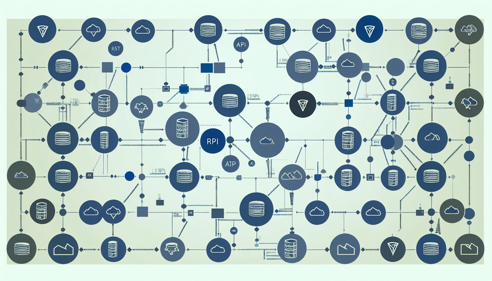
- 내부망 진입점에 역할을 하는 GW(예. API Gateway) 경우 모든 동작 처리에 무거워지거나, 내부망 내부 통신 제어는 어려움
- 개념 : 마이크로서비스 간에 매시 형태의 통신이나 그 경로를 제어 - 예) 이스티오(Istio), 링커드(Linkerd) - 링크
- 기본 동작 : 파드 간 통신 경로에 프록시를 놓고 트래픽 모니터링이나 트래픽 컨트롤 → 기존 애플리케이션 코드에 수정 없이 구성 가능!
- 애플리케이션 수정 없이, 모든 애플리케이션 통신 사이에 Proxy 를 두고 통신 해보자
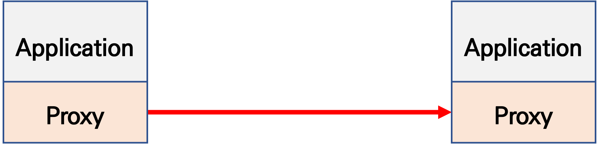
- 파드 내에 사이드카 컨테이너로 주입되어서 동작
- Proxy 컨테이너가 Application 트래픽을 가로채야됨 → iptables rule 구현 ⇒ 가능한 이유는?
- Proxy 는 결국 DataPlane 이니, 이를 중앙에서 관리하는 ControlPlane을 두고 중앙에서 관리를 하자
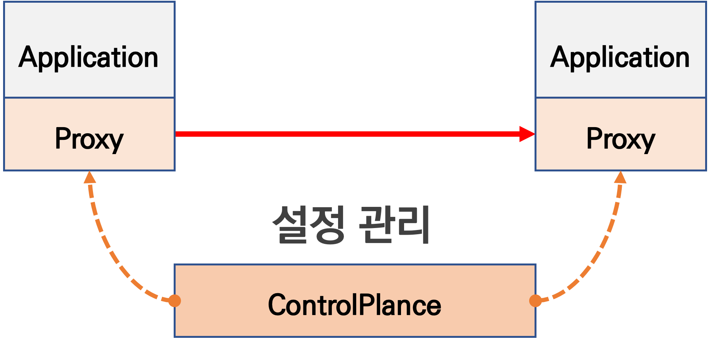
- Proxy 는 중앙에서 설정 관리가 잘되는 툴을 선택. 즉, 원격에서 동적인 설정 관리가 유연해야함 → 풍부한 API 지원이 필요 ⇒ Envoy
- '구글 IBM 리프트(Lyft)'가 중심이 되어 개발하고 있는 오픈 소스 소프트웨어이며, C++ 로 구현된 고성능 Proxy 인 엔보이(Envoy)
- 네트워크의 투명성을 목표, 다양한 필터체인 지원(L3/L4, HTTP L7), 동적 configuration API 제공, api 기반 hot reload 제공
- 중앙에서 어떤 동작/설정을 관리해야 될까? 라우팅, 보안 통신을 위한 mTLS 관련, 동기화 상태 정보 등
- Proxy 는 중앙에서 설정 관리가 잘되는 툴을 선택. 즉, 원격에서 동적인 설정 관리가 유연해야함 → 풍부한 API 지원이 필요 ⇒ Envoy
- 애플리케이션 수정 없이, 모든 애플리케이션 통신 사이에 Proxy 를 두고 통신 해보자
- 트래픽 모니터링 : 요청의 '에러율, 레이턴시, 커넥션 개수, 요청 개수' 등 메트릭 모니터링, 특정 서비스간 혹은 특정 요청 경로로 필터링 → 원인 파악 용이!
- 트래픽 컨트롤 : 트래픽 시프팅(Traffic shifting), 서킷 브레이커(Circuit Breaker), 폴트 인젝션(Fault Injection), 속도 제한(Rate Limit)
- 트래픽 시프팅(Traffic shifting) : 예시) 99% 기존앱 + 1% 신규앱 , 특정 단말/사용자는 신규앱에 전달하여 단계적으로 적용하는 카니리 배포 가능
- 서킷 브레이커(Circuit Breaker) : 목적지 마이크로서비스에 문제가 있을 시 접속을 차단하고 출발지 마이크로서비스에 요청 에러를 반환 (연쇄 장애, 시스템 전제 장애 예방)
- 폴트 인젝션(Fault Injection) : 의도적으로 요청을 지연 혹은 실패를 구현
- 속도 제한(Rate Limit) : 요청 개수를 제한
- 정환열님이 작성해서 공유해주신 Istio 사내 교육용 자료에서 가져왔습니다.
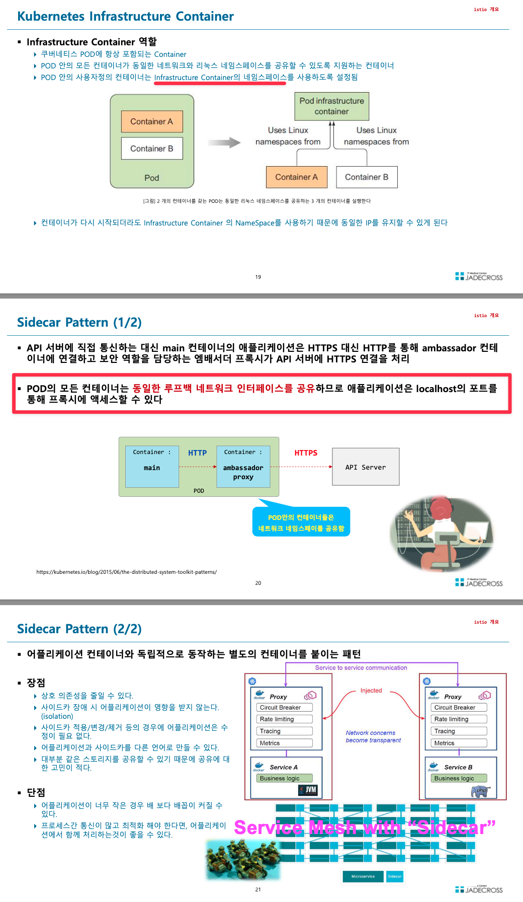
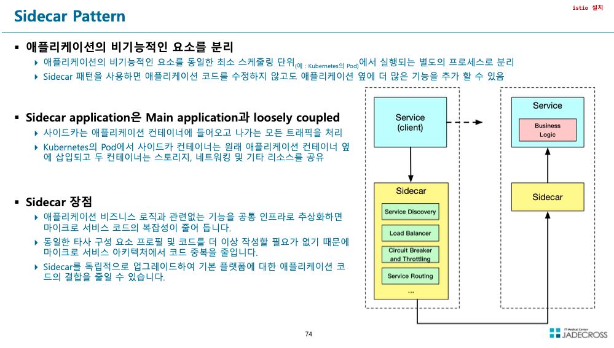
- 등장 배경 : 마이크로서비스 아키텍처 환경의 시스템 전체 모니터링의 어려움, 운영 시 시스템 장애나 문제 발생할 때 원인과 병목 구간 찾기 어려움
1.3. Cilium Service Mesh 소개* - Docs , Youtube
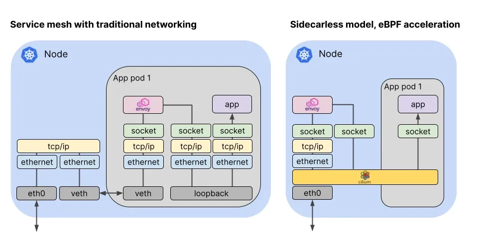
- Why Cilium Service Mesh?
- L3/L4 수준 프로토콜 : eBPF 처리
- IP, TCP, UDP와 같은 프로토콜을 포함한 모든 네트워크 처리에 대해 Cilium은 고효율 커널 내부 데이터 경로로 eBPF를 사용.
- For all network processing including protocols such as IP, TCP, and UDP, Cilium uses eBPF as the highly efficient in-kernel datapath
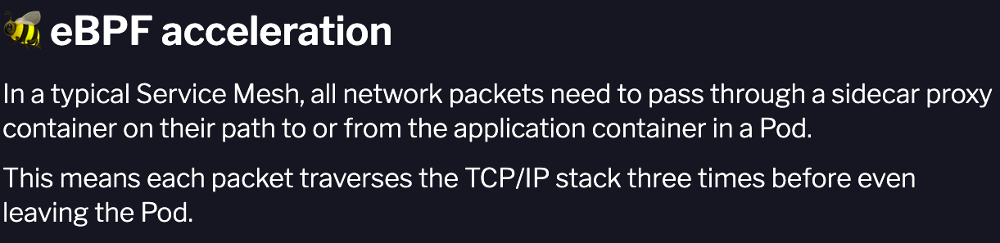
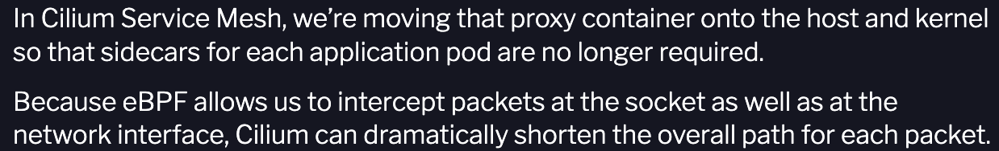
- L7 수준 애플리케이션 : cilium-envoy 처리
- HTTP, Kafka, gRPC, DNS와 같은 애플리케이션 계층 프로토콜은 Envoy와 같은 프록시를 사용하여 파싱.
- Protocols at the application layer such as HTTP, Kafka, gRPC, and DNS are parsed using a proxy such as Envoy.

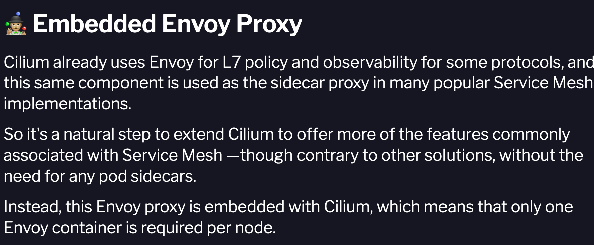
- L3/L4 수준 프로토콜 : eBPF 처리
- 제공 기능
- Resilient Connectivity: Service to service communication must be possible across boundaries such as clouds, clusters, and premises. Communication must be resilient and fault tolerant.
- L7 Traffic Management: Load balancing, rate limiting, and resiliency must be L7-aware (HTTP, REST, gRPC, WebSocket, …).
- Identity-based Security: Relying on network identifiers to achieve security is no longer sufficient, both the sending and receiving services must be able to authenticate each other based on identities instead of a network identifier.
- 서비스 계정, 네임스페이스, Pod 이름 등 워크로드 아이덴티티를 SPIFFE ID (ex:
spiffe://cluster.local/ns/namespace/sa/serviceaccount)로 표현해 인증서에 포함합니다
- 서비스 계정, 네임스페이스, Pod 이름 등 워크로드 아이덴티티를 SPIFFE ID (ex:
- Observability & Tracing: Observability in the form of tracing and metrics is critical to understanding, monitoring, and troubleshooting application stability, performance, and availability.
- Transparency: The functionality must be available to applications in a transparent manner, i.e. without requiring to change application code.
- Why Cilium Service Mesh?
- TPROXY 코드 이해 : 방화벽 코드가 소켓 처리 함수를 부름 → 이후 TPROXY 는 실제로 소켓 할당. - Blog
case NFT_LOOKUP_LISTENER: sk = inet_lookup_listener(net, &tcp_hashinfo, skb, ip_hdrlen(skb) + __tcp_hdrlen(tcph), saddr, sport, daddr, dport, in->ifindex, 0);
{kind=link}
{kind=link}
{kind=link}
{kind=link}
{kind=link}
{kind=link}
{kind=link}
{kind=link}
{kind=link}
{kind=link}
- K8S Ingress Support
2.1. Cilium K8S Ingress Support 소개 - Docs
- Cilium uses the standard Kubernetes Ingress resource definition, with an
ingressClassNameofcilium.
- This can be used for path-based routing and for TLS termination. For backwards compatibility, he
kubernetes.io/ingress.classannotation with value ofciliumis also supported.
- The ingress controller creates a Service of LoadBalancer type, so your environment will need to support this.
- Cilium allows you to specify load balancer mode for the Ingress resource:
dedicated: The Ingress controller will create a dedicated loadbalancer for the Ingress.
shared: The Ingress controller will use a shared loadbalancer for all Ingress resources.
- Each load balancer mode has its own benefits and drawbacks. The shared mode saves resources by sharing a single LoadBalancer config across all Ingress resources in the cluster, while the dedicated mode can help to avoid potential conflicts (e.g. path prefix) between resources.
- It is possible to change the load balancer mode for an Ingress resource.
- When the mode is changed, active connections to backends of the Ingress may be terminated during the reconfiguration due to a new load balancer IP address being assigned to the Ingress resource. → 기존 모드 변경 시 LB IP 변경되어 Ingress 백엔드 활성 연결 종료됨.
- 필수 조건
- Cilium must be configured with NodePort enabled, using
nodePort.enabled=trueor by enabling the kube-proxy replacement withkubeProxyReplacement=true. For more information, see kube-proxy replacement.
- Cilium must be configured with the L7 proxy enabled using
l7Proxy=true(enabled by default).
- By default, the Ingress controller creates a Service of LoadBalancer type, so your environment will need to support this. Alternatively, you can change this to NodePort or, since Cilium 1.16+, directly expose the Cilium L7 proxy on the host network.
- Cilium must be configured with NodePort enabled, using
- How Cilium Ingress and Gateway API differ from other Ingress controllers
- Cilium의 Ingress 및 Gateway API 지원과 다른 Ingress 컨트롤러 간의 가장 큰 차이점 중 하나는 구현이 CNI와 얼마나 밀접하게 연결되어 있는지입니다. Cilium의 경우 Ingress와 Gateway API는 네트워킹 스택의 일부이므로 다른 Ingress 또는 Gateway API 컨트롤러(심지어 Cilium 클러스터에서 실행되는 다른 Ingress 또는 Gateway API 컨트롤러)와는 다른 방식으로 작동합니다.
- 다른 Ingress 또는 Gateway API 컨트롤러는 일반적으로 클러스터에 Deployment 또는 데몬셋으로 설치되며, Loadbalancer Service 또는 이와 유사한 서비스를 통해 노출됩니다. (물론 Cilium은 이를 활성화할 수 있습니다).
- Cilium Ingress 및 Gateway API 구성은 Loadbalancer 또는 NodePort 서비스를 통해 노출되거나, 선택적으로 Host network에서도 노출될 수 있습니다. 이 모든 경우에 트래픽이 서비스의 포트에 도착하면 eBPF 코드가 트래픽을 가로채어 투명하게 Envoy에 전달합니다(TPROXY 커널 기능을 사용하여).
- 아래는 ChatGPT 내용으로 부정확할 수 있음
- 패킷이 Kubernetes Service IP:Port에 도착하면, kube-proxy 없이 Cilium의 eBPF가 이를 가로챔.
- Cilium은 Envoy Proxy를 L7 데이터플레인으로 사용. 하지만 단순 포트포워딩(REDIRECT)이 아니라, 커널의 TPROXY(Transparent Proxy) 기능을 이용함.
- 커널 netfilter/iptables에서 지원하는 특수 기능
- ‘투명 프록시’ 역할 : 클라이언트는 원래 목적지로 연결했다고 생각하지만, 사실상 로컬 프록시(여기서는 Envoy)로 트래픽이 리디렉션됨
- 원본 destination IP/Port, source IP/Port를 유지한 채 소켓 레벨에서 Envoy가 트래픽을 가로채어 처리할 수 있음
- 즉, Envoy가 "내가 80/443 포트에서 직접 리스닝한 것처럼" 패킷을 받을 수 있고, 그 과정은 클라이언트 입장에서 완전히 투명합니다.
- 동작 경로
- [Client] → [K8s Node:Ingress/Gateway Service Port]
→ (eBPF Service LB) → (TPROXY) → [Envoy Proxy (Pod)]
→ (L7 라우팅/정책 처리) → (eBPF) → [Backend Pod]
- [Client] → [K8s Node:Ingress/Gateway Service Port]
- 아래는 ChatGPT 내용으로 부정확할 수 있음
- 이는 Client IP visibility 같은 문제에 영향을 미치며, 이는 다른 입력 컨트롤러에 대한 Cilium의 Ingress 또는 Gateway API과 다르게 작동합니다.
- 또한 Cilium의 네트워크 정책 엔진이 Ingress에서 들어오는 트래픽 경계와 트래픽에 CiliumNetworkPolicy를 적용할 수 있도록 합니다.
- Cilium’s ingress config and CiliumNetworkPolicy
- 노드별 envoy proxy 에 Network policy 정책 적용할 수 있다.
- Ingress and Gateway API traffic bound to backend services via Cilium passes through a per-node Envoy proxy.
- The per-node Envoy proxy has special code that allows it to interact with the eBPF policy engine, and do policy lookups on traffic.
- This allows Envoy to be a Network Policy enforcement point, both for Ingress (and Gateway API) traffic, and also for east-west traffic via GAMMA or L7 Traffic Management.
- However, for ingress config, there’s also an additional step. Traffic that arrives at Envoy for Ingress or Gateway API is assigned the special ingress identity in Cilium’s Policy engine. Cilium의 정책 엔진에서 특수 입력 ID가 할당.
- 클러스터 외부에서 들어오는 트래픽은 일반적으로 클러스터에 (IP CIDR 정책이 없는 한) world identity가 할당됩니다.
- 이는 실제로 실리움 인그레스에 두 개의 논리적 정책 집행 지점이 있다는 것을 의미합니다. two logical Policy enforcement points.
- before traffic arrives at the ingress identity, and after, when it is about to exit the per-node Envoy.

- This means that, when applying Network Policy to a cluster, it’s important to ensure that both steps are allowed, and that traffic is allowed from world to ingress, and from ingress to identities in the cluster (like the productpage identity in the image above). although the same principles also apply for Gateway API. Gateway API도 동일하게 적용된다.
- Source IP Visibility
- By default, Cilium’s Envoy instances are configured to append the visible source address of incoming HTTP connections to the
X-Forwarded-Forheader, using the usual rules.
- That is, by default Cilium sets the number of
trusted hopsto0, indicating that Envoy should use the address the connection is opened from, rather than a value inside theX-Forwarded-For list.
Increasingthis count will have Envoy use thenth value from the list, counting from theright.
- Envoy will also set the X-Envoy-External-Address header to the trusted client address, whatever that turns out to be, based on X-Forwarded-For.
externalTrafficPolicy for Loadbalancer or NodePort Services- Cilium’s ingress support (both for Ingress and Gateway API) often uses a Loadbalancer or NodePort Service to expose the Envoy Daemonset.
- In these cases, the Service object has one field that is particularly relevant to Client IP visibility - the
externalTrafficPolicyfield.
- Local:
- Nodes will only route traffic to Pods running on the local node, without masquerading the source IP. Because of this, in clusters that use kube-proxy, this is the only way to ensure source IP visibility.
- Part of the contract for externalTrafficPolicy local is also that the node will open a port (the healthCheckNodePort, automatically set by Kubernetes when externalTrafficPolicy: Local is set), and requests to http://<nodeIP>:<healthCheckNodePort>/healthz will return 200 on nodes that have local pods running, and non-200 on nodes that don’t.
- Cilium implements this for general Loadbalancer Services, but it’s a bit different for Cilium ingress config (both Ingress and Gateway API).
- Cluster:
- Node will route to all endpoints across the cluster evenly. This has a couple of other effects:
- Firstly, upstream loadbalancers will expect to be able to send traffic to any node and have it end up at a backend Pod, and the node may masquerade the source IP.
- This means that in many cases, externalTrafficPolicy: Cluster may mean that the backend pod does not see the source IP.
- Cilium의 경우, Envoy를 노출하는 서비스에 대한 모든 입력 트래픽은 항상 로컬 노드로 전달되며, 항상 Linux Kernel TPROXY 함수를 사용하여 Envoy로 전달됩니다. 이 함수는 패킷을 백엔드로 투명하게 전달합니다.
- This means that for Cilium ingress config, for both Ingress and Gateway API, things work a little differently in both externalTrafficPolicy cases.
👉🏻In both
externalTrafficPolicycases, traffic will arrive at any node in the cluster, and be forwarded to Envoy while keeping the source IP intact.- 또한, Cilium’s Envoy를 노출하는 모든 서비스에 대해, Cilium은 externalTrafficPolicy: Local이 설정되면 클러스터의 모든 노드가 healthCheckNodePort 검사를 통과하여 외부 로드 밸런서가 올바르게 전달되도록 보장합니다.
- Cilium의 ingress config인 Ingress와 Gateway API 모두에서 소스 IP를 백엔드 포드에 표시할 수 있도록 하기 위해 externalTrafficPolicy: Local을 구성할 필요는 없습니다. (X-Forward-For 및 X-Envoy-External-Address 필드를 통해)
- By default, Cilium’s Envoy instances are configured to append the visible source address of incoming HTTP connections to the
- TLS Passthrough and source IP visibility
- Ingress와 Gateway API는 모두 TLS Passthrough 구성을 지원합니다(Ingress는 annotation, Gateway API는 TLSRoute 리소스를 통해).
- 이 구성을 통해 여러 TLS Passthrough 백엔드가 로드밸런서에서 동일한 TLS 포트를 공유할 수 있으며, Envoy은 TLS 핸드셰이크의 서버 이름 표시기(SNI) 필드를 검사하고 이를 사용하여 TLS 스트림을 백엔드로 전달합니다.
- 그러나 이는 소스 IP visibility 문제를 제기합니다. 왜냐하면 Envoy이 TLS 스트림의 TCP 프록시를 수행하고 있기 때문입니다.
- TLS 트래픽이 Envoy에 도착하여 TCP 스트림을 종료하고, Envoy이 클라이언트 hello를 검사하여 SNI를 찾고, 전달할 백엔드를 선택한 다음, 새로운 TCP 스트림을 시작하고, 다운스트림(외부) 패킷 내부의 TLS 트래픽을 업스트림(백엔드)으로 전달하는 방식입니다.
- 새로운 TCP 스트림이기 때문에 백엔드에 관한 한 소스 IP는 Envoy(실리움 구성에 따라 노드 IP인 경우가 많습니다)입니다.
- TLS Passthrough 수행할 때 백엔드는 전달된 TLS 스트림의 소스로 Cilium Envoy IP 주소를 인식합니다.
- Ingress Path Types and Precedence
- The Ingress specification supports three types of paths:
- 정확히 Exact - match the given path exactly.
- 접두사 Prefix - match the URL path prefix split by
/.- The last path segment must match the whole segment -
- if you configure a Prefix path of
/foo/bar,/foo/bar/bazwill match, but/foo/barbazwill not.
- IngressClass에 맡김 ImplementationSpecific
- Interpretation of the Path is up to the IngressClass. In Cilium’s case, we define ImplementationSpecific to be “Regex”, so Cilium will interpret any given path as a regular expression and program Envoy accordingly.
- Notably, some other implementations have ImplementationSpecific mean “Prefix”, and in those cases, Cilium will treat the paths differently.
- (Since a path like
/foo/barcontains no regex characters, when it is configured in Envoy as a regex, it will function as anExactmatch instead).
- When multiple path types are configured on an Ingress object, Cilium will configure Envoy with the matches in the following order:
- Exact
- ImplementationSpecific (that is, regular expression)
- Prefix
- The
/Prefix match has special handling and always goes last.
- Within each of these path types, the paths are sorted in decreasing order of string length.
- If you do use ImplementationSpecific regex support, be careful with using the
*operator, since it will increase the length of the regex, but may match another, shorter option.
- For example, if you have two ImplementationSpecific paths,
/impl, and/impl.*, the second will be sorted ahead of the first in the generated config. But because*is in use, the/implmatch will never be hit, as any request to that path will match the/impl.*path first.
- See the Ingress Path Types for more information.
- The Ingress specification supports three types of paths:
- Supported Ingress Annotations : 지원되는 인그레스 애너테이션 확인 - Docs
- Host network mode : expose the Cilium ingress controller (Envoy listener) directly on the host network
- This is useful in cases where a LoadBalancer Service is unavailable, such as in development environments or environments with cluster-external loadbalancers.
- Bind to privileged port
- Deploy Cilium Ingress listeners on subset of nodes : 특정 노드만 노출 - Docs
- Cilium uses the standard Kubernetes Ingress resource definition, with an
2.2. eBPF Datapath : Ingress to → Endpoint - Docs , Youtube

https://docs.cilium.io/en/stable/network/ebpf/lifeofapacket/#ingress-to-endpoint
2.3. Cilium K8S Ingress Support 관련 정보 확인 : Cilium Ingress 와 Cilium GatewayAPI는 동시 활성화 불가능함. 다른 Ingress(nginx) 와는 가능.
# cilium 설치 시 아래 파라미터 적용되어 있음 ## --set ingressController.enabled=true ## --set ingressController.loadbalancerMode=shared ## --set loadBalancer.l7.backend=envoy \ cilium config view | grep -E '^loadbalancer|l7' enable-l7-proxy true loadbalancer-l7 envoy loadbalancer-l7-algorithm round_robin loadbalancer-l7-ports # ingress 에 예약된 내부 IP 확인 : node(cilium-envoy) 별로 존재 kubectl exec -it -n kube-system ds/cilium -- cilium ip list | grep ingress 172.20.0.217/32 reserved:ingress 172.20.1.29/32 reserved:ingress # cilium-envoy 확인 kubectl get ds -n kube-system cilium-envoy -owide ... cilium-envoy 2 2 2 2 2 kubernetes.io/os=linux 72m kubectl get pod -n kube-system -l k8s-app=cilium-envoy -owide NAME READY STATUS RESTARTS AGE IP NODE NOMINATED NODE READINESS GATES cilium-envoy-bsgvs 1/1 Running 0 67m 192.168.10.100 k8s-ctr <none> <none> cilium-envoy-z2sgk 1/1 Running 0 65m 192.168.10.101 k8s-w1 <none> <none> kc describe pod -n kube-system -l k8s-app=cilium-envoy ... Containers: cilium-envoy: Container ID: containerd://df0215f93e3193eaf81281e40cbdaa6ca1136c2ee3268fe3bcb60875f34bdbbf Image: quay.io/cilium/cilium-envoy:v1.34.4-1754895458-68cffdfa568b6b226d70a7ef81fc65dda3b890bf@sha256:247e908700012f7ef56f75908f8c965215c26a27762f296068645eb55450bda2 Image ID: quay.io/cilium/cilium-envoy@sha256:247e908700012f7ef56f75908f8c965215c26a27762f296068645eb55450bda2 Port: 9964/TCP Host Port: 9964/TCP Command: /usr/bin/cilium-envoy-starter Args: -- -c /var/run/cilium/envoy/bootstrap-config.json --base-id 0 ... Mounts: /sys/fs/bpf from bpf-maps (rw) /var/run/cilium/envoy/ from envoy-config (ro) /var/run/cilium/envoy/artifacts from envoy-artifacts (ro) /var/run/cilium/envoy/sockets from envoy-sockets (rw) /var/run/secrets/kubernetes.io/serviceaccount from kube-api-access-6gsbl (ro) ... Volumes: envoy-sockets: Type: HostPath (bare host directory volume) Path: /var/run/cilium/envoy/sockets HostPathType: DirectoryOrCreate envoy-artifacts: Type: HostPath (bare host directory volume) Path: /var/run/cilium/envoy/artifacts HostPathType: DirectoryOrCreate envoy-config: Type: ConfigMap (a volume populated by a ConfigMap) Name: cilium-envoy-config Optional: false bpf-maps: Type: HostPath (bare host directory volume) Path: /sys/fs/bpf HostPathType: DirectoryOrCreate # ls -al /var/run/cilium/envoy/sockets total 0 drwxr-xr-x 3 root root 120 Aug 23 14:15 . drwxr-xr-x 4 root root 80 Aug 23 14:14 .. srw-rw---- 1 root 1337 0 Aug 23 14:15 access_log.sock srwxr-xr-x 1 root root 0 Aug 23 14:15 admin.sock drwxr-xr-x 3 root root 60 Aug 23 14:15 envoy srw-rw---- 1 root 1337 0 Aug 23 14:15 xds.sock # ds로 배포된 clilium-envoy pod는 위에서 본것처럼 localhost HostPath의 경로에 자신의 socke log file과 config 정보를 mount한다. kubectl exec -it -n kube-system ds/cilium-envoy -- ls -al /var/run/cilium/envoy kubectl exec -it -n kube-system ds/cilium-envoy -- cat /var/run/cilium/envoy/bootstrap-config.json kubectl exec -it -n kube-system ds/cilium-envoy -- cat /var/run/cilium/envoy/bootstrap-config.json > envoy.json cat envoy.json | jq # envoy configmap 설정 내용 확인 kubectl -n kube-system get configmap cilium-envoy-config kubectl -n kube-system get configmap cilium-envoy-config -o json \ | jq -r '.data["bootstrap-config.json"]' \ | jq . ... { "admin": { "address": { "pipe": { "path": "/var/run/cilium/envoy/sockets/admin.sock" } } }, ... "listeners": [ { "address": { "socketAddress": { "address": "0.0.0.0", "portValue": 9964 ... tree /sys/fs/bpf /sys/fs/bpf ├── cilium │ ├── devices │ │ ├── cilium_host │ │ │ └── links │ │ │ ├── cil_from_host │ │ │ └── cil_to_host │ │ ├── cilium_net │ │ │ └── links │ │ │ └── cil_to_host │ │ ├── eth0 │ │ │ └── links │ │ │ ├── cil_from_netdev │ │ │ └── cil_to_netdev │ │ └── eth1 │ │ └── links │ │ ├── cil_from_netdev │ │ └── cil_to_netdev │ ├── endpoints │ │ ├── 1059 │ │ │ └── links │ │ │ └── cil_from_container ... # kubectl get svc,ep -n kube-system cilium-envoy NAME TYPE CLUSTER-IP EXTERNAL-IP PORT(S) AGE service/cilium-envoy ClusterIP None <none> 9964/TCP 74m NAME ENDPOINTS AGE endpoints/cilium-envoy 192.168.10.100:9964,192.168.10.101:9964 74m # kubectl get svc,ep -n kube-system cilium-ingress NAME TYPE CLUSTER-IP EXTERNAL-IP PORT(S) AGE service/cilium-ingress LoadBalancer 10.96.204.22 <pending> 80:31839/TCP,443:30296/TCP 74m # Cilium → Envoy 간의 제어 채널(= Envoy Control Plane), 외부 클라이언트가 접근하는 데이터 채널이 아님 by ChatGPT NAME ENDPOINTS AGE endpoints/cilium-ingress 192.192.192.192:9999 74m
2.4. LB-IPAM 설정 후 확인 : CiliumL2AnnouncementPolicy
# 현재 L2 Announcement 활성화 상태 cilium config view | grep l2 enable-l2-announcements true enable-l2-neigh-discovery false # 충돌나지 않는지 대역 확인 할 것! cat << EOF | kubectl apply -f - apiVersion: "cilium.io/v2" kind: CiliumLoadBalancerIPPool metadata: name: "cilium-lb-ippool" spec: blocks: - start: "192.168.10.211" stop: "192.168.10.215" EOF kubectl get ippool NAME DISABLED CONFLICTING IPS AVAILABLE AGE cilium-lb-ippool false False 4 10s kubectl get ippools -o jsonpath='{.items[*].status.conditions[?(@.type!="cilium.io/PoolConflict")]}' | jq { "lastTransitionTime": "2025-08-23T06:30:47Z", "message": "5", "observedGeneration": 1, "reason": "noreason", "status": "Unknown", "type": "cilium.io/IPsTotal" } { "lastTransitionTime": "2025-08-23T06:30:47Z", "message": "4", "observedGeneration": 1, "reason": "noreason", "status": "Unknown", "type": "cilium.io/IPsAvailable" } { "lastTransitionTime": "2025-08-23T06:30:47Z", "message": "1", "observedGeneration": 1, "reason": "noreason", "status": "Unknown", "type": "cilium.io/IPsUsed" } # L2 Announcement 정책 설정 cat << EOF | kubectl apply -f - apiVersion: "cilium.io/v2alpha1" kind: CiliumL2AnnouncementPolicy metadata: name: policy1 spec: interfaces: - eth1 externalIPs: true loadBalancerIPs: true EOF # 현재 리더 역할 노드 확인 => k8s-w1 node가 CiliumL2AnnouncementPolicy의 설정에 의해서 leaser가 되고 garp를 통해 LBIP와 MAC Address 전파 kubectl -n kube-system get lease | grep "cilium-l2announce" cilium-l2announce-kube-system-cilium-ingress k8s-w1 24s kubectl -n kube-system get lease/cilium-l2announce-kube-system-cilium-ingress -o yaml | yq # K8S 클러스터 내부 LB EX-IP로 호출 가능 LBIP=$(kubectl get svc -n kube-system cilium-ingress -o jsonpath='{.status.loadBalancer.ingress[0].ip}') echo $LBIP arping -i eth1 $LBIP -c 2 # k8s 외부 노드(router)에서 LB EX-IP로 호출 가능 확인 sshpass -p 'vagrant' ssh vagrant@router sudo arping -i eth1 $LBIP -c 2 ARPING 192.168.10.211 60 bytes from 08:00:27:f4:4c:61 (192.168.10.211): index=0 time=550.708 usec 60 bytes from 08:00:27:f4:4c:61 (192.168.10.211): index=1 time=419.959 usec
2.5. Ingress HTTP Example : XFF 확인 - Docs
- The example ingress configuration routes traffic to backend services from the
bookinfodemo microservices app from the Istio project.
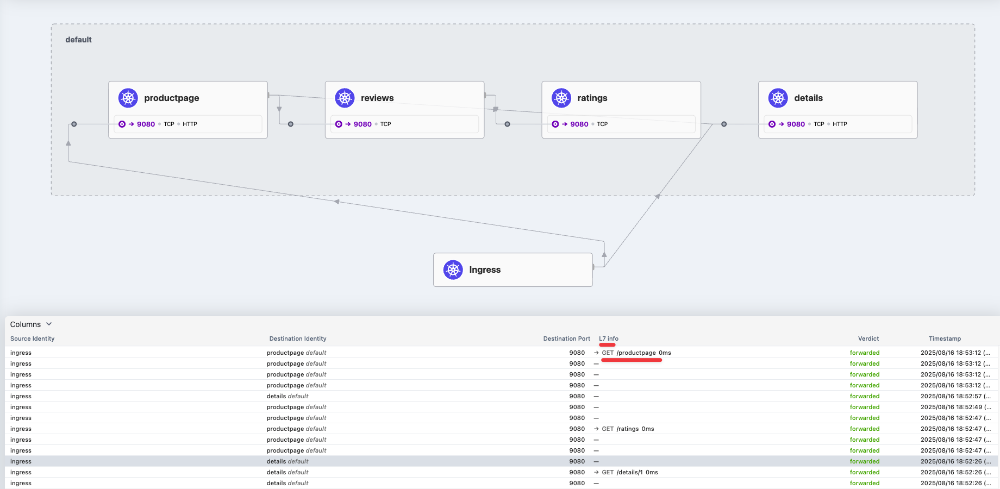
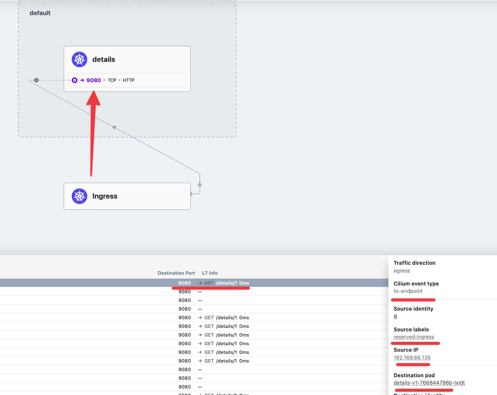
# Deploy the Demo App : 공식 문서는 release-1.11 로 ARM CPU 에서 실패한다. 1.26 버전을 높여서 샘플 배포 할 것! kubectl apply -f https://raw.githubusercontent.com/istio/istio/release-1.26/samples/bookinfo/platform/kube/bookinfo.yaml # istio 와 다르게 사이드카 컨테이너가 없다 1/1 , NodePort와 LoadBalancer 서비스 없다. kubectl get pod,svc,ep # kc describe ingressclasses.networking.k8s.io kubectl get ingressclasses.networking.k8s.io NAME CONTROLLER PARAMETERS AGE cilium cilium.io/ingress-controller <none> 16m # Basic ingress for istio bookinfo demo application, which can be found in below cat << EOF | kubectl apply -f - apiVersion: networking.k8s.io/v1 kind: Ingress metadata: name: basic-ingress namespace: default spec: ingressClassName: cilium rules: - http: paths: - backend: service: name: details port: number: 9080 path: /details pathType: Prefix - backend: service: name: productpage port: number: 9080 path: / pathType: Prefix EOF # Adress 는 cilium-ingress LoadBalancer 의 EX-IP kubectl get svc -n kube-system cilium-ingress NAME TYPE CLUSTER-IP EXTERNAL-IP PORT(S) AGE cilium-ingress LoadBalancer 10.96.204.22 192.168.10.211 80:31839/TCP,443:30296/TCP 107m kubectl get ingress NAME CLASS HOSTS ADDRESS PORTS AGE basic-ingress cilium * 192.168.10.211 80 113s kc describe ingress Rules: Host Path Backends ---- ---- -------- * /details details:9080 (172.20.1.66:9080) / productpage:9080 (172.20.1.71:9080) # 호출 확인 LBIP=$(kubectl get svc -n kube-system cilium-ingress -o jsonpath='{.status.loadBalancer.ingress[0].ip}') echo $LBIP # 실패하는 호출이 있는가? # /ratings라는 rule은 ingress에 없음 -> 404 에러 발생 curl -so /dev/null -w "%{http_code}\n" http://$LBIP/ curl -so /dev/null -w "%{http_code}\n" http://$LBIP/details/1 curl -so /dev/null -w "%{http_code}\n" http://$LBIP/ratings # Access the Bookinfo application curl "http://$LBIP/productpage?u=normal" # 모니터링 cilium hubble port-forward& hubble observe -f -t l7 or hubble observe -f --identity ingress ... # router에서 호출 curl -so /dev/null -w "%{http_code}\n" http://$LBIP/ curl -so /dev/null -w "%{http_code}\n" http://$LBIP/details/1 sshpass -p 'vagrant' ssh vagrant@router curl -s http://$LBIP/ sshpass -p 'vagrant' ssh vagrant@router curl -s http://$LBIP/details/1 -v ... < content-type: application/json < server: envoy < date: Sat, 23 Aug 2025 07:08:31 GMT < content-length: 178 < x-envoy-upstream-service-time: 2 sshpass -p 'vagrant' ssh vagrant@router curl -s http://$LBIP/ratings <!doctype html> <html lang=en> <title>404 Not Found</title> <h1>Not Found</h1> <p>The requested URL was not found on the server. If you entered the URL manually please check your spelling and try again.</p> # productpage-v1 파드가 배포된 노드 확인 kubectl get pod -l app=productpage -owide NAME READY STATUS RESTARTS AGE IP NODE NOMINATED NODE READINESS GATES productpage-v1-54bb874995-9nzfz 1/1 Running 0 10m 172.20.1.71 k8s-w1 <none> <none> # 해당 노드(k8s-w1)에서 veth 인터페이스 정보 확인 PODIP=172.20.1.71 ip route |grep $PODIP 172.20.1.71 dev lxc3587eb778e97 proto kernel scope link PROVETH=lxc3587eb778e97 # ngrep 로 veth 트래픽 캡쳐 : productpage 는 9080 TCP Port 사용 ngrep -tW byline -d $PROVETH '' 'tcp port 9080' # 외부에서 호출 시도 sshpass -p 'vagrant' ssh vagrant@router curl -s http://$LBIP # ngrep 로 veth 트래픽 캡쳐 : productpage 는 9080 TCP Port 사용 ngrep -tW byline -d $PROVETH '' 'tcp port 9080' ## igress(envoy) 가 XFF에 client-ip 담고, 목적지 파드로 요청 ## host: 192.168.10.211.는 cilium-ingress의 EXTERNAL_IP ## x-forwarded-for: 192.168.10.200.는 router의 eth1 IP T 2025/08/23 16:13:12.053975 10.0.2.15:42632 -> 172.20.1.71:9080 [AP] #4 GET / HTTP/1.1. host: 192.168.10.211. user-agent: curl/8.5.0. accept: */*. x-forwarded-for: 192.168.10.200. x-forwarded-proto: http. x-envoy-internal: true. x-request-id: 88e935ce-2630-4f38-9616-06e1a7c30c79. . ## igress(envoy)로 리턴하는 트래픽 T 2025/08/23 16:13:12.056091 172.20.1.71:9080 -> 10.0.2.15:42632 [AP] #6 HTTP/1.1 200 OK. Server: gunicorn. Date: Sat, 23 Aug 2025 07:13:12 GMT. Connection: keep-alive. Content-Type: text/html; charset=utf-8. Content-Length: 2080.- The example ingress configuration routes traffic to backend services from the
2.6. Ingress-Nginx 설치 및 설정 : cilium ingress 와 공존 확인
# Ingress-Nginx 컨트롤러 설치 helm repo add ingress-nginx https://kubernetes.github.io/ingress-nginx helm install ingress-nginx ingress-nginx/ingress-nginx --create-namespace -n ingress-nginx # 확인 kubectl get all -n ingress-nginx kc describe svc -n ingress-nginx ingress-nginx-controller kubectl get svc -n ingress-nginx kubectl get ingressclasses.networking.k8s.io NAME CONTROLLER PARAMETERS AGE cilium cilium.io/ingress-controller <none> 127m nginx k8s.io/ingress-nginx <none> 7s # ingress 설정 cat << EOF | kubectl apply -f - apiVersion: networking.k8s.io/v1 kind: Ingress metadata: name: webpod-ingress-nginx namespace: default spec: ingressClassName: nginx rules: - host: nginx.webpod.local http: paths: - backend: service: name: webpod port: number: 80 path: / pathType: Prefix EOF # ingress LB EX-IP 할당 까지 다소 시간 소요.. kubectl get ingress -w NAME CLASS HOSTS ADDRESS PORTS AGE basic-ingress cilium * 192.168.10.211 80 3m19s webpod-ingress-nginx nginx nginx.webpod.local 192.168.10.212 80 11m # LB2IP=$(kubectl get svc -n ingress-nginx ingress-nginx-controller -o jsonpath='{.status.loadBalancer.ingress[0].ip}') curl $LB2IP curl -H "Host: nginx.webpod.local" $LB2IP curl -H "Host: nginx.webpod.local" $LB2IP Hostname: webpod-697b545f57-qb749 IP: 127.0.0.1 IP: ::1 IP: 172.20.0.151 IP: fe80::844e:98ff:fefc:6e28 RemoteAddr: 172.20.1.213:55322 GET / HTTP/1.1 Host: nginx.webpod.local User-Agent: curl/8.5.0 Accept: */* X-Forwarded-For: 192.168.10.100 X-Forwarded-Host: nginx.webpod.local X-Forwarded-Port: 80 X-Forwarded-Proto: http X-Forwarded-Scheme: http X-Real-Ip: 192.168.10.100 X-Request-Id: 4136f6990dcb299676afc75daaf42c3c X-Scheme: http sshpass -p 'vagrant' ssh vagrant@router "curl -s -H 'Host: nginx.webpod.local' $LB2IP" sshpass -p 'vagrant' ssh vagrant@router "curl -s -H 'Host: nginx.webpod.local' $LB2IP"
2.7. dedicated mode
# Basic ingress for istio bookinfo demo application, which can be found in below cat << EOF | kubectl apply -f - apiVersion: networking.k8s.io/v1 kind: Ingress metadata: name: webpod-ingress namespace: default annotations: ingress.cilium.io/loadbalancer-mode: dedicated spec: ingressClassName: cilium rules: - http: paths: - backend: service: name: webpod port: number: 80 path: / pathType: Prefix EOF # kc describe ingress webpod-ingress # dedicated mode로 생성한 ingress가 새롭게 생성되고 ippool에서 ip를 받음 kubectl get ingress NAME CLASS HOSTS ADDRESS PORTS AGE basic-ingress cilium * 192.168.10.211 80 8m26s webpod-ingress cilium * 192.168.10.213 80 8s webpod-ingress-nginx nginx nginx.webpod.local 192.168.10.212 80 16m kubectl get svc,ep cilium-ingress-webpod-ingress NAME TYPE CLUSTER-IP EXTERNAL-IP PORT(S) AGE service/cilium-ingress-webpod-ingress LoadBalancer 10.96.236.201 192.168.10.213 80:30560/TCP,443:30417/TCP 78s NAME ENDPOINTS AGE endpoints/cilium-ingress-webpod-ingress 192.192.192.192:9999 78s # LB EX-IP에 대한 L2 Announcement 의 Leader 노드 확인 # webpod-ingress로 들어오는 요청은 k8s-ctr로 먼저간다 kubectl get lease -n kube-system | grep ingress cilium-l2announce-default-cilium-ingress-webpod-ingress k8s-ctr 93s cilium-l2announce-ingress-nginx-ingress-nginx-controller k8s-ctr 3m58s cilium-l2announce-kube-system-cilium-ingress k8s-w1 53m # webpod 파드 IP 확인 kubectl get pod -l app=webpod -owide NAME READY STATUS RESTARTS AGE IP NODE NOMINATED NODE READINESS GATES webpod-697b545f57-qb749 1/1 Running 0 125m 172.20.0.151 k8s-ctr <none> <none> webpod-697b545f57-s2hht 1/1 Running 0 125m 172.20.1.172 k8s-w1 <none> <none> # k8c-ctr, k8s-w1 노드에서 파드 IP에 veth 찾기(ip -c route) 이후 ngrep 로 각각 트래픽 캡쳐 PODIP=172.20.0.151 k8s-ctr:~# ip route |grep $PODIP 172.20.0.151 dev lxcb796999ad32b proto kernel scope link WPODVETH=lxcb796999ad32b PODIP=172.20.1.172 root@k8s-w1:~# ip route |grep $PODIP 172.20.1.172 dev lxc2e4ba930fccd proto kernel scope link WPODVETH=lxc2e4ba930fccd ngrep -tW byline -d $WPODVETH '' 'tcp port 80' # router 에서 호출 확인 LB3IP=$(kubectl get svc cilium-ingress-webpod-ingress -o jsonpath='{.status.loadBalancer.ingress[0].ip}') # router -> LB(webpod-ingress) -> k8s-ctr(leader node) -> backend pod sshpass -p 'vagrant' ssh vagrant@router curl -s http://$LB3IP Hostname: webpod-697b545f57-qb749 IP: 127.0.0.1 IP: ::1 IP: 172.20.1.151 # webpod 파드 IP IP: fe80::844e:98ff:fefc:6e28 RemoteAddr: 10.0.2.15:55942 # webpod 인입 시 S.IP : 마치 L2 Leader 노드(=k8s-ctr)에 webpod로 전달되어, 소스IP가 해당 노드의 첫 번째 NIC IP, GET / HTTP/1.1 Host: 192.168.10.212 User-Agent: curl/8.5.0 Accept: */* X-Envoy-Internal: true X-Forwarded-For: 192.168.10.200 X-Forwarded-Proto: http X-Request-Id: 292040af-f112-4d04-9281-730da5a513d1 # router -> LB(webpod-ingress) -> k8s-ctr(leader node) -> RR에 의해 k8s-w1로 routing -> backend pod sshpass -p 'vagrant' ssh vagrant@router curl -s http://$LB3IP Hostname: webpod-697b545f57-s2hht IP: 127.0.0.1 IP: ::1 IP: 172.20.1.172 IP: fe80::e820:1fff:feb4:2289 RemoteAddr: 172.20.0.217:41237 # webpod 인입 시 S.IP : L2 Leader 노드(k8s-w1)에서 다른 노드에 파드로 전달되어, ingress 예약IP로 SNAT GET / HTTP/1.1. Host: 192.168.10.213. User-Agent: curl/8.5.0. Accept: */*. X-Envoy-Internal: true. X-Forwarded-For: 192.168.10.200. X-Forwarded-Proto: http. X-Request-Id: 934526f3-fbf5-4433-88be-aa859ce28354.
2.8. Ingress and Network Policy Example - Docs
# 클러스터 전체(모든 네임스페이스)에 적용되는 정책 : 참고로 아래 정책 적용 후 Hubble-ui 로 접속 불가! cat << EOF | kubectl apply -f - apiVersion: "cilium.io/v2" kind: CiliumClusterwideNetworkPolicy metadata: name: "external-lockdown" spec: description: "Block all the traffic originating from outside of the cluster" endpointSelector: {} ingress: - fromEntities: - cluster EOF kubectl get ciliumclusterwidenetworkpolicy NAME VALID external-lockdown True # curl --fail -v http://"$LBIP"/details/1 < HTTP/1.1 403 Forbidden # hubble observe -f --identity ingress ## k8s-ctr 에서 curl 실행 시 Aug 23 07:43:07.140: 127.0.0.1:48428 (ingress) -> 127.0.0.1:14917 (world) http-request DROPPED (HTTP/1.1 GET http://192.168.10.211/details/1) Aug 23 07:43:07.140: 127.0.0.1:48428 (ingress) <- 127.0.0.1:14917 (world) http-response FORWARDED (HTTP/1.1 403 1ms (GET http://192.168.10.211/details/1)) ## router 에서 curl 실행 시 Aug 23 07:43:52.143: 192.168.10.200:50280 (ingress) -> kube-system/cilium-ingress:80 (world) http-request DROPPED (HTTP/1.1 GET http://192.168.10.211/details/1) Aug 23 07:43:52.143: 192.168.10.200:50280 (ingress) <- kube-system/cilium-ingress:80 (world) http-response FORWARDED (HTTP/1.1 403 0ms (GET http://192.168.10.211/details/1)) # 스터디 시간(영상 녹화)에서 누락된 내용으로 아래 리소스 생성 후 진행하시면 됩니다! cat << EOF | kubectl apply -f - apiVersion: "cilium.io/v2" kind: CiliumClusterwideNetworkPolicy metadata: name: "allow-cidr" spec: description: "Allow all the traffic originating from a specific CIDR" endpointSelector: matchExpressions: - key: reserved:ingress operator: Exists ingress: - fromCIDRSet: # Please update the CIDR to match your environment - cidr: 192.168.10.200/32 - cidr: 127.0.0.1/32 EOF kubectl get ciliumclusterwidenetworkpolicy NAME VALID allow-cidr True external-lockdown True # 요청 성공! : k8s-ctr , router 모두 가능 curl --fail -v http://"$LBIP"/details/1 ... < HTTP/1.1 200 OK sshpass -p 'vagrant' ssh vagrant@router "curl -s --fail -v http://"$LBIP"/details/1" ... {"id":1,"author":"William Shakespeare","year":1595,"type":"paperback","pages":200,"publisher":"PublisherA","language":"English","ISBN-10":"1234567890","ISBN-13":"123-1234567890"}< HTTP/1.1 200 OK # Default Deny Ingress Policy : DNS쿼리와 kube-system내의 파드 제외 to deny all traffic by default cat << EOF | kubectl apply -f - apiVersion: cilium.io/v2 kind: CiliumClusterwideNetworkPolicy metadata: name: "default-deny" spec: description: "Block all the traffic (except DNS) by default" egress: - toEndpoints: - matchLabels: io.kubernetes.pod.namespace: kube-system k8s-app: kube-dns toPorts: - ports: - port: '53' protocol: UDP rules: dns: - matchPattern: '*' endpointSelector: matchExpressions: - key: io.kubernetes.pod.namespace operator: NotIn values: - kube-system EOF kubectl get ciliumclusterwidenetworkpolicy NAME VALID allow-cidr True default-deny True external-lockdown True # 요청 curl --fail -v http://"$LBIP"/details/1 sshpass -p 'vagrant' ssh vagrant@router "curl -s --fail -v http://"$LBIP"/details/1" # ingress 를 통해서 인입 시 허용 # ingress를 통한 cluster내의 접근 허용 cat << EOF | kubectl apply -f - apiVersion: cilium.io/v2 kind: CiliumClusterwideNetworkPolicy metadata: name: allow-ingress-egress spec: description: "Allow all the egress traffic from reserved ingress identity to any endpoints in the cluster" endpointSelector: matchExpressions: - key: reserved:ingress operator: Exists egress: - toEntities: - cluster EOF kubectl get ciliumclusterwidenetworkpolicy # curl --fail -v http://"$LBIP"/details/1 sshpass -p 'vagrant' ssh vagrant@router "curl -s --fail -v http://"$LBIP"/details/1" {"id":1,"author":"William Shakespeare","year":1595,"type":"paperback","pages":200,"publisher":"PublisherA","language":"English","ISBN-10":"1234567890","ISBN-13":"123-1234567890"}< HTTP/1.1 200 OK curl --fail -v http://"$LB3IP"/details/1 * Trying 192.168.10.213:80... * Connected to 192.168.10.213 (192.168.10.213) port 80 > GET /details/1 HTTP/1.1 > Host: 192.168.10.213 > User-Agent: curl/8.5.0 > Accept: */* > < HTTP/1.1 200 OK < date: Sat, 23 Aug 2 # 정책 삭제 kubectl delete CiliumClusterwideNetworkPolicy --all
2.9. Ingress Path Types Example - Docs
# Apply the base definitions kubectl apply -f https://raw.githubusercontent.com/cilium/cilium/main/examples/kubernetes/servicemesh/ingress-path-types.yaml # 확인 kubectl get -f https://raw.githubusercontent.com/cilium/cilium/main/examples/kubernetes/servicemesh/ingress-path-types.yaml NAME READY UP-TO-DATE AVAILABLE AGE deployment.apps/exactpath 1/1 1 1 14s deployment.apps/prefixpath 1/1 1 1 14s deployment.apps/prefixpath2 1/1 1 1 14s deployment.apps/implpath 1/1 1 1 14s deployment.apps/implpath2 1/1 1 1 14s NAME TYPE CLUSTER-IP EXTERNAL-IP PORT(S) AGE service/prefixpath ClusterIP 10.96.128.82 <none> 80/TCP 14s service/prefixpath2 ClusterIP 10.96.237.102 <none> 80/TCP 13s service/exactpath ClusterIP 10.96.58.193 <none> 80/TCP 13s service/implpath ClusterIP 10.96.214.94 <none> 80/TCP 13s service/implpath2 ClusterIP 10.96.19.36 <none> 80/TCP 13s # Apply the Ingress kubectl apply -f https://raw.githubusercontent.com/cilium/cilium/main/examples/kubernetes/servicemesh/ingress-path-types-ingress.yaml kubectl get -f https://raw.githubusercontent.com/cilium/cilium/main/examples/kubernetes/servicemesh/ingress-path-types-ingress.yaml NAME CLASS HOSTS ADDRESS PORTS AGE multiple-path-types cilium pathtypes.example.com 192.168.10.211 80 4s # 확인 kc describe ingress multiple-path-types Name: multiple-path-types Labels: <none> Namespace: default Address: 192.168.10.211 Ingress Class: cilium Default backend: <default> Rules: Host Path Backends ---- ---- -------- pathtypes.example.com /exact exactpath:80 (172.20.1.125:3000) / prefixpath:80 (172.20.1.80:3000) /prefix prefixpath2:80 (172.20.1.37:3000) /impl implpath:80 (172.20.1.9:3000) /impl.+ implpath2:80 (172.20.1.38:3000) Annotations: <none> Events: <none> kc get ingress multiple-path-types -o yaml spec: ingressClassName: cilium rules: - host: pathtypes.example.com http: paths: - backend: service: name: exactpath port: number: 80 path: /exact pathType: Exact - backend: service: name: prefixpath port: number: 80 path: / pathType: Prefix - backend: service: name: prefixpath2 port: number: 80 path: /prefix pathType: Prefix - backend: service: name: implpath port: number: 80 path: /impl pathType: ImplementationSpecific - backend: service: name: implpath2 port: number: 80 path: /impl.+ # regex 적용 pathType: ImplementationSpecific # 호출 확인 export PATHTYPE_IP=`k get ing multiple-path-types -o json | jq -r '.status.loadBalancer.ingress[0].ip'` curl -s -H "Host: pathtypes.example.com" http://$PATHTYPE_IP/ | jq # 파드명 이름 확인 kubectl get pod | grep path exactpath-7488f8c6c6-cjqmn 1/1 Running 0 2m20s implpath-7d8bf85676-vghks 1/1 Running 0 2m20s implpath2-56c97c8556-mttgs 1/1 Running 0 2m20s prefixpath-5d6b989d4-6kcw4 1/1 Running 0 2m20s prefixpath2-b7c7c9568-j2k7g 1/1 Running 0 2m20s # Should show prefixpath curl -s -H "Host: pathtypes.example.com" http://$PATHTYPE_IP/ | grep -E 'path|pod' "path": "/", "host": "pathtypes.example.com", "pod": "prefixpath-5d6b989d4-6kcw4" # Should show exactpath curl -s -H "Host: pathtypes.example.com" http://$PATHTYPE_IP/exact | grep -E 'path|pod' "path": "/exact", "host": "pathtypes.example.com", "pod": "exactpath-7488f8c6c6-cjqmn" # Should show prefixpath2 curl -s -H "Host: pathtypes.example.com" http://$PATHTYPE_IP/prefix | grep -E 'path|pod' "path": "/prefix", "host": "pathtypes.example.com", "pod": "prefixpath2-b7c7c9568-j2k7g" # Should show implpath curl -s -H "Host: pathtypes.example.com" http://$PATHTYPE_IP/impl | grep -E 'path|pod' "path": "/impl", "host": "pathtypes.example.com", "pod": "implpath-7d8bf85676-vghks # Should show implpath2 => REGEX를 path에 적용 == /impl.+ curl -s -H "Host: pathtypes.example.com" http://$PATHTYPE_IP/implementation | grep -E 'path|pod' "path": "/implementation", "host": "pathtypes.example.com", "pod": "implpath2-56c97c8556-mttgs" curl -s -H "Host: pathtypes.example.com" http://$PATHTYPE_IP/impletest | grep -E 'path|pod' "path": "/impletest", "host": "pathtypes.example.com", "pod": "implpath2-56c97c8556-mttgs" # 삭제 kubectl delete -f https://raw.githubusercontent.com/cilium/cilium/main/examples/kubernetes/servicemesh/ingress-path-types.yaml kubectl delete -f https://raw.githubusercontent.com/cilium/cilium/main/examples/kubernetes/servicemesh/ingress-path-types-ingress.yaml
2.10. Ingress Example with TLS Termination - Docs
- Create TLS Certificate and Private Key : mkcert - Github
- mkcert is a simple tool for making locally-trusted development certificates. It requires no configuration.
# For demonstration purposes we will use a TLS certificate signed by a made-up, self-signed certificate authority (CA). # One easy way to do this is with mkcert. We want a certificate that will validate bookinfo.cilium.rocks and hipstershop.cilium.rocks, as these are the host names used in this example. apt install mkcert -y mkcert -h # mkcert '*.cilium.rocks' # ls -l *.pem -rw------- 1 root root 1704 Aug 23 17:03 _wildcard.cilium.rocks-key.pem -rw-r--r-- 1 root root 1452 Aug 23 17:03 _wildcard.cilium.rocks.pem # openssl x509 -in _wildcard.cilium.rocks.pem -text -noout Issuer: O = mkcert development CA, OU = root@k8s-ctr, CN = mkcert root@k8s-ctr Validity Not Before: Aug 23 08:03:49 2025 GMT Not After : Nov 23 08:03:49 2027 GMT Subject: O = mkcert development certificate, OU = root@k8s-ctr ... X509v3 extensions: X509v3 Key Usage: critical Digital Signature, Key Encipherment X509v3 Extended Key Usage: TLS Web Server Authentication X509v3 Authority Key Identifier: E6:0F:A8:9C:DB:B8:DC:7F:1D:1A:9C:0D:70:46:4F:60:CE:D4:F7:2C X509v3 Subject Alternative Name: DNS:*.cilium.rocks openssl rsa -in _wildcard.cilium.rocks-key.pem -text -noout Private-Key: (2048 bit, 2 primes) modulus: 00:9f:14:9a:d1:e6:ab:da:3d:6b:c2:39:29:ba:35: ... # Mkcert created a key (_wildcard.cilium.rocks-key.pem) and a certificate (_wildcard.cilium.rocks.pem) that we will use for the Gateway service. # Create a Kubernetes TLS secret with this key and certificate: kubectl create secret tls demo-cert --key=_wildcard.cilium.rocks-key.pem --cert=_wildcard.cilium.rocks.pem kubectl get secret demo-cert -o json | jq
- Deploy the Ingress
# cat << EOF | kubectl apply -f - apiVersion: networking.k8s.io/v1 kind: Ingress metadata: name: tls-ingress namespace: default spec: ingressClassName: cilium rules: - host: webpod.cilium.rocks http: paths: - backend: service: name: webpod port: number: 80 path: / pathType: Prefix - host: bookinfo.cilium.rocks http: paths: - backend: service: name: details port: number: 9080 path: /details pathType: Prefix - backend: service: name: productpage port: number: 9080 path: / pathType: Prefix tls: - hosts: - webpod.cilium.rocks - bookinfo.cilium.rocks secretName: demo-cert EOF # kubectl get ingress tls-ingress NAME CLASS HOSTS ADDRESS PORTS AGE tls-ingress cilium webpod.cilium.rocks,bookinfo.cilium.rocks 192.168.10.211 80, 443 5s
- Make requests
# 시스템(OS) 신뢰 저장소에 CA 정보 확인 cat /etc/ssl/certs/ca-certificates.crt ls -al /etc/ssl/certs/ca-certificates.crt -rw-r--r-- 1 root root 219342 Feb 17 2025 /etc/ssl/certs/ca-certificates.crt # Install the Mkcert CA into your system so cURL can trust it: # mkcert -install은 “내 로컬에서 만든 인증서를 시스템이 믿도록” 환경을 꾸며주는 명령. # => 위에서 확인한 /etc/ssl/certs/ca-certificates.crt에 mkcert로 생성한 인증서가 포함되게 됨!! -> linux 배포판마다 위치는 다를 수 있음!! mkcert -install 1. 로컬 CA(자체 루트 인증기관) 생성 # 아직 없으면 로컬 CA 인증서와 개인키를 만듭니다. # 파일은 $(mkcert -CAROOT)가 가리키는 사용자 데이터 디렉터리에 저장돼요(예: rootCA.pem, rootCA-key.pem). 이 위치는 mkcert -CAROOT로 확인합니다. ## CA 저장 위치 확인 mkcert -CAROOT /root/.local/share/mkcert ls "$(mkcert -CAROOT)" rootCA-key.pem rootCA.pem 2. 시스템(OS) 신뢰 저장소에 CA를 등록 # 배포판에 맞는 도구(예: Debian/Ubuntu의 update-ca-certificates, RHEL/Fedora의 update-ca-trust, Arch의 trust)를 사용해 루트 CA 인증서를 시스템 신뢰 저장소에 넣습니다. # 이렇게 하면 OpenSSL/GnuTLS를 쓰는 대부분의 CLI가 이 CA로 서명된 서버 인증서를 신뢰합니다. (curl도 포함) ls -al /etc/ssl/certs/ca-certificates.crt -rw-r--r-- 1 root root 220948 Aug 16 01:04 /etc/ssl/certs/ca-certificates.crt ## 맨 하단에 인증서만 파일로 만들어서 디코딩! tail -n 50 /etc/ssl/certs/ca-certificates.crt > 1.pem vi 1.pem openssl x509 -in 1.pem -text -noout Issuer: O = mkcert development CA, OU = root@k8s-ctr, CN = mkcert root@k8s-ctr Validity Not Before: Aug 23 08:03:49 2025 GMT Not After : Aug 23 08:03:49 2035 GMT Subject: O = mkcert development CA, OU = root@k8s-ctr, CN = mkcert root@k8s-ctr ... X509v3 extensions: X509v3 Key Usage: critical Certificate Sign X509v3 Basic Constraints: critical CA:TRUE, pathlen:0 3. NSS(브라우저) 신뢰 저장소에 등록 # Linux에서는 Firefox/Chromium이 쓰는 NSS 데이터베이스에도 CA를 넣습니다(사전에 certutil 설치 필요). Firefox는 브라우저 재시작이 필요합니다 # Now let's make a request to the Gateway: # The data should be properly retrieved, using HTTPS (and thus, the TLS handshake was properly achieved). # In the next challenge, we will see how to use Gateway API for general TLS traffic. kubectl get ingress tls-ingress -o jsonpath='{.status.loadBalancer.ingress[0].ip}' LBIP=$(kubectl get ingress tls-ingress -o jsonpath='{.status.loadBalancer.ingress[0].ip}') curl -s --resolve bookinfo.cilium.rocks:443:${LBIP} https://bookinfo.cilium.rocks/details/1 | jq curl -s --resolve webpod.cilium.rocks:443:${LBIP} https://webpod.cilium.rocks/ -v ... * CAfile: /etc/ssl/certs/ca-certificates.crt * CApath: /etc/ssl/certs ... * Server certificate: * subject: O=mkcert development certificate; OU=root@k8s-ctr * start date: Aug 23 08:03:49 2025 GMT * expire date: Nov 23 08:03:49 2027 GMT * subjectAltName: host "webpod.cilium.rocks" matched cert's "*.cilium.rocks" * issuer: O=mkcert development CA; OU=root@k8s-ctr; CN=mkcert root@k8s-ctr * SSL certificate verify ok. * Certificate level 0: Public key type RSA (2048/112 Bits/secBits), signed using sha256WithRSAEncryption * Certificate level 1: Public key type RSA (3072/128 Bits/secBits), signed using sha256WithRSAEncryption ... Hostname: webpod-697b545f57-s2hht IP: 127.0.0.1 IP: ::1 IP: 172.20.1.172 IP: fe80::e820:1fff:feb4:2289 RemoteAddr: 172.20.0.217:39301 GET / HTTP/1.1 Host: webpod.cilium.rocks User-Agent: curl/8.5.0 Accept: */* X-Envoy-Internal: true X-Forwarded-For: 10.0.2.15 X-Forwarded-Proto: https X-Request-Id: 5fe570d7-b069-4b71-bb29-e161d3029c7b
- Create TLS Certificate and Private Key : mkcert - Github
도전과제1-3Defaults certificate for Ingresses - Docs
- Ingress 삭제
kubectl delete ingress basic-ingress tls-ingress webpod-ingress
도전과제1-1Ingress Host network mode - Docs
도전과제1-2Ingress gRPC Example: arm64 CPU 미지원 - Docs- Sample demo app - Github
- grpCurl - Github
# For this demo we will use GCP’s microservices demo app. kubectl apply -f https://raw.githubusercontent.com/GoogleCloudPlatform/microservices-demo/main/release/kubernetes-manifests.yaml # 확인 kubectl rollout status -f https://raw.githubusercontent.com/GoogleCloudPlatform/microservices-demo/main/release/kubernetes-manifests.yaml kubectl get -f https://raw.githubusercontent.com/GoogleCloudPlatform/microservices-demo/main/release/kubernetes-manifests.yaml # Since gRPC is binary-encoded, you also need the proto definitions for the gRPC services in order to make gRPC requests. Download this for the demo app: curl -o demo.proto https://raw.githubusercontent.com/GoogleCloudPlatform/microservices-demo/main/protos/demo.proto # kubectl apply -f https://raw.githubusercontent.com/cilium/cilium/1.18.1/examples/kubernetes/servicemesh/grpc-ingress.yaml apiVersion: networking.k8s.io/v1 kind: Ingress metadata: name: grpc-ingress namespace: default spec: ingressClassName: cilium rules: - http: paths: - backend: service: name: productcatalogservice port: number: 3550 path: /hipstershop.ProductCatalogService pathType: Prefix - backend: service: name: currencyservice port: number: 7000 path: /hipstershop.CurrencyService pathType: Prefix # To issue client gRPC requests you can use grpcurl. GRPC_INGRESS=$(kubectl get ingress grpc-ingress -o jsonpath='{.status.loadBalancer.ingress[0].ip}') # To access the currency service: grpcurl -plaintext -proto ./demo.proto $GRPC_INGRESS:80 hipstershop.CurrencyService/GetSupportedCurrencies #To access the product catalog service: grpcurl -plaintext -proto ./demo.proto $GRPC_INGRESS:80 hipstershop.ProductCatalogService/ListProducts ...
{kind=link}
{kind=link}
- Gateway API Support
3.1.
Gateway API의 주요 기능: 현재 최신 v1.3.0, N-S(Ingress) 와 E-S(Service Mesh, GAMMA Initiative) - Home- 개선된 리소스 모델
: API는 GatewayClass, Gateway 및 Route(HTTPRoute, TCPRoute 등)와 같은 새로운 사용자 정의 리소스를 도입하여 라우팅 규칙을 정의하는 보다 세부적이고 표현력 있는 방법을 제공합니다.
- 프로토콜 독립적
: 주로 HTTP용으로 설계된 Ingress와 달리 Gateway API는 TCP, UDP, TLS를 포함한 여러 프로토콜을 지원합니다.
- 강화된 보안
: TLS 구성 및 보다 세부적인 액세스 제어에 대한 기본 제공 지원.
- 교차 네임스페이스 지원
: 서로 다른 네임스페이스의 서비스로 트래픽을 라우팅하여 보다 유연한 아키텍처를 구축할 수 있는 기능을 제공합니다.
- 확장성
: API는 사용자 정의 리소스 및 정책으로 쉽게 확장할 수 있도록 설계되었습니다.
- 역할 지향
: 클러스터 운영자, 애플리케이션 개발자, 보안 팀 간의 우려를 명확하게 분리합니다.
- 개선된 리소스 모델
3.2.
Gateway API 소개: 기존의 Ingress 에 좀 더 기능을 추가, 역할 분리(role-oriented) - Docs , Youtube- 서비스 메시(istio)에서 제공하는 Rich 한 기능 중 일부 기능들과 혹은 운영 관리에 필요한 기능들을 추가
- 추가 기능 : 헤더 기반 라우팅, 헤더 변조, 트래픽 미러링(쉽게 트래픽 복제), 역할 기반
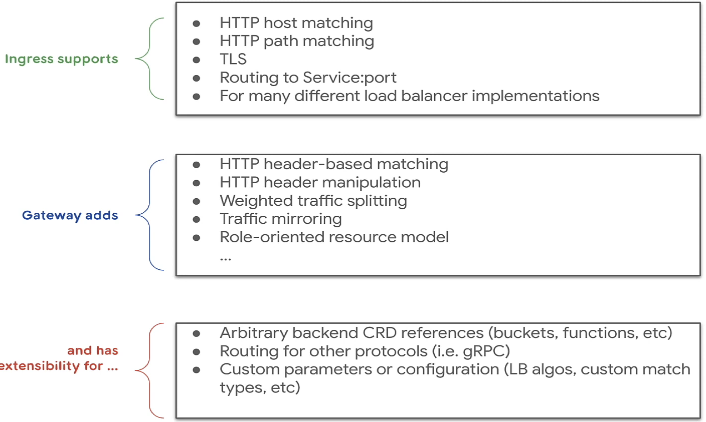
https://youtu.be/GiFQNevrxYA?t=172 - Gateway API is a family of API kinds that provide dynamic infrastructure provisioning and advanced traffic routing.
- Make network services available by using an extensible, role-oriented, protocol-aware configuration mechanism.
- Gateway API is an add-on containing API kinds that provide dynamic infrastructure provisioning and advanced traffic routing.
3.3.
구성 요소(Resource)GatewayClass,Gateway,HTTPRoute,TCPRoute,Service
https://kubernetes.io/docs/concepts/services-networking/gateway/ - GatewayClass: Defines a set of gateways with common configuration and managed by a controller that implements the class.
- Gateway: Defines an instance of traffic handling infrastructure, such as cloud load balancer.
- HTTPRoute: Defines HTTP-specific rules for mapping traffic from a Gateway listener to a representation of backend network endpoints. These endpoints are often represented as a Service.

https://gateway-api.sigs.k8s.io/ 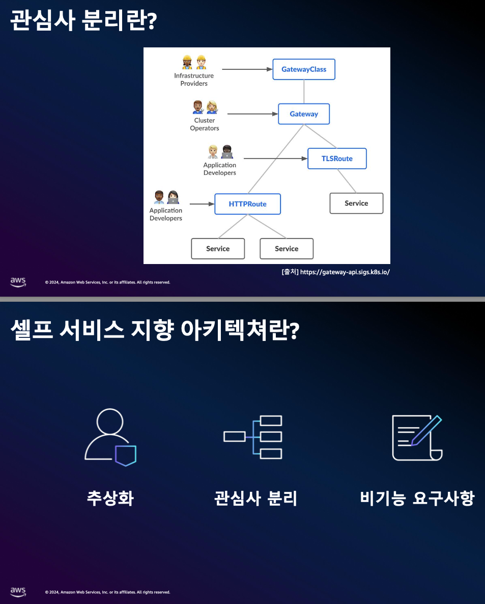
[AWS Seoul Summit 2024] Amazon EKS를 활용한 플랫폼 엔지니어링 적용하기 - Kubernetes Traffic Management: Combining Gateway API with Service Mesh for North-South and East-West Use Cases - Blog
- Request flow
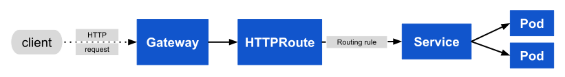
3.4. Why does a
role-oriented APImatter? - Blog1, Blog2- 담당 업무의 역할에 따라서 동작/권한을 유연하게 제공할 수 있음
- 아래 그림 처럼 '스토어 개발자'는 Store 네임스페이스내에서 해당 store PATH 라우팅 관련 정책을 스스로 관리 할 수 있음

https://gateway-api.sigs.k8s.io/ - Infrastructure Provider: Manages infrastructure that allows multiple isolated clusters to serve multiple tenants, e.g. a cloud provider.
- Cluster Operator: Manages clusters and is typically concerned with policies, network access, application permissions, etc.
- Application Developer: Manages an application running in a cluster and is typically concerned with application-level configuration and Service composition.
3.5. Cilium Gateway API Support 소개 및 설정 - Docs
- Ingress 제약 : 고급 라우팅 지원 부족(URL rewriting 등), TCP/UDP 등 프로토콜 지원 부족, 세부 권한 분리 부족
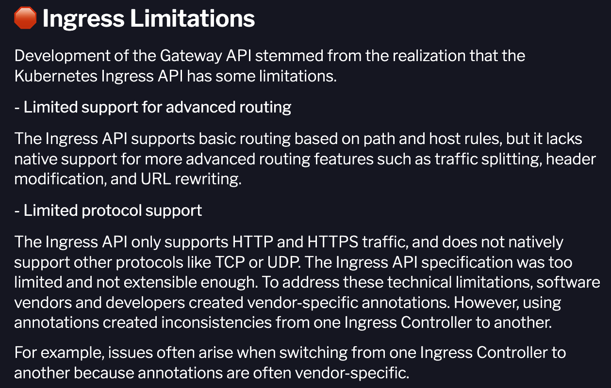
- Cilium supports Gateway API v1.2.0 for below resources, all the Core conformance tests are passed. → v1.3은 아직 일부 항목 만족 X https://gateway-api.sigs.k8s.io/implementations/v1.3/
- ReferenceGrant
- Additionally, Cilium provides
CiliumGatewayClassConfigCRD, which can be referenced in GatewayClass.parametersRef.
- Additionally, Cilium provides
- ReferenceGrant
- 사전준비
- Cilium must be configured with NodePort enabled, using
nodePort.enabled=trueor by enabling the kube-proxy replacement withkubeProxyReplacement=true. For more information, see kube-proxy replacement.
- Cilium must be configured with the L7 proxy enabled using
l7Proxy=true(enabled by default).
- The below CRDs from Gateway API v1.2.0
mustbe pre-installed. Please refer to this docs for installation steps. Alternatively, the below snippet could be used. → CRD 설치 필수!# CRD 설치 kubectl apply -f https://raw.githubusercontent.com/kubernetes-sigs/gateway-api/v1.2.0/config/crd/standard/gateway.networking.k8s.io_gatewayclasses.yaml kubectl apply -f https://raw.githubusercontent.com/kubernetes-sigs/gateway-api/v1.2.0/config/crd/standard/gateway.networking.k8s.io_gateways.yaml kubectl apply -f https://raw.githubusercontent.com/kubernetes-sigs/gateway-api/v1.2.0/config/crd/standard/gateway.networking.k8s.io_httproutes.yaml kubectl apply -f https://raw.githubusercontent.com/kubernetes-sigs/gateway-api/v1.2.0/config/crd/standard/gateway.networking.k8s.io_referencegrants.yaml kubectl apply -f https://raw.githubusercontent.com/kubernetes-sigs/gateway-api/v1.2.0/config/crd/standard/gateway.networking.k8s.io_grpcroutes.yaml kubectl apply -f https://raw.githubusercontent.com/kubernetes-sigs/gateway-api/v1.2.0/config/crd/experimental/gateway.networking.k8s.io_tlsroutes.yaml # 확인 kubectl get crd | grep gateway.networking.k8s.io gatewayclasses.gateway.networking.k8s.io 2025-08-23T08:25:31Z gateways.gateway.networking.k8s.io 2025-08-23T08:25:32Z grpcroutes.gateway.networking.k8s.io 2025-08-23T08:25:33Z httproutes.gateway.networking.k8s.io 2025-08-23T08:25:33Z referencegrants.gateway.networking.k8s.io 2025-08-23T08:25:33Z tlsroutes.gateway.networking.k8s.io 2025-08-23T08:25:34Z
- By default, the Gateway API controller creates a service of LoadBalancer type, so your environment will need to support this. Alternatively, since Cilium 1.16+, you can directly expose the Cilium L7 proxy on the host network.
- Cilium must be configured with NodePort enabled, using
- Cilium Gateway API 설정
# helm upgrade cilium cilium/cilium --version 1.18.1 --namespace kube-system --reuse-values \ --set ingressController.enabled=false --set gatewayAPI.enabled=true # kubectl -n kube-system rollout restart deployment/cilium-operator kubectl -n kube-system rollout restart ds/cilium # cilium config view | grep gateway-api enable-gateway-api true enable-gateway-api-alpn false enable-gateway-api-app-protocol false enable-gateway-api-proxy-protocol false enable-gateway-api-secrets-sync true gateway-api-hostnetwork-enabled false gateway-api-hostnetwork-nodelabelselector gateway-api-secrets-namespace cilium-secrets gateway-api-service-externaltrafficpolicy Cluster gateway-api-xff-num-trusted-hops 0 # cilium-ingress 제거 확인 kubectl get svc,pod -n kube-system # The GatewayClass is a type of Gateway that can be deployed: in other words, it is a template. This is done in a way to let infrastructure providers offer different types of Gateways. Users can then choose the Gateway they like. # For instance, an infrastructure provider may create two GatewayClasses named internet and private to reflect Gateways that define Internet-facing vs private, internal applications. # In our case, the Cilium Gateway API (io.cilium/gateway-controller) will be instantiated. # This schema below represents the various components used by Gateway APIs. When using Ingress, all the functionalities were defined in one API. By deconstructing the ingress routing requirements into multiple APIs, users benefit from a more generic, flexible and role-oriented model # The actual L7 traffic rules are defined in the HTTPRoute API. # In the next challenge, you will deploy an application and set up GatewayAPI HTTPRoutes to route HTTP traffic into the cluster. kubectl get GatewayClass NAME CONTROLLER ACCEPTED AGE cilium io.cilium/gateway-controller True 53s kubectl get gateway -A No resources found
- Underlying mechanics: a high level overview - Docs
- A Cilium deployment has two parts that handle Gateway API resources: the Cilium agent and the Cilium operator.
- The Cilium operator watches all Gateway API resources and verifies whether the resources are valid. If resources are valid, the operator marks them as accepted. That starts the process of translation into Cilium Envoy Configuration resources.
- The Cilium agent then picks up the Cilium Envoy Configuration resources.
- The Cilium agent uses the resources to supply the configuration to the built in Envoy or the Envoy DaemonSet. Envoy handles traffic.
- Ingress 제약 : 고급 라우팅 지원 부족(URL rewriting 등), TCP/UDP 등 프로토콜 지원 부족, 세부 권한 분리 부족
3.6. Deploy the Cilium Gateway
# cat << EOF | kubectl apply -f - apiVersion: gateway.networking.k8s.io/v1 kind: Gateway metadata: name: my-gateway spec: gatewayClassName: cilium listeners: - protocol: HTTP port: 80 name: web-gw allowedRoutes: namespaces: from: Same --- apiVersion: gateway.networking.k8s.io/v1 kind: HTTPRoute metadata: name: http-app-1 spec: parentRefs: - name: my-gateway namespace: default rules: - matches: - path: type: PathPrefix value: /details backendRefs: - name: details port: 9080 - matches: - headers: - type: Exact name: magic value: foo queryParams: - type: Exact name: great value: example path: type: PathPrefix value: / method: GET backendRefs: - name: productpage port: 9080 EOF # You will see a LoadBalancer service named cilium-gateway-my-gateway which was created for the Gateway API. kubectl get svc,ep cilium-gateway-my-gateway NAME TYPE CLUSTER-IP EXTERNAL-IP PORT(S) AGE service/cilium-gateway-my-gateway LoadBalancer 10.96.152.32 192.168.10.211 80:31443/TCP 3s NAME ENDPOINTS AGE endpoints/cilium-gateway-my-gateway 192.192.192.192:9999 3s # The same external IP address is also associated to the Gateway: kubectl get gateway NAME CLASS ADDRESS PROGRAMMED AGE my-gateway cilium 192.168.10.211 True 50s ## Accepted: the Gateway configuration was accepted. ## Programmed: the Gateway configuration was programmed into Envoy. ## ResolvedRefs: all referenced secrets were found and have permission for use. kc describe gateway ... Listeners: Attached Routes: 1 Conditions: Last Transition Time: 2025-08-23T08:40:09Z Message: Listener Programmed Observed Generation: 1 Reason: Programmed Status: True Type: Programmed Last Transition Time: 2025-08-23T08:40:09Z Message: Listener Accepted Observed Generation: 1 Reason: Accepted Status: True Type: Accepted Last Transition Time: 2025-08-23T08:40:09Z Message: Resolved Refs Reason: ResolvedRefs Status: True Type: ResolvedRefs Name: web-gw # kubectl get httproutes -A NAMESPACE NAME HOSTNAMES AGE default http-app-1 113s # Accepted: The HTTPRoute configuration was correct and accepted. # ResolvedRefs: The referenced services were found and are valid references. kc describe httproutes ... Status: Parents: Conditions: Last Transition Time: 2025-08-23T08:40:09Z Message: Accepted HTTPRoute Observed Generation: 1 Reason: Accepted Status: True Type: Accepted Last Transition Time: 2025-08-23T08:40:09Z Message: Service reference is valid Observed Generation: 1 Reason: ResolvedRefs Status: True Type: ResolvedRefs Controller Name: io.cilium/gateway-controller # Check Cilium Operator logs kubectl logs -n kube-system deployments/cilium-operator | grep gateway
3.7. Make Requests
- HTTP Path matching & HTTP Header Matching
# GATEWAY=$(kubectl get gateway my-gateway -o jsonpath='{.status.addresses[0].value}') echo $GATEWAY # HTTP Path matching # Let's now check that traffic based on the URL path is proxied by the Gateway API. # Check that you can make HTTP requests to that external address: # Because the path starts with /details, this traffic will match the first rule and will be proxied to the details Service over port 9080. curl --fail -s http://"$GATEWAY"/details/1 | jq sshpass -p 'vagrant' ssh vagrant@router "curl -s --fail -v http://"$GATEWAY"/details/1" # HTTP Header Matching # This time, we will route traffic based on HTTP parameters like header values, method and query parameters. Run the following command: curl -v -H 'magic: foo' http://"$GATEWAY"\?great\=example sshpass -p 'vagrant' ssh vagrant@router "curl -s -v -H 'magic: foo' http://"$GATEWAY"\?great\=example" # header가 매칭이 안되면 routing이 안된다. curl -v -H 'magic: boo' http://"$GATEWAY"\?great\=example * Trying 192.168.10.211:80... * Connected to 192.168.10.211 (192.168.10.211) port 80 > GET /?great=example HTTP/1.1 > Host: 192.168.10.211 > User-Agent: curl/8.5.0 > Accept: */* > magic: boo > < HTTP/1.1 404 Not Found < date: Sat, 23 Aug 2025 08:43:55 GMT < server: envoy < content-length: 0 < * Connection #0 to host 192.168.10.211 left intact
3.8. HTTPS Example - Docs
kubectl get secrets NAME TYPE DATA AGE demo-cert kubernetes.io/tls 2 40m # cat << EOF | kubectl apply -f - apiVersion: gateway.networking.k8s.io/v1 kind: Gateway metadata: name: tls-gateway spec: gatewayClassName: cilium listeners: - name: https-1 protocol: HTTPS port: 443 hostname: "bookinfo.cilium.rocks" tls: certificateRefs: - kind: Secret name: demo-cert - name: https-2 protocol: HTTPS port: 443 hostname: "webpod.cilium.rocks" tls: certificateRefs: - kind: Secret name: demo-cert --- apiVersion: gateway.networking.k8s.io/v1 kind: HTTPRoute metadata: name: https-app-route-1 spec: parentRefs: - name: tls-gateway hostnames: - "bookinfo.cilium.rocks" rules: - matches: - path: type: PathPrefix value: /details backendRefs: - name: details port: 9080 --- apiVersion: gateway.networking.k8s.io/v1 kind: HTTPRoute metadata: name: https-app-route-2 spec: parentRefs: - name: tls-gateway hostnames: - "webpod.cilium.rocks" rules: - matches: - path: type: PathPrefix value: / backendRefs: - name: webpod port: 80 EOF # kubectl get gateway tls-gateway NAME CLASS ADDRESS PROGRAMMED AGE tls-gateway cilium 192.168.10.213 True 26s kubectl get httproutes https-app-route-1 https-app-route-2 NAME HOSTNAMES AGE https-app-route-1 ["bookinfo.cilium.rocks"] 35s https-app-route-2 ["webpod.cilium.rocks"] 34s # GATEWAY2=$(kubectl get gateway tls-gateway -o jsonpath='{.status.addresses[0].value}') echo $GATEWAY2 curl -s --resolve bookinfo.cilium.rocks:443:${GATEWAY2} https://bookinfo.cilium.rocks/details/1 | jq curl -s --resolve webpod.cilium.rocks:443:${GATEWAY2} https://webpod.cilium.rocks/ -v ... * Server certificate: * subject: O=mkcert development certificate; OU=root@k8s-ctr * start date: Aug 23 08:03:49 2025 GMT * expire date: Nov 23 08:03:49 2027 GMT * subjectAltName: host "webpod.cilium.rocks" matched cert's "*.cilium.rocks" * issuer: O=mkcert development CA; OU=root@k8s-ctr; CN=mkcert root@k8s-ctr * SSL certificate verify ok. ... Hostname: webpod-697b545f57-qb749 IP: 127.0.0.1 IP: ::1 IP: 172.20.0.151 IP: fe80::844e:98ff:fefc:6e28 RemoteAddr: 10.0.2.15:49602 GET / HTTP/1.1 Host: webpod.cilium.rocks User-Agent: curl/8.5.0 Accept: */* X-Envoy-Internal: true X-Forwarded-For: 10.0.2.15 X-Forwarded-Proto: https X-Request-Id: 6f086064-b3bb-405c-9603-b9ba1a64c218
3.9. TLS Route : Terminate vs. Passthrough
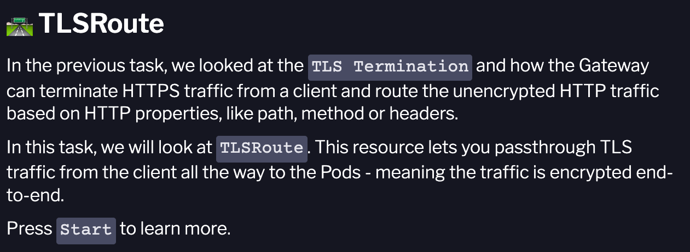
- In Terminate: Gateway에서 TLS offloading이 일어남
- Client → Gateway: HTTPS
- Gateway → Pod: HTTP
- In Passthrough: pod level에서도 인증서를 갖고 있어야함
- Client → Gateway: HTTPS
- Gateway → Pod: HTTPS
- Deploy Sample App
# Deploy the Demo app : HTTPS 웹서버 # We will be using a NGINX web server. Review the NGINX configuration. cat <<'EOF' > nginx.conf events { } http { log_format main '$remote_addr - $remote_user [$time_local] $status ' '"$request" $body_bytes_sent "$http_referer" ' '"$http_user_agent" "$http_x_forwarded_for"'; access_log /var/log/nginx/access.log main; error_log /var/log/nginx/error.log; server { listen 443 ssl; root /usr/share/nginx/html; index index.html; server_name nginx.cilium.rocks; ssl_certificate /etc/nginx-server-certs/tls.crt; ssl_certificate_key /etc/nginx-server-certs/tls.key; } } EOF # As you can see, it listens on port 443 for SSL traffic. Notice it specifies the certificate and key previously created. # We will need to mount the files to the right path (/etc/nginx-server-certs) when we deploy the server. # The NGINX server configuration is held in a Kubernetes ConfigMap. Let's create it. kubectl create configmap nginx-configmap --from-file=nginx.conf=./nginx.conf # Review the NGINX server Deployment and the Service fronting it: cat << EOF | kubectl apply -f - apiVersion: v1 kind: Service metadata: name: my-nginx labels: run: my-nginx spec: ports: - port: 443 protocol: TCP selector: run: my-nginx --- apiVersion: apps/v1 kind: Deployment metadata: name: my-nginx spec: selector: matchLabels: run: my-nginx replicas: 1 template: metadata: labels: run: my-nginx spec: containers: - name: my-nginx image: nginx ports: - containerPort: 443 volumeMounts: - name: nginx-config mountPath: /etc/nginx readOnly: true - name: nginx-server-certs mountPath: /etc/nginx-server-certs readOnly: true volumes: - name: nginx-config configMap: name: nginx-configmap - name: nginx-server-certs secret: secretName: demo-cert EOF # Verify the Service and Deployment have been deployed successfully: kubectl get deployment,svc,ep my-nginx NAME READY UP-TO-DATE AVAILABLE AGE deployment.apps/my-nginx 0/1 1 0 13s NAME TYPE CLUSTER-IP EXTERNAL-IP PORT(S) AGE service/my-nginx ClusterIP 10.96.146.102 <none> 443/TCP 13s NAME ENDPOINTS AGE endpoints/my-nginx <none> 13s
- Deploy the Gateway
# cat << EOF | kubectl apply -f - apiVersion: gateway.networking.k8s.io/v1 kind: Gateway metadata: name: cilium-tls-gateway spec: gatewayClassName: cilium listeners: - name: https hostname: "nginx.cilium.rocks" port: 443 protocol: TLS tls: mode: Passthrough allowedRoutes: namespaces: from: All --- apiVersion: gateway.networking.k8s.io/v1alpha2 kind: TLSRoute metadata: name: nginx spec: parentRefs: - name: cilium-tls-gateway hostnames: - "nginx.cilium.rocks" rules: - backendRefs: - name: my-nginx port: 443 EOF # The Gateway does not actually inspect the traffic aside from using the SNI header for routing. Indeed the hostnames field defines a set of SNI names that should match against the SNI attribute of TLS ClientHello message in TLS handshake. # Let's now deploy the Gateway and the TLSRoute to the cluste kubectl get gateway cilium-tls-gateway NAME CLASS ADDRESS PROGRAMMED AGE cilium-tls-gateway cilium 192.168.10.214 True 4s GATEWAY=$(kubectl get gateway cilium-tls-gateway -o jsonpath='{.status.addresses[0].value}') echo $GATEWAY # Let's also double check the TLSRoute has been provisioned successfully and has been attached to the Gateway. kubectl get tlsroutes.gateway.networking.k8s.io -o json | jq '.items[0].status.parents[0]' ... { "conditions": [ { "lastTransitionTime": "2025-08-23T08:53:53Z", "message": "Accepted TLSRoute", "observedGeneration": 1, "reason": "Accepted", "status": "True", "type": "Accepted" }, { "lastTransitionTime": "2025-08-23T08:53:53Z", "message": "Service reference is valid", "observedGeneration": 1, "reason": "ResolvedRefs", "status": "True", "type": "ResolvedRefs" } ], "controllerName": "io.cilium/gateway-controller", "parentRef": { "group": "gateway.networking.k8s.io", "kind": "Gateway", "name": "cilium-tls-gateway" } }
- Make TLS requests
# The data should be properly retrieved, using HTTPS (and thus, the TLS handshake was properly achieved). # There are several things to note in the output. ## It should be successful (you should see at the end, a HTML output with Cilium rocks.). ## The connection was established over port 443 - you should see Connected to nginx.cilium.rocks (172.18.255.200) port 443 . ## You should see TLS handshake and TLS version negotiation. Expect the negotiations to have resulted in TLSv1.3 being used. ## Expect to see a successful certificate verification (look out for SSL certificate verify ok). curl -v --resolve "nginx.cilium.rocks:443:$GATEWAY" "https://nginx.cilium.rocks:443" # (추가) nginx 파드 내에서 tcpudmp 나 access log 확인해보기! # access_log에서 보이는 ip는 앞서 "ingress 에 예약된 내부 IP 확인 : node(cilium-envoy) 별도로 존재"와 같이 cilium-envoy에 의해 reserved된 내부 IP이다. kubectl logs my-nginx-d65548cd4-zgqhw -f ... 172.20.0.217 - - [23/Aug/2025:08:55:03 +0000] 200 "GET / HTTP/1.1" 615 "-" "curl/8.5.0" "-" 172.20.0.217 - - [23/Aug/2025:08:56:58 +0000] 200 "GET / HTTP/1.1" 615 "-" "curl/8.5.0" "-" ## 여기서 알 수 있는것은 Gateway를 통해서 L7 level의 HTTPRoute와 TLSRoute도 cilium-envoy를 통해서 통신된다는것! kubectl exec -it -n kube-system ds/cilium -- cilium ip list | grep ingress 172.20.0.217/32 reserved:ingress 172.20.1.65/32 reserved:ingress ## k8s-w1에서 수행(my-nginx pod가 존재하는 노드에서 수행!) PODIP=172.20.1.150 ip route |grep $PODIP 172.20.1.150 dev lxc8084652186c3 proto kernel scope link PROVETH=lxc8084652186c3 # "Cilium IP → reserved:ingress identity"로 egress 트래픽이 이동하는 경우는 사실상 cilium-envoy pod(혹은 데몬셋 포트)로 트래픽을 프록시 라우팅하는 과정 # 이때 Gateway에 PassThrough가 설정되어있고 TLSRoute를 이용하므로 443 port로 통신!! ngrep -tW byline -d $PROVETH 'tcp port 443' ... interface: lxc8084652186c3 filter: ((ip || ip6) || (vlan && (ip || ip6))) ### T 2025/08/23 18:43:45.385959 172.20.1.150:443 -> 172.20.0.217:43995 [AP] #3 ....z...v....U{..+......F.....>].[.....c.yd 2k.e.j5.R (..ko.kBR..~.w.X...........- Cilium에서 Ingress 및 Gateway API로 유입되는 트래픽은 L7 정책과 로드밸런싱 처리를 위하여 각 노드별로 구동 중인 Envoy 프록시 인스턴스로 전달됩니다.
- 이 때 외부 또는 내부에서 들어오는 트래픽, 그리고 Cluster 내부에서 받은 트래픽이 reserved:ingress identity(Cilium 내부 논리적 ID)로 식별된 특별한 Cilium IP(예: 10.x.x.x 등 Pod ip range에서 할당됨!!)에서 오는 것처럼 보일 수 있습니다.
- 위의 my-nginx의 경우에서 볼 수 있듯이 ingress, egress traffic 모두 reserved:ingress identity의 cilium 내부 ip를 통해서 통신된것을 볼 수 있다.
- *Egress (나가는 트래픽)**에도 마찬가지로, Pod에서 외부 혹은 다른 서비스로 나가는 트래픽이 Gateway나 Ingress 정책에 의해 Cilium Envoy로 먼저 전송되고, 여기서 L7 라우팅이나 정책이 적용된 뒤 외부/대상으로 proxy 처리되어 나가게 됩니다.
즉,
- Pod에서 egress 트래픽이 reserved:ingress identity의 Cilium IP로 전송되는 것은,
실제로 해당 트래픽이 Cilium이 관리하는 Envoy(Proxy)로 내부적으로 먼저 이동한다는 뜻입니다.
- Envoy에서 서비스 라우팅, mTLS, 정책 처리 등을 마친 후 최종 목적지나 외부로 트래픽이 나가게 됩니다.
이 구조 덕분에, Cilium은 Ingress/Gateway API 환경에서 L7, 정책 심화, 보안(mTLS 등)을 모두 프록시 계층에서 강력하게 제어하고 관찰할 수 있습니다.
- In Terminate: Gateway에서 TLS offloading이 일어남
3.10. Gateway API Address Support : GW EX-IP 직접 지정 - Docs
- k9s → 아무 gateway Edit
# edit를 통해서는 수정이 안됨 spec: addresses: - type: IPAddress value: 192.168.10.215 gatewayClassName: cilium ... # 아래와 같이 apply를 통해서 수정 cat << EOF | kubectl apply -f - apiVersion: gateway.networking.k8s.io/v1 kind: Gateway metadata: name: cilium-tls-gateway spec: gatewayClassName: cilium addresses: - type: IPAddress value: 192.168.10.215 listeners: - name: https hostname: "nginx.cilium.rocks" port: 443 protocol: TLS tls: mode: Passthrough allowedRoutes: namespaces: from: All EOF
- 호출 테스트!
# GATEWAY=$(kubectl get gateway cilium-tls-gateway -o jsonpath='{.status.addresses[0].value}') echo $GATEWAY curl -v --resolve "nginx.cilium.rocks:443:$GATEWAY" "https://nginx.cilium.rocks:443" ... * Server certificate: * subject: O=mkcert development certificate; OU=root@k8s-ctr * start date: Aug 23 08:03:49 2025 GMT * expire date: Nov 23 08:03:49 2027 GMT * subjectAltName: host "nginx.cilium.rocks" matched cert's "*.cilium.rocks" * issuer: O=mkcert development CA; OU=root@k8s-ctr; CN=mkcert root@k8s-ctr * SSL certificate verify ok. ... > Host: nginx.cilium.rocks > User-Agent: curl/8.5.0 > Accept: */* > * TLSv1.3 (IN), TLS handshake, Newsession Ticket (4): * TLSv1.3 (IN), TLS handshake, Newsession Ticket (4): * old SSL session ID is stale, removing < HTTP/1.1 200 OK
- k9s → 아무 gateway Edit
3.11. Migrating from Ingress to Gateway : 기존 Ingress 를 → Gateway API로 마이그레이션 - Docs
- manual: manually creating Gateway API resources based on existing Ingress API resources.
- automated: creating rules using the ingress2gateway tool. The ingress2gateway project reads Ingress resources from a Kubernetes cluster based on your current Kube Config. It outputs YAML for equivalent Gateway API resources to stdout.
- The
ingress2gatewaytool remains experimental and is not recommended for production. - Github
- The
도전과제2-1Ingress gRPC Example: arm64 CPU 미지원 - Docs
도전과제2-2Traffic Splitting Example :backendRefs.weight:90- Docs
도전과제2-3HTTP Header Modifier Examples :filters.type.RequestHeaderModifier- Docs
도전과제2-4GatewayClass Parameters Support - Docs
도전과제2-5GAMMA Support : 실습은 별도 없어서, 직접 실습 내용은 검색 후 해보기 - Docs
도전과제2-7Migrating from Ingress to Gateway : 기존 Ingress 를 → Gateway API로 마이그레이션 - Docs- HTTP Migration Example - Docs
- TLS Migration - Docs
- Gateway 삭제
kubectl delete gateway my-gateway tls-gateway cilium-tls-gateway
- Bookinfo 삭제
kubectl delete -f https://raw.githubusercontent.com/istio/istio/release-1.26/samples/bookinfo/platform/kube/bookinfo.yaml
{kind=link}
{kind=link}
{kind=link}
{kind=link}
{kind=link}
{kind=link}
- Mutual Authentication (Beta)🗣️
발음 정정합니다. 멤버분이 알려주셨네요. 감사합니다! 🙂
SPIFFE : '스피프'라고 발음하는 것이 일반적입니다.
- SPIFFE(Secure Production Identity Framework for Everyone)는 원래 SPIF라는 용어에서 유래했으며, '스피프'라는 발음이 널리 통용되고 있습니다. 'S.P.I.F.F.E.'처럼 한 글자씩 끊어 읽기보다는, 하나의 단어처럼 발음합니다.
SPIRE : '스파이어'라고 발음합니다.
- SPIRE(SPIFFE Runtime Environment)는 영어 단어 'spire'(첨탑)와 발음이 동일하며, '스파이어'가 표준적인 발음입니다.- 4.1. Istio에서의 MTLS
4.1.1 모놀리스와 마이크로서비스의 보안 비교 Comparison of security in monoliths and microservices
- 마이크로서비스와 모놀리스 모두 최종 사용자 및 서비스 간 인증과 인가를 구현해야 한다.
- 그러나 마이크로서비스에는 보호해야 하는, 네트워크를 오가는 커넥션과 요청이 훨씬 더 많다.
- 반면 모놀리스는 커넥션이 더 적고, 보통은 가상머신 혹은 물리 머신 같은 더 정적인 인프라에서 실행된다.
- 정적인 인프라에서 실행하면 (고정) IP 주소를 ID 확인 근거로 심기 좋으며, 덕분에 인증용 인증서에서 흔하게 사용한다. (네트워크 방화벽 규칙에도 사용한다)
- 그림 9.1은 IP를 신뢰의 근거로 삼기 좋은 정적 인프라를 보여준다.
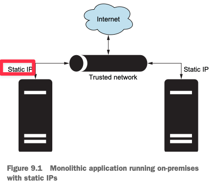
고정IP로 온프레미스에서 실행되는 모놀리스 애플리케이션
- 반면에 마이크로서비스는 쉽게 수백, 수천 개의 서비스로 불어나므로 정적 환경에서는 서비스를 운영할 수 없다.
- 이런 이유로 클라우드 컴퓨팅이나 컨테이너 오케스트레이션 같은 동적 환경을 활용하는데, 여기서 서비스는 수많은 서버로 스케줄링되고 수명이 짧다.
- 따라서 IP 주소를 사용하는 것 같은 전통적인 방법들은 ID의 근거로 미덥지 못하게 된다.
- 설상가상으로 서비스가 반드시 같은 네트워크에서 실행되는 것도 아니며, 여러 클라우드 프로바이더에 걸쳐 있거나 심지어는 그림 9.2처럼 온프레미스에서도 실행 될 수 있다.
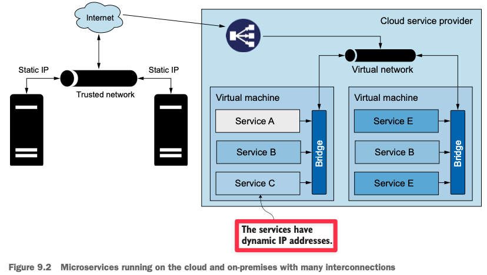
클라우드와 온프레미스에서 실행되는 상호 연결이 많은 마이크로서비스
- 이런 문제를 해결해 고도로 동적이고 이질적인 환경에서 ID를 제공하고자 이스티오는 SPIFFE specification 사양을 사용한다.
- SPIFFE는 고도로 동적이고 이질적인 환경에서 워크로드에 ID를 제공하기 위한 일렬의 오픈소스 표준이다.
- SPIFFE 처리에 대한 더 자세한 내용과 함께 이 SPIFFE가 이스티오의 ID 추정을 뒷받침하는 방법을 보려면 부록 C를 참조하자.
4.1.2. 이스티오가 SPIFFE를 구현하는 방법 How Istio implements SPIFFE - SVID
- SPIFFE ID는 RFC 3986 호환 URI로,
spiffe://trust-domain/path형식으로 구성된다.
- 여기서는 다음과 같다.
- trust-domain 은 개인 또는 조직 같은 ID 발급자를 나타낸다.
- path는 trust-domain 내에서 워크로드를 유일하게 식별한다.
- path가 워크로드를 식별하는 자세한 방법은 정해져 있지 않아서 SPIFFE 명세 구현자가 결정할 수 있다.
- 이스티오에서는 이 path를 특정 워크로드가 사용하는 서비스 어카운트로 채운다.
- SPIFFE ID는 SVID (Spiffe Verifiable Identity Document, SPIFFE 검증할 수 있는 ID 문서) 라고도 하는 X.509 인증서로 인코딩되며, 이는 이스티오의 컨트롤 플레인이 워크로드마다 만들어낸다.
- 그런 다음, 이 인증서는 전송 데이터를 암호화함으로써 서비스 간 통신의 전송을 보호하는데 사용된다.
- 다시 말하지만, 부록 C에서 이 모든 작업이 어떻게 작동하는지를 휠씬 자세히 다룬다.
- 이번 장에서는 이스티오의 기능으로 보안 태세를 개선하는 데 초점을 맞춘다.
- SPIFFE ID는 RFC 3986 호환 URI로,
4.1.3. 들어가며 : 인증서 발급/갱신 자동화, 추가 작업(인증, 인가)
- 사이트가 프록시가 주입된 서비스 사이의 트래픽은 기본적으로 암호화되고 서로 인증한다.
- 인증서를 발급하고 로테이션하는 절차를 자동화하는 것은 매우 중요한데, 역사적으로 사람이 관리할 때 오류가 발생하기 쉬웠기 때문이다.
- 이로 인해 불필요하고 비용이 많이 드는 서비스 중단이 발생했는데, 이스티오에서 구현한 것처럼 절차를 자동화했다면 피할 수 있었을 문제였다.
- 그림 9.4는 컨트롤 플레인에서 발급한 인증서를 사용해 서비스들이 서로 인증하고 트래픽을 암호화하는 방식을 나타낸다.
- 이 방식을 통해 기본적으로 안전한 상태를 유지한다.
- 사실 ‘기본적으로 안전한’이라고 하면 기본적으로는 대부분 안전하다는 의미로, 메시를 더 안전하게 만들기 위해서는 아직 우리가 수행해야 할 작업들이 남아 있다.
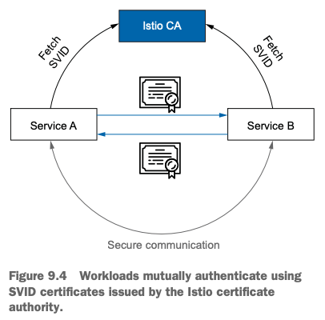
- 워크로드는 이스티오 인증 기관에서 발급한 SVID 인증서를 사용해 서로 인증한다.
- 먼저, 서비스 메시가 서로 인증한 트래픽만 허용하도록 설정해야 한다.
- 왜 이것이 설치할 때 기본값이 아닌지 궁금할 수 있다. 이는 메시 채택을 용이하게 하려는 설계 결정이다.
- 여러 팀이 자체 서비스를 관리하는 거대 엔터프라이즈에서는 모든 서비스를 메시로 옮기기까지 몇 달 혹은 몇 년에 걸치 조직적인 노력이 필요할 수 있다.
- 두 번째로, 서비스를 인증하면 최소 권한 원칙을 준수할 수 있고, 각 서비스에 정책을 만들 수 있으며, 기능에 필요한 최소한의 접근만 허용할 수 있다.
- 이는 아주 중요한데, 서비스의 ID를 나타내는 인증서가 잘못된 사람에게 넘어갔을 때 피해 범위를 ID가 접근할 수 있도록 허용된 일부 서비스만으로 좁힐 수 있기 때문이다.
4.1.4. (기본 정보) TLS vs mTLS
TLS- 암호화방식 인증서 Handshake- TLS는 네트워크로 통신을 하는 과정에서 도청, 간섭, 위조를 방지하기 위해서 설계됨. 암호화를 통해 인증, 통신 기밀성을 제공.
- TLS의 3단계 기본 절차: (1) 지원 가능한 알고리즘 서로 교환 (2) 키 교환, 인증 (3) 대칭키 암호로 암호화하고 메시지 인증
TLSvsMTLS- 링크 소개- MTLS 절차 : 서버측도 클라이언트측에 대한 인증서를 확인 및 액세스 권한 확인

https://blog.cloudflare.com/protecting-the-origin-with-tls-authenticated-origin-pulls/
4.1.5. PKI를 사용한 인증 Authentication using PKI (public key infrastructure)
- 들어가며
- World Wide Web에서 통신 당사자는 PKI Public Key Infrastructure (공개 키 인프라) 규격을 따라 발급한 디지털 서명 인증서를 사용해 인증한다.
- PKI는 절차를 정의하는 프레임워크인데, 이 절차는 서버(웹 앱 등)에는 자신의 정체를 증명할 수 있는 디지털 인증서를 제공하고 클라이언트에는 디지털 인증서의 유효성을 검증할 수 있는 수단을 제공한다. https://www.securew2.com/blog/public-key-infrastructure-explained
- PKI에서 제공하는 인증서에는 공개 키와 개인 키가 있다. 클라이언트에게 인증서를 인증 수단으로 제시하는데, 공개 키는 이 인증서 안에 포함된다.
- 클라이언트는 공개된 네트워크에서 서버로 데이터를 전송하기 전에 공개 키를 사용해 데이터를 암호화하며, 개인 키를 가진 서버만이 데이터를 복호화할 수 있다.
- 이런 방식으로 데이터는 전송 중에 안전하게 보호된다.👉🏻
공개 키 인증서의 표준 형식을 X.509 인증서라고 한다.
이 책에서는 X.509 인증서라는 용어와 디지털 인증서라는 용어를 같은 뜻으로 사용한다.
- 국제 인터넷 표준화 기구 IETF는 전송 계층 보안 TLS Transport Layer Security 프로토콜(PKI를 사용하기는 하지만 PKI만 사용해야 하는 것은 아님)을 정의하고, X.509 인증서를 공급해 트래픽 인증 및 암호화를 용의하게 했다.
C.1.1 TLS 및 최종 사용자 인증을 통한 트래픽 암호화 Traffic encryption via TLS and end-user authentication
- TLS 프로토콜은 TLS 핸드셰이크 절차에서 서버의 유효성을 인증하고 트래픽 대칭 키 암호화용 키를 안전하게 교환하는 데 X.509 인증서를 기본 메커니즘으로 사용한다. (그림 C.1 참조)
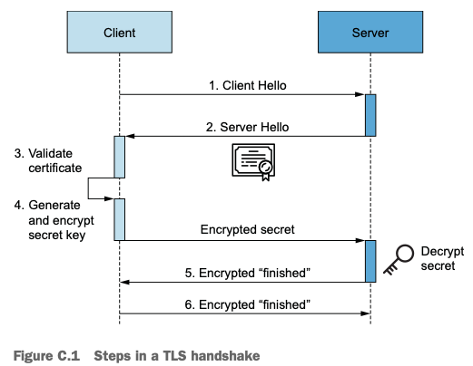
TLS 핸드셰이크 단계 - 클라이언트가 자신이 지원하는 TLS 버전과 암호화 수단을 포함한
ClientHello로 핸드셰이크를 시작한다.
- 서버는
ServerHello와 자신의 X.509 인증서로 응답한다. 인증서에는 서버의 ID 정보와 공개 키가 포함돼 있다.
- 클라이언트는 서버의 인증서 데이터가 변조되지 않았음을 확인하고 신뢰 체인을 검증한다.
- 검증에 성공하면, 클라이언트는 서버에 비밀 키를 보낸다. 이 키는 임의로 생성한 문자열을 서버의 공개 키로 암호화한 것이다.
- 서버는 자신의 개인 키로 비밀 키를 복호화하고, 복호화된 비밀 키로 ‘finished’ 메시지를 암호화해 클라이언트로 보낸다.
- 클라이언트도 비밀 키로 암호화한 ‘finished’ 메시지를 서버에 보내면 TLS 핸드셰이크가 완료된다.
- 클라이언트가 자신이 지원하는 TLS 버전과 암호화 수단을 포함한
- TLS 핸드셰이크의 결실은 클라이언트가 서버를 인증했고 대칭 키를 안전하게 교환했다는 것이다.
- 이 대칭 키는 이 커넥션에서 클라이언트와 서버를 오가는 트래픽을 암호화하는데 사용한다.
- 이런 방식이 비대칭 암호화보다 성능이 더 좋기 때문이다.
- 최종 사용자에게 이런 절차는 브라우저가 투명하게 수행하는 것으로, 주소 표시줄에 녹색 자물쇠로 표시돼 수신자가 인증됐고 트래픽이 암호화돼 수신자만 복호화할 수 있다는 것을 확인해준다.
- 서버에서 최종 사용자를 인증하는 것은 구현하기 나름이다.
- 여러 가지 방법이 있지만, 그 모든 방법의 핵심은 비밀번호를 알고 있는 사용자가 세션 쿠키나 JWT(JSON Web Token)를 받는 것이다.
- 이때 JWT는 수명이 짧고 사용자의 후속 요청을 서버에 인증하기 위한 정보를 포함하는 것이 이상적이다.
- 이스티오는 JWT를 사용하는 최종 사용자 인증을 지원한다.
- 실제로 동작하는 모습은 9.4절에서 살펴봤다.
- 들어가며
4.1.6. SPIFFE: 모든 이를 위한 안전한 운영 환경 ID 프레임워크 Secure Production Identity Framework for Everyone (실습)
들어가며
- SPIFFE는 고도로 동적이며 이질적인 환경에서 워크로드에 ID를 제공하기 위한 오픈소스 표준 집합이다.
- ID를 발급하고 부트스트랩하기 위해 SPIFFE는 다음 사양을 정의한다.
- SPIFFE ID : 신뢰 도메인 내에서 서비스를 고유하게 구별한다.
- Workload Endpoint : 워크로드의 ID를 부트스트랩한다.
- Workload API : SPIFFE ID가 포함된 인증서를 서명하고 발급한다.
- SVID SPIFFE Verifiable Identity Document : 워크로드 API가 발급한 인증서로 표현된다.
- SPIFFE 사양은 SPIFFE ID 형식으로 워크로드에 ID를 발급하고 이를 SVID에 인코딩하는 절차를 정의할 뿐 아니라, 컨트롤 플레인 구성 요소(워크로드 API)와 데이터 플레인 구성 요소(워크로드 엔드포인트)가 워크로드의 ID를 검증하고 할당하고 형식의 유효성을 검사하기 위해 협동하는 방법도 정의한다.
- 이스티오가 이런 사양을 구현하므로 이에 대한 더 깊은 이해가 필요하다.
C.2.1 SPIFFE ID: Workload identity 워크로드 ID
- SPIFFE ID는 RFC 3986 호환 URI로,
spiffe://trust-domain/path형식을 따른다.- trust-domain 은 개인이나 조직 같은 ID 발급자를 나타낸다.
- path는 trust-domain 내에서 워크로드를 고유하게 식별한다.
- 경로 path로 워크로드를 식별하는 방법의 세부 사항에는 제약이 없으며 SPIFFE 사양 구현자가 결정할 수 있다.
- 이 부록에서는 이스티오가 쿠버네티스 서비스 어카운트를 사용해 워크로드를 식별하는 경로를 정의하는 방법을 살펴본다.
- SPIFFE ID는 RFC 3986 호환 URI로,
C.2.2 Workload API 워크로드 API
- 워크로드 API는 SPIFFE 사양에서 컨트롤 플레인 구성 요소를 나타내며, 워크로드가 자신의 ID를 정의하는 SVID 형식 디지털 인증서를 가져갈 수 있도록 엔드포인트를 노출한다.
- 워크로드 API는 두 가지 주요 기능은 다음과 같다.
- 워크로드가 제출한 인증서 서명 요청 CSR에 인증 기관 CA 개인 키로 서명함으로써 워크로드에 인증서 발급
- 워크로드 엔드포인트에서 해당 기능을 사용할 수 있도록 API 노출
- 사양 specification sets 은 워크로드가 자신의 ID를 정의하는 비밀이나 기타 정보를 보유해서는 안 된다는 제한(규칙)을 둔다.
- 그렇지 않으면, 해당 비밀에 접근할 수 있는 악의적인 사용자가 시스템을 쉽게 악용할 수 있기 때문이다.
- 이 제한 때문에 워크로드에는 인증 수단이 없어 워크로드 API로 보안 통신을 시작할 수 없다.
- 이 상황을 해결하기 위해 SPIFFE는 워크로드 엔드포인트 사양을 정의한다.
- 이 사양은 데이터 플레인 구성 요소를 나타내고, 워크로드의 ID를 부트스트랩하는 데 필요한 모든 작업을 수행한다.
- 예를 들어, 워크로드 API와 보안 통신을 시작하거나 도청 또는 중간자 공격에 취약하지 않게 SVID를 가져오는 등의 활동을 수행한다.
C.2.3 Workload endpoints 워크로드 엔드포인트
- 워크로드 엔드포인트는 SPIFFE 사양의 데이터 플레인 구성 요소를 나타낸다. 이는 모든 워크로드와 함께 배포돼 다음 기능을 제공한다.
- 워크로드 증명 attestation
- 커널 검사 kernel introspection 또는 orchestrator interrogation (쿼리, 질문) 같은 방법을 사용해 워크로드의 ID를 확인한다.
- 워크로드 API 노출 exposure
- 워크로드 API와 보안 통신을 시작하고 유지한다. 이 보안 통신은 SVID를 가져오고 로테이션하는 데 사용한다.
- 워크로드 증명 attestation
- 그림 C.2는 워크로드에 ID를 발급하는 단계의 개요를 보여준다.
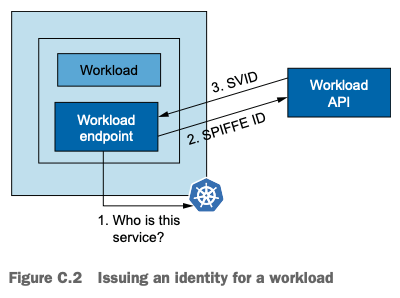
워크로드에 ID를 발급하기 - 워크로드 엔드포인트는 워크로드의 무결성을 확인하고(즉, 워크로드 증명을 수행하고) SPIFFIE ID가 인코딩된 CSR을 생성한다.
- 워크로드 엔드포인트는 서명을 위해 워크로드 API에 CSR을 제출한다.
- 워크로드 API는 CSR을 서명하고 디지털 서명된 인증서로 응답한다.
- 이 인증서의 SAN의 URI 확장에는 SPIFFE ID가 있다.
- 이 인증서는 워크로드 ID를 나타내는 SVID이다.
- 워크로드 엔드포인트는 SPIFFE 사양의 데이터 플레인 구성 요소를 나타낸다. 이는 모든 워크로드와 함께 배포돼 다음 기능을 제공한다.
C.2.4 SPIFFE Verifiable Identity Documents 검증할 수 있는 ID 문서
- SVID (SPIFFE 검증할 수 있는 ID 문서) 는 워크로드의 정체를 나타내는 검증할 수 있는 문서다.
- 검증할 수 있다는 것이 가장 중요한 속성인데, 그렇지 않으면 수신자가 워크로드의 정체를 신뢰할 수 없기 때문이다.
- 사양은 SVID 표현 기준을 충족하는 문서로 두 가지 유형인 X.509 인증서와 JWT를 정의한다.
- 둘 다 다음과 같은 요소로 구성된다.
- SPIFFE ID, 워크로드 ID를 나타낸다.
- 유효한 서명, SPIFFE ID가 변조되지 않았음을 확인한다.
- (선택 사항) 워크로드 간에 보안 통신 채널을 구축하기 위한 공개 키
- 이스티오는 SVID를 X.509 인증서로 구현한다.
- 그 방법은 SAN Subject Alternative Name 확장에 SPIFFE ID를 URI로 인코딩하는 것이다.
- X.509 인증서를 사용하면 추가적인 이점이 있는데, 워크로드가 서로 간의 트래픽을 상호 인증하고 암호화할 수 있다는 것이다. (그림 C.3 참조)
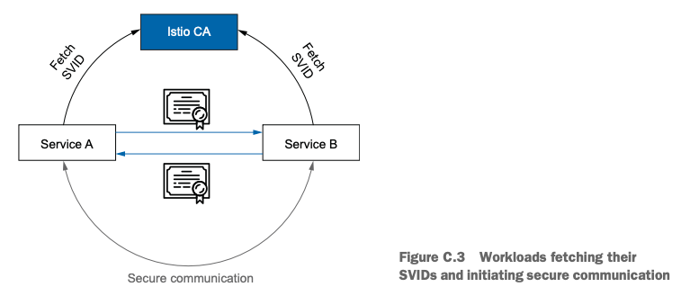
자신의 SVID를 가져오고 보안 통신을 시작하는 워크로드
- 이스티오가 SPIFFE 사양을 구현함으로써, 모든 워크로드가 각자의 ID를 공급받고 그 ID를 증거로 인증서를 받는다는 것이 자동으로 보장된다.
- 이런 인증서는 상호 인증과 모든 서비스 간 통신을 암호화하는 데 사용한다.
- 그러므로 이 기능을 자동 상호 TLS라고 한다. Hence this feature is called auto mTLS.
C.2.5 How Istio implements SPIFFE 이스티오가 SPIFFE를 구현하는 방법
- 이스티오를 사용하면 다음 두 구성 요소가 협업해 워크로드에 ID를 제공한다.
- ID를 부트스트랩하는 워크로드 엔드포인트 (데이터플레인, 이스티오 프록시 pilot agent)
- 인증서를 발급하는 워크로드 API (컨트롤플레인, istiod 의 Istio CA)
- 이스티오에서 워크로드 엔드포인트 사양은 워크로드와 함께 배포되는 이스티오 프록시가 구현한다.
- 이스티오 프록시는 ID를 부트스트랩하고 이스티오 CA에서 인증서를 가져오는데, 이스티오 CA는 istiod의 구성 요소로 워크로드 API 사양을 구현한다.
- 그림 C.4는 이스티오가 SPIFFE 구성 요소를 구현하는 방법을 보여준다.
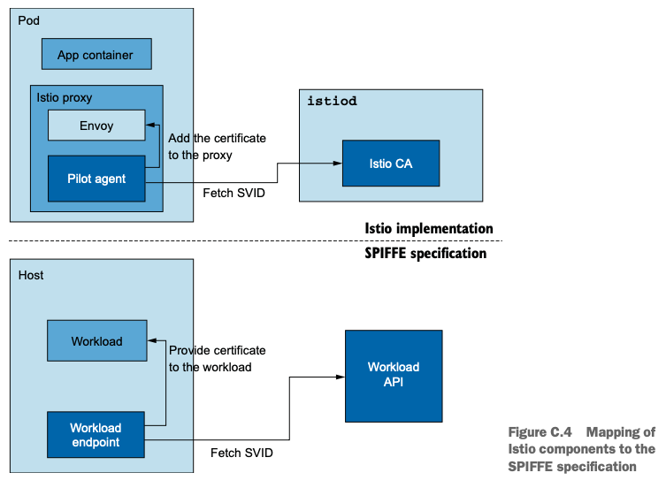
이스티오 구성 요소를 SPIFFE 사양에 매핑하기 - 워크로드 엔드포인트는 ID 부트스트랩을 수행하는 이스티오 파일럿 에이전트로 구현한다.
- 워크로드 API는 인증서를 발급하는 이스티오 CA로 구현한다.
- 이스티오에서 ID를 발급하는 워크로드는 서비스 프록시다.
- 이는 이스티오가 SPIFFE를 구현하는 방법을 고수준에서 살펴본 것이다.
- 해당 내용을 이해하고 기억하기 위해 이 과정을 단계별로 살펴보자.
- 이스티오를 사용하면 다음 두 구성 요소가 협업해 워크로드에 ID를 제공한다.
C.2.6 Step-by-step bootstrapping of workload identity* 워크로드 ID의 단계별 부트스트랩
- 기본적으로 쿠버네티스에서 초기화된 모든 파드에는
/var/run/secrets/kubernetes.io/serviceaccount/경로에 시크릿이 마운트돼 있다.
- 이 시크릿에는 쿠버네티스 API 서버와 안전하게 통신하는 데 필요한 모든 데이터가 포함돼 있다.
- ca.crt 는 쿠버네티스 API 서버가 발급한 인증서의 유효성을 검증한다.
- 네임스페이스는 파드가 위치한 곳을 나타낸다.
- 서비스 어카운트 토큰에는 파드를 나타내는 서비스 어카운트에 대한 (토큰)클레임들이 포함된다.
- The service account token contains a set of claims for the service account representing the Pod.
- ID 부트스트랩 과정에서 가장 중요한 요소는 쿠버네티스 API가 발급한 토큰이다.
- 토큰의 페이로드는 수정할 수 없는데, 수정하면 서명 유효성 검사를 통과하지 못하기 때문이다.
- 페이로드에는 애플리케이션을 식별하는 데이터가 포함된다.
# kubectl exec -it -n istioinaction deploy/webapp -c istio-proxy -- ls -l /var/run/secrets/kubernetes.io/serviceaccount/ kubectl exec -it -n istioinaction deploy/webapp -c istio-proxy -- cat /var/run/secrets/kubernetes.io/serviceaccount/token TOKEN=$(kubectl exec -it -n istioinaction deploy/webapp -c istio-proxy -- cat /var/run/secrets/kubernetes.io/serviceaccount/token) # 헤더 디코딩 echo $TOKEN | cut -d '.' -f1 | base64 --decode | sed 's/$/}/' | jq { "alg": "RS256", "kid": "nKgUYnbjH9BmgEXYbu56GFoBxwDF_jF9Q6obIWvinAM" } # 페이로드 디코딩 echo $TOKEN | cut -d '.' -f2 | base64 --decode | sed 's/$/}/' | jq { "aud": [ "https://kubernetes.default.svc.cluster.local" ], "exp": 1777689454, "iat": 1746153454, "iss": "https://kubernetes.default.svc.cluster.local", "kubernetes.io": { "namespace": "istioinaction", "pod": { "name": "webapp-7685bcb84-hp2kl", "uid": "98444761-1f47-45ad-b739-da1b7b22013a" }, "serviceaccount": { "name": "webapp", "uid": "5a27b23e-9ed6-46f7-bde0-a4e4684949c2" }, "warnafter": 1746157061 }, "nbf": 1746153454, "sub": "system:serviceaccount:istioinaction:webapp" } # (옵션) brew install jwt-cli # Linux 툴 추천 부탁드립니다. jwt decode $TOKEN Token header ------------ { "alg": "RS256", "kid": "nKgUYnbjH9BmgEXYbu56GFoBxwDF_jF9Q6obIWvinAM" } Token claims ------------ { "aud": [ # 이 토큰의 대상(Audience) : 토큰이 어떤 API나 서비스에서 사용될 수 있는지 정의 -> k8s api가 aud 가 일치하는지 검사하여 올바른 토큰인지 판단. "https://kubernetes.default.svc.cluster.local" ], "exp": 1777689454, # 토큰 만료 시간 Expiration Time (Unix timestamp, 초 단위) , date -r 1777689454 => (1년) Sat May 2 11:37:34 KST 2026 "iat": 1746153454, # 토큰 발급 시간 Issued At (Unix timestamp), date -r 1746153454 => Fri May 2 11:37:34 KST 2025 "iss": "https://kubernetes.default.svc.cluster.local", # Issuer, 토큰을 발급한 주체, k8s api가 발급 "kubernetes.io": { "namespace": "istioinaction", "pod": { "name": "webapp-7685bcb84-hp2kl", "uid": "98444761-1f47-45ad-b739-da1b7b22013a" # 파드 고유 식별자 }, "serviceaccount": { "name": "webapp", "uid": "5a27b23e-9ed6-46f7-bde0-a4e4684949c2" # 서비스 어카운트 고유 식별자 }, "warnafter": 1746157061 # 이 시간 이후에는 새로운 토큰을 요청하라는 Kubernetes의 신호 (토큰 자동 갱신용) date -r 1746157061 (1시간) => Fri May 2 12:37:41 KST 2025 }, "nbf": 1746153454, # Not Before, 이 시간 이전에는 토큰이 유효하지 않음. 보통 iat와 동일하게 설정됩니다. "sub": "system:serviceaccount:istioinaction:webapp" # 토큰의 주체(Subject) } # sa 에 토큰 유효 시간 3600초 = 1시간 + 7초 kubectl get pod -n istioinaction -l app=webapp -o yaml ... - name: kube-api-access-nt4qb projected: defaultMode: 420 sources: - serviceAccountToken: expirationSeconds: 3607 path: token ...
- 파일럿 에이전트는 토큰을 디코딩하고 이 페이로드 데이터를 사용해 SPIFFE ID(예
spiffe://cluster.local/ns/istioinaction/sa/default)를 생성한다.
- 이 SPIFFE ID는 CSR안에서 URI 유형의 SAN 확장으로 사용한다.
- 이스티오 CA로 보낸 요청에 토큰과 CSR이 모두 전송되며, CSR에 대한 응답으로 발급된 인증서가 반환된다.
- Both the token and the CSR are sent in the request to the Istio CA to get a certificate issued for the CSR.
- CSR에 서명하기 전에 이스티오 CA는 TokenReview API를 사용해 토큰이 쿠버네티스 API가 발급한 것이 맞는지 확인한다.
- 이는 SPIFFE 사양에서 약간 벗어난 것인데, SPIFFE 사양에서는 워크로드 엔드포인트(이스티오 에이전트)가 워크로드 증명을 수행해야 하기 때문이다.
- 검증을 통과하면 CSR에 서명하고, 결과 인증서가 파일럿 에이전트에 반환된다.
# kubectl api-resources | grep -i token tokenreviews authentication.k8s.io/v1 false TokenReview kubectl explain tokenreviews.authentication.k8s.io ... DESCRIPTION: TokenReview attempts to authenticate a token to a known user. Note: TokenReview requests may be cached by the webhook token authenticator plugin in the kube-apiserver. ... # Kubernetes API 서버에 TokenReview API 를 호출하여 토큰이 여전히 유효한지 확인 : C(Create) ## 이때 사용되는 Kubernetes API 가 POST /apis/authentication.k8s.io/v1/tokenreviews ## 즉, istiod가 이 API를 호출하려면 tokenreviews.authentication.k8s.io 리소스에 create 권한이 필요. C(Create) kubectl rolesum istiod -n istio-system ... • [CRB] */istiod-clusterrole-istio-system ⟶ [CR] */istiod-clusterrole-istio-system Resource Name Exclude Verbs G L W C U P D DC ... signers.certificates.k8s.io [kubernetes.io/legacy-unknown] [-] [approve] ✖ ✖ ✖ ✖ ✖ ✖ ✖ ✖ subjectaccessreviews.authorization.k8s.io [*] [-] [-] ✖ ✖ ✖ ✔ ✖ ✖ ✖ ✖ tokenreviews.authentication.k8s.io [*] [-] [-] ✖ ✖ ✖ ✔ ✖ ✖ ✖ ✖ validatingwebhookconfigurations.admissionregistration.k8s.io [*] [-] [-] ✔ ✔ ✔ ✖ ✔ ✖ ✖ ✖ ...👉🏻istiod 컨테이너 내부에서 자신의 token 으로 k8s 에 tokenreviews api 호출해보는 실습 명령어 추가해두기. (https 로 호출해야되고, k8s root ca 인증서를 지정 필요)
👉🏻istio-proxy 배포 실행 로그와 위 과정 실행 절차를 확인하는 실습 명령어 추가해두기.
- 파일럿 에이전트는 SDS Secrets Discovery Service 를 통해 인증서와 키를 엔보이 프록시로 전달하고, 이로써 ID 부트스트랩 과정이 마무리된다.
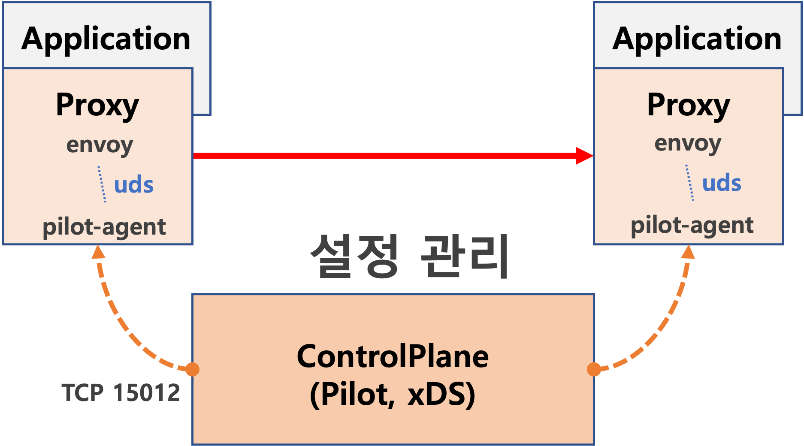
# 유닉스 도메인 소켓 listen 정보 확인 kubectl exec -it -n istioinaction deploy/webapp -c istio-proxy -- ss -xpl Netid State Recv-Q Send-Q Local Address:Port Peer Address:Port Process u_str LISTEN 0 4096 etc/istio/proxy/XDS 13207 * 0 users:(("pilot-agent",pid=1,fd=11)) u_str LISTEN 0 4096 ./var/run/secrets/workload-spiffe-uds/socket 13206 * 0 users:(("pilot-agent",pid=1,fd=10)) kubectl exec -it -n istioinaction deploy/webapp -c istio-proxy -- ss -xp Netid State Recv-Q Send-Q Local Address:Port Peer Address:Port Process u_str ESTAB 0 0 ./var/run/secrets/workload-spiffe-uds/socket 21902 * 23737 users:(("pilot-agent",pid=1,fd=16)) u_str ESTAB 0 0 etc/istio/proxy/XDS 1079087 * 1080955 users:(("pilot-agent",pid=1,fd=8)) ... # 유닉스 도메인 소켓 정보 확인 kubectl exec -it -n istioinaction deploy/webapp -c istio-proxy -- lsof -U COMMAND PID USER FD TYPE DEVICE SIZE/OFF NODE NAME pilot-age 1 istio-proxy 8u unix 0x00000000bda7185a 0t0 1079087 etc/istio/proxy/XDS type=STREAM # 소켓 경로 및 스트림 타입 pilot-age 1 istio-proxy 10u unix 0x0000000009112f4b 0t0 13206 ./var/run/secrets/workload-spiffe-uds/socket type=STREAM # SPIFFE UDS (SPIFFE SVID 인증용) # TYPE 파일 유형 (unix → Unix Domain Socket) ## 8u → 8번 디스크립터, u = 읽기/쓰기 ## 10u → 10번 디스크립터, u = 읽기/쓰기 # 유닉스 도메인 소켓 파일 정보 확인 kubectl exec -it -n istioinaction deploy/webapp -c istio-proxy -- ls -l /var/run/secrets/workload-spiffe-uds/socket srw-rw-rw- 1 istio-proxy istio-proxy 0 May 1 23:23 /var/run/secrets/workload-spiffe-uds/socket # istio 인증서 확인 : docker exec -it myk8s-control-plane istioctl proxy-config secret deploy/webapp.istioinaction RESOURCE NAME TYPE STATUS VALID CERT SERIAL NUMBER NOT AFTER NOT BEFORE default Cert Chain ACTIVE true 45287494908809645664587660443172732423 2025-05-03T16:13:14Z 2025-05-02T16:11:14Z ROOTCA CA ACTIVE true 338398148201570714444101720095268162852 2035-04-29T07:46:14Z 2025-05-01T07:46:14Z docker exec -it myk8s-control-plane istioctl proxy-config secret deploy/webapp.istioinaction -o json ... echo "." | base64 -d | openssl x509 -in /dev/stdin -text -noout # istio ca 관련 kubectl exec -it -n istioinaction deploy/webapp -c istio-proxy -- ls -l /var/run/secrets/istio kubectl exec -it -n istioinaction deploy/webapp -c istio-proxy -- openssl x509 -in /var/run/secrets/istio/root-cert.pem -text -noout kubectl exec -it -n istioinaction deploy/webapp -c istio-proxy -- ls -l /var/run/secrets/tokens kubectl exec -it -n istioinaction deploy/webapp -c istio-proxy -- cat /var/run/secrets/tokens/istio-token TOKEN=$(kubectl exec -it -n istioinaction deploy/webapp -c istio-proxy -- cat /var/run/secrets/tokens/istio-token) # 헤더 디코딩 echo $TOKEN | cut -d '.' -f1 | base64 --decode | sed 's/$/}/' | jq # 페이로드 디코딩 echo $TOKEN | cut -d '.' -f2 | base64 --decode | sed 's/$/"}/' | jq # (옵션) brew install jwt-cli jwt decode $TOKEN # (참고) k8s ca 관련 kubectl exec -it -n istioinaction deploy/webapp -c istio-proxy -- ls -l /var/run/secrets kubectl exec -it -n istioinaction deploy/webapp -c istio-proxy -- ls -l /var/run/secrets/kubernetes.io/serviceaccount kubectl exec -it -n istioinaction deploy/webapp -c istio-proxy -- openssl x509 -in /var/run/secrets/kubernetes.io/serviceaccount/ca.crt -text -noout kubectl exec -it -n istioinaction deploy/webapp -c istio-proxy -- cat /var/run/secrets/kubernetes.io/serviceaccount/token TOKEN=$(kubectl exec -it -n istioinaction deploy/webapp -c istio-proxy -- cat /var/run/secrets/kubernetes.io/serviceaccount/token) # 헤더 디코딩 echo $TOKEN | cut -d '.' -f1 | base64 --decode | sed 's/$/}/' | jq # 페이로드 디코딩 echo $TOKEN | cut -d '.' -f2 | base64 --decode | sed 's/$/}/' | jq # (옵션) brew install jwt-cli jwt decode $TOKEN # (참고) kubectl port-forward deploy/webapp -n istioinaction 15000:15000 open http://localhost:15000 curl http://localhost:15000/certs
- 이제 프록시는 클라이언트에게 자신의 정체를 증명할 수 있으며 상호 인증 커넥션을 시작할 수 있다.
- 그림 C.5는 이 과정을 간략하게 요약한 것이다.
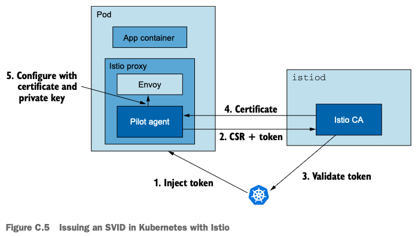
쿠버네티스에서 이스티오로 SVID 발급하기 - 이스티오 프록시 컨테이너에 서비스 어카운트 토큰이 할당된다.
- 토큰과 CSR이 istiod로 전송된다.
- istiod는 쿠버네티스 TokenReview API로 토큰의 유효성을 검사한다.
- 성공하면, 인증서에 서명하고 응답으로 제공한다.
- 파일럿 에이전트는 엔보이 SDS를 통해 엔보이가 ID를 포함한 인증서를 사용하도록 설정한다.
- 그리고 이것이 이스티오가 워크로드ID를 프로비저닝하기 위해 SPIFFE 사양을 구현하는 전체 과정이다.
- 이 과정은 이스티오 프록시 사이드카가 주입되는 모든 워크로드에서 자동으로 수행된다.
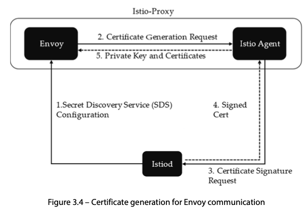
- 기본적으로 쿠버네티스에서 초기화된 모든 파드에는
(참고)
[사전 지식]K8S 파드의 애플리케이션이 사용할 수 있는 인증 관련 정보 - Docs , Link
https://ssup2.github.io/blog-old/theory_analysis/Kubernetes_Authentication_Service_Account/ - 서비스 어카운트 Service Account
- 서비스어카운트(ServiceAccount) 는 파드에서 실행되는 애플리케이션 프로세스에 대한 식별자를 제공한다.
- 파드 내부의 애플리케이션 프로세스는, 자신에게 부여된 서비스 어카운트의 식별자를 사용하여 클러스터의 API 서버에 인증할 수 있다.
- 서비스 어카운트 토큰 serviceAccountToken
서비스어카운트토큰(serviceAccountToken)정보는 kubelet이 kube-apiserver로부터 취득한 토큰을 포함한다.
- kubelet은 TokenRequest API를 통해 일정 시간 동안 사용할 수 있는 토큰을 발급 받는다.
- 이렇게 취득한 토큰은 파드가 삭제되거나 지정된 수명 주기 이후에 만료된다(기본값은 1시간이다).
- 이 토큰은 특정한 파드에 바인딩되며 kube-apiserver를 그 대상으로 한다.
- 토큰 컨트롤러 token Controller
kube-controller-manager의 일부로써 실행되며, 비동기적으로 동작한다.
- 서비스어카운트에 대한 삭제를 감시하고, 해당하는 모든 서비스어카운트 토큰 시크릿을 같이 삭제한다.
- 서비스어카운트 토큰 시크릿에 대한 추가를 감시하고, 참조된 서비스어카운트가 존재하는지 확인하며, 필요한 경우 시크릿에 토큰을 추가한다.
- 시크릿에 대한 삭제를 감시하고, 필요한 경우 해당 서비스어카운트에서 참조 중인 항목들을 제거한다.
- 서비스 어카운트 어드미션 컨트롤러 Service Account Admission Controller
어드미션 컨트롤러는 파드의 생성 시점에 다음 작업들을 수행한다.
- 파드에
.spce.serviceAccountName항목이 지정되지 않았다면, 어드미션 컨트롤러는 실행하려는 파드의 서비스어카운트 이름을default로 설정한다.
- 어드미션 컨트롤러는 실행되는 파드가 참조하는 서비스어카운트가 존재하는지 확인한다.
- 만약 해당하는 이름의 서비스어카운트가 존재하지 않는 경우, 어드미션 컨트롤러는 파드를 실행시키지 않는다.
- 이는
default서비스어카운트에 대해서도 동일하게 적용된다.
- 서비스어카운트의
automountServiceAccountToken또는 파드의automountServiceAccountToken중 어느 것도false로 설정되어 있지 않다면,- 어드미션 컨트롤러는 실행하려는 파드에 API에 접근할 수 있는 토큰을 포함하는 볼륨 을 추가한다.
- 어드미션 컨트롤러는 파드의 각 컨테이너에
volumeMount를 추가한다.
- 이미
/var/run/secrets/kubernetes.io/serviceaccount경로에 볼륨이 마운트 되어있는 컨테이너에 대해서는 추가하지 않는다.
- 리눅스 컨테이너의 경우, 해당 볼륨은
/var/run/secrets/kubernetes.io/serviceaccount위치에 마운트된다
- 파드의 spec에
imagePullSecrets이 없는 경우, 어드미션 컨트롤러는ServiceAccount의imagePullSecrets을 복사하여 추가된다.
- 파드에
- TokenRequest API
- 서비스어카운트의 하위 리소스인 TokenRequest를 사용하여 일정 시간 동안 해당 서비스어카운트에서 사용할 수 있는 토큰을 가져올 수 있다.
- 컨테이너 내에서 사용하기 위한 API 토큰을 얻기 위해 이 요청을 직접 호출할 필요는 없는데, kubelet이 프로젝티드 볼륨 을 사용하여 이를 설정하기 때문이다.
- 프로젝티드 볼륨 Projected Volumes - Docs
- …
- 서비스 어카운트 Service Account
- 4.1. Istio에서의 MTLS
{kind=link}
{kind=link}
{kind=link}
{kind=link}
{kind=link}
{kind=link}
{kind=link}
{kind=link}
{kind=link}
{kind=link}
- 4.2.
Cilium에서 MTLS4.2.1. Cilium Mutual Authentication (Beta) 설정 : 실습 환경 구성 실패로 Skip - Docs & Mutual Authentication Example - Docs
Mutual Authentication in Cilium
- Cilium의 mTLS 기반 상호 인증 지원은 일반 연결에 대해 대역 외 상호 인증 핸드셰이크를 제공합니다.
- Cilium’s mTLS-based Mutual Authentication support brings the mutual authentication handshake out-of-band for regular connections.
- Cilium이 서비스 간 인증 및 암호화에 대한 일반적인 요구 사항 대부분을 충족하려면 사용자가 암호화를 활성화해야 합니다.
- For Cilium to meet most of the common requirements for service-to-service authentication and encryption, users must enable encryption.
- Cilium의 암호화 기능인 WireGuard Transparent Encryption 및 IPsec Transparent Encryption을 활성화하면 Pod 간에 암호화된 연결을 자동으로 생성하고 유지할 수 있습니다.
- 신원 확인의 과제를 해결하기 위해 상호 인증에는 분산 시스템을 위한 안전한 신원 확인 프레임워크가 필요합니다.
- To address the challenge of identity verification in dynamic and heterogeneous environments, mutual authentication requires a framework secure identity verification for distributed systems.
Identity Management
- Cilium의 현재 상호 인증 지원에서는 SPIFFE(Secure Production Identity Framework for Everyone)를 사용하여 ID 관리가 제공됩니다.
- In Cilium’s current mutual authentication support, identity management is provided through the use of SPIFFE (Secure Production Identity Framework for Everyone).
- SPIFFE 가 제공하는 혜택
- 신뢰할 수 있는 신원 발급: SPIFFE는 신원 발급 및 관리를 위한 표준화된 메커니즘을 제공합니다. 서비스가 빈번하게 확장되거나 축소되는 동적 환경에서도 분산 시스템의 각 서비스가 고유하고 검증 가능한 신원을 받을 수 있도록 보장합니다.
- 신원 증명: SPIFFE는 서비스가 증명을 통해 신원을 증명할 수 있도록 합니다. SPIFFE는 디지털 서명이나 암호화 증명과 같은 신원에 대한 검증 가능한 증거를 제공함으로써 서비스의 진위성과 무결성을 입증할 수 있도록 보장합니다.
- 동적이고 확장 가능한 환경: SPIFFE는 동적인 환경에서 ID 관리의 어려움을 해결합니다. 서비스가 지속적으로 배포, 업데이트 또는 폐기될 수 있는 클라우드 네이티브 아키텍처에서 필수적인 자동 ID 발급, 순환 및 폐기 기능을 지원합니다.
- Cilium and SPIFFE
- SPIFFE는 워크로드가 중앙 서버에 ID를 요청할 수 있도록 하는 API 모델을 제공합니다. 이 경우 워크로드는 Cilium 보안 ID와 동일한 의미, 즉 레이블 집합으로 설명되는 포드 집합을 의미합니다. SPIFFE ID는 URI의 하위 클래스이며 다음과 같은 형태를 갖습니다.
spiffe://trust.domain/path/with/encoded/info
- SPIFFE 설정에는 두 가지 주요 부분이 있습니다.
- 신뢰 도메인에 대한 신뢰의 루트를 형성하는 중앙 SPIRE 서버입니다.
- 노드별 SPIRE 에이전트는 먼저 SPIRE 서버로부터 자체 ID를 받은 다음 해당 노드에서 실행 중인 워크로드의 ID 요청을 검증합니다.
- 워크로드가 자신의 ID를 얻고자 할 때(일반적으로 시작 시) SPIFFE 워크로드 API를 사용하여 로컬 SPIRE 에이전트에 연결하고 에이전트에 자신을 설명합니다.
- 그런 다음 SPIRE 에이전트는 워크로드가 실제로 표시된 것과 같은지 확인한 다음 SPIRE 서버에 연결하여 워크로드가 ID를 요청하고 있으며 요청이 유효함을 증명합니다.
- SPIRE 에이전트는 작업 부하에 대해 여러 가지 사항을 확인합니다. 즉, 포드가 실제로 해당 노드에서 실행 중인지, 레이블이 일치하는지 등을 확인합니다.
- SPIRE 에이전트가 SPIRE 서버에 신원을 요청하면, SVID(SPIFFE Verified Identity Document) 형식으로 워크로드에 다시 전달합니다. 이 문서에는 X.509 버전의 TLS 키 쌍이 포함되어 있습니다.
- SPIRE의 일반적인 흐름에서 워크로드는 SPIRE 서버에 자체 정보를 요청합니다. Cilium의 SPIFFE 지원에서는 Cilium 에이전트가 공통 SPIFFE ID를 받고 다른 워크로드를 대신하여 ID를 요청할 수 있습니다.
- SPIFFE는 워크로드가 중앙 서버에 ID를 요청할 수 있도록 하는 API 모델을 제공합니다. 이 경우 워크로드는 Cilium 보안 ID와 동일한 의미, 즉 레이블 집합으로 설명되는 포드 집합을 의미합니다. SPIFFE ID는 URI의 하위 클래스이며 다음과 같은 형태를 갖습니다.
- 필수 조건
- 상호 인증은 현재 인증서 관리를 위한 SPIFFE API에서만 지원됩니다.
- Mutual authentication is only currently supported with SPIFFE APIs for certificate management.
- Cilium Helm 차트에는 상호 인증을 위해 SPIRE 서버를 배포하는 옵션이 포함되어 있습니다. 자체 SPIRE 서버를 배포하고 Cilium을 구성하여 사용할 수도 있습니다.
- The Cilium Helm chart includes an option to deploy a SPIRE server for mutual authentication. You may also deploy your own SPIRE server and configure Cilium to use it.
- 상호 인증은 현재 인증서 관리를 위한 SPIFFE API에서만 지원됩니다.
설정
- 랩 또는 로컬 클러스터의 경우 설치 명령에 전달하여 메모리 내 스토리지로 전환할 수 있지만
authentication.mutual.spire.install.server.dataStorage.enabled=false, SPIRE 서버 포드를 다시 시작할 때 모든 데이터를 다시 생성해야 합니다.
제한 사항
- Cilium 상호 인증은 아직 개발 중이며 베타 버전으로 제공됩니다. 계획된 여러 보안 기능이 아직 구현되지 않았습니다. 자세한 내용은 아래를 참조하세요.
- Cilium의 상호 인증은 SPIFFE의 프로덕션 지원 구현체인 SPIRE로만 검증되었습니다. Cilium은 SPIFFE API를 사용하므로 다른 SPIFFE 구현체도 작동할 수 있습니다. 그러나 Cilium은 현재 제공된 SPIRE 설치 환경에서만 테스트되었으며, 다른 SPIFFE 구현체는 현재 지원되지 않습니다.
- 현재 클러스터 메시와 서비스 메시를 결합하기 위해 여러 클러스터에 걸쳐 단일 신뢰 도메인을 구축하는 옵션은 없습니다. 따라서 클러스터 메시에 연결된 클러스터는 현재 상호 인증과 호환되지 않습니다.
- 현재 상호 인증 지원은 Cilium에서 관리하는 클러스터 내에서만 작동하며 외부 mTLS 솔루션과 호환되지 않습니다.
# helm get values -n kube-system cilium > before.yaml helm upgrade cilium cilium/cilium --version 1.18.1 --namespace kube-system --reuse-values \ --set authentication.mutual.spire.enabled=true --set authentication.mutual.spire.install.enabled=true helm get values -n kube-system cilium > after.yaml diff before.yaml after.yaml 1a2,7 > authentication: > mutual: > spire: > enabled: true > install: > enabled: true # kc describe cm -n cilium-spire spire-server | grep socket_path socket_path = "/tmp/spire-server/private/api.sock" # k9s 에서 configmap 수정 socket_path = "/run/spire/sockets/api.sock" # kubectl -n kube-system rollout restart deployment/cilium-operator kubectl -n kube-system rollout restart ds/cilium kubectl -n cilium-spire rollout restart sts spire-server # 확인 kubectl get all,svc,ep,configmap,secret,pvc -n cilium-spire # This enabled the mutual authentication feature and automatically deployed a SPIRE server. ## If you're not familiar with SPIFFE and SPIRE, don't worry: we will explain the concepts behind SPIFFE and SPIRE (and how they integrate with Cilium) - in a later task. ## Just know that SPIFFE is an identity framework for identifying and securing communications between microservices while SPIRE is a production-ready implementation of SPIFFE. cilium config view | grep mesh-auth mesh-auth-enabled true mesh-auth-gc-interval 5m0s mesh-auth-mutual-connect-timeout 5s mesh-auth-mutual-enabled true mesh-auth-mutual-listener-port 4250 mesh-auth-queue-size 1024 mesh-auth-rotated-identities-queue-size 1024 mesh-auth-spiffe-trust-domain spiffe.cilium mesh-auth-spire-admin-socket /run/spire/sockets/admin.sock mesh-auth-spire-agent-socket /run/spire/sockets/agent/agent.sock mesh-auth-spire-server-address spire-server.cilium-spire.svc:8081 mesh-auth-spire-server-connection-timeout 30s # You can see above that: ## Mutual Authentication is enabled. ## the port where mutual handshakes between agents will be performed is by default set to 4250. ## the SPIFFE Trust Domain is set to spiffe.cilium by default. ## the SPIRE connection timeout is set to 30s by default. ## Note that the default SPIRE settings can be customized at deployment. # Note that, while Mutual Authentication has been enabled globally, it won't apply to workloads until a network policy applicable to these workloads has the authentication.mode:required setting. You will learn more about this in the upcomign tasks. # Let's also debug log level, as this will be useful to show the actual mutual authentication later on: cilium config set debug true- Cilium의 mTLS 기반 상호 인증 지원은 일반 연결에 대해 대역 외 상호 인증 핸드셰이크를 제공합니다.
4.2.2. CFP-22215: Mutual Authentication for Cilium Service Mesh* - Github , Blog


- 목표
- 포드가 피어 인증을 선택할 수 있는 메커니즘을 제공합니다.
- 기존 인증서 관리 시스템(SPIFFE, Vault, SMI, Istio, cert-manager 등)에 플러그인 가능
- 구성 가능한 인증서 세분성
- 데이터플레인에 대한 기존 암호화 프로토콜 지원 활용
- 합리적인 노력으로 가능한 한 패킷 삭제를 최소화합니다.
- 개요
- 첫째, 각 노드의 cilium-agent 인스턴스 간의 제어 평면 연결은 노드 내 포드 간 연결 인증을 제공합니다.
- 둘째, WireGuard 또는 IPsec을 사용하는 기존 Cilium 암호화 지원은 연결에 암호화된 데이터 평면을 제공합니다.
- 본 문서에서는 이러한 대역 외 인증 채널과 대역 내 네트워크 암호화 채널을 조정하는 노드별 구현 방식을 설명.
- 아키텍처


- SPIFEE Architecture

- 목표
4.2.3. Mutual Authentication with Cilium Online Lab - Link
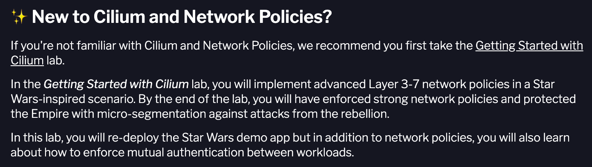
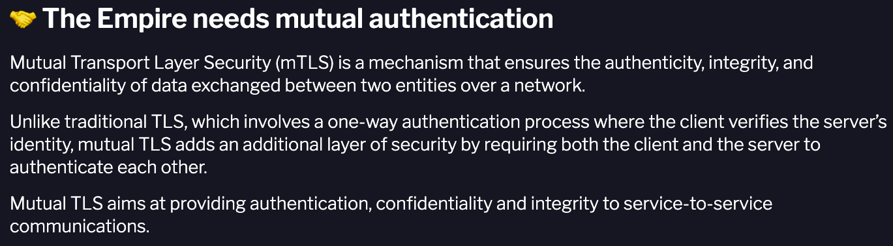
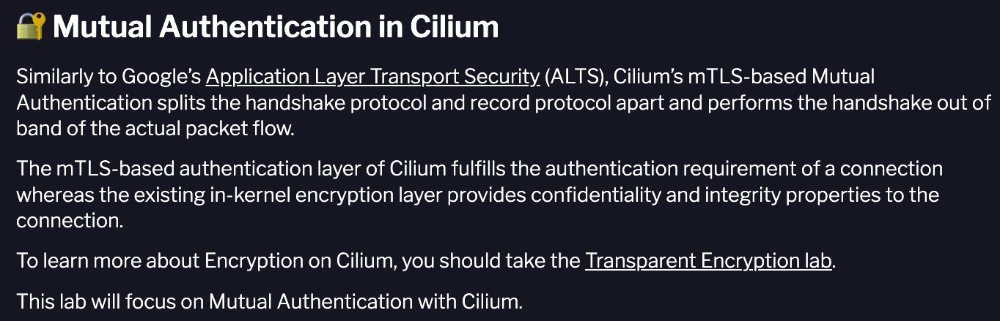
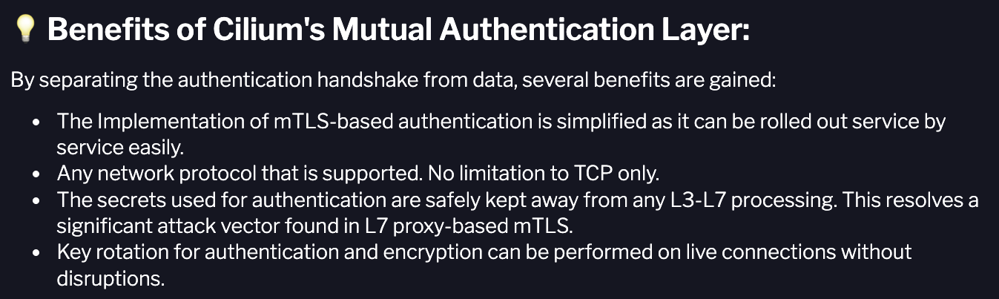
4.2.4. Cilium Mutual Authentication 설정 확인
# kubectl get node -owide NAME STATUS ROLES AGE VERSION INTERNAL-IP EXTERNAL-IP OS-IMAGE KERNEL-VERSION CONTAINER-RUNTIME kind-control-plane Ready control-plane 52m v1.31.0 172.18.0.2 <none> Debian GNU/Linux 12 (bookworm) 6.11.0-1015-gcp containerd://1.7.18 kind-worker Ready <none> 52m v1.31.0 172.18.0.3 <none> Debian GNU/Linux 12 (bookworm) 6.11.0-1015-gcp containerd://1.7.18 kind-worker2 Ready <none> 52m v1.31.0 172.18.0.4 <none> Debian GNU/Linux 12 (bookworm) 6.11.0-1015-gcp containerd://1.7.18 # Cilium was installed during the lab boot-up and was deployed with the following Helm flags: authentication: mutual: spire: enabled: true install: enabled: true helm list -n kube-system NAME NAMESPACE REVISION UPDATED STATUS CHART APP VERSION cilium kube-system 1 2025-08-17 07:37:37.468306607 +0000 UTC deployed cilium-1.17.4 1.17.4 helm get values -n kube-system cilium authentication: mutual: spire: enabled: true install: enabled: true cluster: name: kind-kind hubble: enabled: true metrics: enabled: - dns - drop - tcp - flow - icmp - http relay: enabled: true service: type: NodePort ui: enabled: true service: type: NodePort ipam: mode: kubernetes k8sServiceHost: 172.18.0.2 k8sServicePort: 6443 kubeProxyReplacement: true operator: replicas: 1 routingMode: tunnel securityContext: privileged: true tunnelProtocol: vxlan # 기능 활성화, SPIRE(SPIFFE의 구현체) 서버 배포됨 # his enabled the mutual authentication feature and automatically deployed a SPIRE server. cilium config view | grep mesh-auth mesh-auth-enabled true mesh-auth-gc-interval 5m0s mesh-auth-mutual-connect-timeout 5s mesh-auth-mutual-enabled true mesh-auth-mutual-listener-port 4250 # the port where mutual handshakes between agents will be performed is by default set to 4250. mesh-auth-queue-size 1024 mesh-auth-rotated-identities-queue-size 1024 mesh-auth-spiffe-trust-domain spiffe.cilium # the SPIFFE Trust Domain is set to spiffe.cilium by default. mesh-auth-spire-admin-socket /run/spire/sockets/admin.sock mesh-auth-spire-agent-socket /run/spire/sockets/agent/agent.sock mesh-auth-spire-server-address spire-server.cilium-spire.svc:8081 mesh-auth-spire-server-connection-timeout 30s # the SPIRE connection timeout is set to 30s by default. # kubectl get pod,svc,ep -n cilium-spire NAME READY STATUS RESTARTS AGE pod/spire-agent-7bnj7 1/1 Running 0 85s pod/spire-agent-dbftz 1/1 Running 0 85s pod/spire-agent-qwqrr 1/1 Running 0 85s pod/spire-server-0 2/2 Running 0 85s NAME TYPE CLUSTER-IP EXTERNAL-IP PORT(S) AGE service/spire-server ClusterIP 10.96.107.37 <none> 8081/TCP 85s NAME ENDPOINTS AGE endpoints/spire-server 10.244.2.123:8081 85s # Let's also debug log level, as this will be useful to show the actual mutual authentication later on: cilium config set debug true ✨ Patching ConfigMap cilium-config with debug=true... ♻️ Restarted Cilium pods
4.2.5. Deploy the demo
# 스타워즈 환경과 데모에 사용된 L3/L4 네트워크 정책을 배포, 아직 상호인증 X # In this example, we will look at adding mutual authentication to the Star Wars demo deployed in the Getting Started with the Star Wars Demo docs and available in the Getting Started with Cilium lab. # We will assume you are familiar with this demo. If not, check the links above. # Deploy the Star Wars environment and the L3/L4 network policy used in the demo (there's no mutual authentication in the network policy yet). kubectl apply -f https://raw.githubusercontent.com/cilium/cilium/HEAD/examples/minikube/http-sw-app.yaml kubectl apply -f https://raw.githubusercontent.com/cilium/cilium/HEAD/examples/minikube/sw_l3_l4_policy.yaml # kubectl get pod,svc,ep NAME READY STATUS RESTARTS AGE pod/deathstar-67c5c5c88-t6kfs 0/1 ContainerCreating 0 3s pod/deathstar-67c5c5c88-zfdgr 1/1 Running 0 3s pod/tiefighter 0/1 ContainerCreating 0 3s pod/xwing 0/1 ContainerCreating 0 3s NAME TYPE CLUSTER-IP EXTERNAL-IP PORT(S) AGE service/deathstar ClusterIP 10.96.27.67 <none> 80/TCP 3s service/kubernetes ClusterIP 10.96.0.1 <none> 443/TCP 11m NAME ENDPOINTS AGE endpoints/deathstar 10.244.2.195:80 3s endpoints/kubernetes 172.18.0.2:6443 11m # Review the Network Policy ## This network policy will only allow traffic from endpoints labeled with org=empire to endpoints with both the class=deathstar and org=empire labels, over TCP port 80. kubectl get cnp rule1 -o yaml | yq .spec description: L3-L4 policy to restrict deathstar access to empire ships only endpointSelector: matchLabels: class: deathstar org: empire ingress: - fromEndpoints: - matchLabels: org: empire toPorts: - ports: - port: "80" protocol: TCP
4.2.6. Check Network Policy
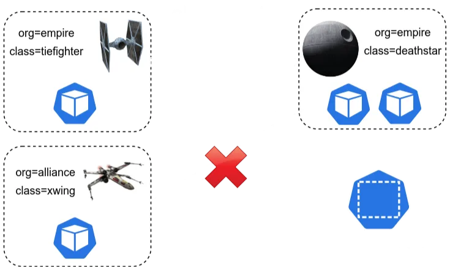
# verify that Tie Fighters (Empire space ships) are allowed to land on the Death Star : 성공! # This request should be successful (the tiefighter is able to connect to the deathstar over a specific HTTP path): kubectl exec tiefighter -- \ curl -s -XPOST deathstar.default.svc.cluster.local/v1/request-landing Ship landed # Then verify that the X-Wing ship (belong to the Alliance) is denied access to the Death Star: 실패! # This second request should time out (the xwing is unable to connect to the deathstar because it does not have the right label): kubectl exec xwing -- \ curl -s --connect-timeout 1 -XPOST deathstar.default.svc.cluster.local/v1/request-landing command terminated with exit code 28 # cilium hubble port-forward& hubble observe --pod tiefighter hubble observe --pod xwing Aug 23 14:15:58.735: default/xwing:37172 (ID:62687) <> default/deathstar-67c5c5c88-t6kfs:80 (ID:55162) policy-verdict:none INGRESS DENIED (TCP Flags: SYN) Aug 23 14:15:58.735: default/xwing:37172 (ID:62687) <> default/deathstar-67c5c5c88-t6kfs:80 (ID:55162) Policy denied DROPPED (TCP Flags: SYN)
4.2.7. Enforcing Mutual Authentication*
# CNP에 상호 인증 적용 spec: egress|ingress: authentication: mode: "required" # Let's do that now. We will be using this policy: yq sw_l3_l4_l7_mutual_authentication_policy.yaml --- apiVersion: "cilium.io/v2" kind: CiliumNetworkPolicy metadata: name: "rule1" spec: description: "Mutual authentication enabled L7 policy" endpointSelector: matchLabels: org: empire class: deathstar ingress: - fromEndpoints: - matchLabels: org: empire authentication: mode: "required" toPorts: - ports: - port: "80" protocol: TCP rules: http: - method: "POST" path: "/v1/request-landing" # Review the changes we will be making with the existing network policy KUBECTL_EXTERNAL_DIFF='colordiff -u' \ kubectl diff -f sw_l3_l4_l7_mutual_authentication_policy.yaml | \ grep -A30 ' spec:' spec: - description: L3-L4 policy to restrict deathstar access to empire ships only + description: Mutual authentication enabled L7 policy endpointSelector: matchLabels: class: deathstar org: empire ingress: - - fromEndpoints: + - authentication: + mode: required # ingress access is only for mutually authenticated workloads. + fromEndpoints: - matchLabels: org: empire toPorts: - ports: - port: "80" protocol: TCP + rules: + http: + - method: POST + path: /v1/request-landing # we are adding L7 filtering (only allowing HTTP POST to the /v1/request-landing) status: conditions: - lastTransitionTime: "2025-08-17T07:39:18Z" # Let's now apply this policy : 기존 정책에 업데이트 적용. kubectl apply -f sw_l3_l4_l7_mutual_authentication_policy.yaml ciliumnetworkpolicy.cilium.io/rule1 configured- 상호 인증 설정 후 호출 확인
# Re-try the connectivity tests : Let's start with the tiefighter calling the /request-landing path : # This should still succeed. It may take some time for the response to print in the terminal. kubectl exec tiefighter -- \ curl -s -XPOST deathstar.default.svc.cluster.local/v1/request-landing Ship landed # Let's then try access from the tiefigher to the /exhaust-port path: # This second request should be denied , thanks to the new L7 Network Policy, preventing any tiefighter - compromised or not - from accessing the /exhaust-port. kubectl exec tiefighter -- \ curl -s -XPUT deathstar.default.svc.cluster.local/v1/exhaust-port Access denied # This third one should time out, thanks to the L3/L4 Network Policy. # But has mutual authentication actually happened? # Let's verify this in the next challenge. kubectl exec xwing -- \ curl -s --connect-timeout 1 -XPOST deathstar.default.svc.cluster.local/v1/request-landing command terminated with exit code 28 # hubble observe --pod tiefighter Aug 23 14:17:26.031: default/tiefighter:51466 (ID:2072) -> default/deathstar-67c5c5c88-t6kfs:80 (ID:55162) http-request DROPPED (HTTP/1.1 PUT http://deathstar.default.svc.cluster.local/v1/exhaust-port) hubble observe --pod xwing Aug 23 14:17:30.947: default/xwing:39434 (ID:62687) <> default/deathstar-67c5c5c88-t6kfs:80 (ID:55162) policy-verdict:none INGRESS DENIED (TCP Flags: SYN) Aug 23 14:17:30.947: default/xwing:39434 (ID:62687) <> default/deathstar-67c5c5c88-t6kfs:80 (ID:55162) Policy denied DROPPED (TCP Flags: SYN)- Hubble 확인
# kubectl exec tiefighter -- curl -s -XPOST deathstar.default.svc.cluster.local/v1/request-landing Ship landed kubectl exec xwing -- curl -s --connect-timeout 1 -XPOST deathstar.default.svc.cluster.local/v1/request-landing command terminated with exit code 28 # xwing 은 L3/L4 정책으로 차단! # The network policy should have dropped flows from the xwing as the xwing has not got the right labels(org: empire). # The policy verdict for this traffic should be DROPPED by the L3/L4 section of the Network Policy: hubble observe --type drop --from-pod default/xwing Aug 23 14:15:58.735: default/xwing:37172 (ID:62687) <> default/deathstar-67c5c5c88-t6kfs:80 (ID:55162) Policy denied DROPPED (TCP Flags: SYN) Aug 23 14:17:30.947: default/xwing:39434 (ID:62687) <> default/deathstar-67c5c5c88-t6kfs:80 (ID:55162) Policy denied DROPPED (TCP Flags: SYN) Aug 23 14:19:46.709: default/xwing:52670 (ID:62687) <> default/deathstar-67c5c5c88-zfdgr:80 (ID:55162) Policy denied DROPPED (TCP Flags: SYN) # tiefighter 는 첫 번째 패킷 차단 유도되고(mtls적용 되었으므로 인증서를 담아서 보는것을 유도 하기 위함), 이후 인증 단계를 진행하려함! => mtls는 이렇게 동작함 # Let's now look at traffic from the tiefighter to the deathstar. # The network policy should have dropped the first flow from the tiefighter to the deathstar Service over /request-landing. Why ? Because the first packet to match the mutual authentication-based network policy will kickstart the mutual authentication handshake. hubble observe --type drop --from-pod default/tiefighter Aug 23 14:17:20.669: default/tiefighter:37590 (ID:2072) <> default/deathstar-67c5c5c88-t6kfs:80 (ID:55162) Authentication required DROPPED (TCP Flags: SYN) hubble observe --type policy-verdict --from-pod default/tiefighter Aug 23 14:17:21.697: default/tiefighter:37590 (ID:2072) -> default/deathstar-67c5c5c88-t6kfs:80 (ID:55162) policy-verdict:L3-L4 INGRESS ALLOWED (TCP Flags: SYN; Auth: SPIRE) Aug 23 14:17:26.029: default/tiefighter:51466 (ID:2072) -> default/deathstar-67c5c5c88-t6kfs:80 (ID:55162) policy-verdict:L3-L4 INGRESS ALLOWED (TCP Flags: SYN; Auth: SPIRE)
4.2.8. SPIRE & SPIFFE*
- A SPIRE server was automatically deployed when installing Cilium with the mutual authentication feature.
- The SPIRE environment will manage the TLS certificates for the workloads managed by Cilium.
- Verify SPIRE Health
# spire server와 agent 확인 kubectl get all -n cilium-spire NAME READY STATUS RESTARTS AGE pod/spire-agent-7bnj7 1/1 Running 0 10m pod/spire-agent-dbftz 1/1 Running 0 10m pod/spire-agent-qwqrr 1/1 Running 0 10m pod/spire-server-0 2/2 Running 0 10m NAME TYPE CLUSTER-IP EXTERNAL-IP PORT(S) AGE service/spire-server ClusterIP 10.96.107.37 <none> 8081/TCP 10m NAME DESIRED CURRENT READY UP-TO-DATE AVAILABLE NODE SELECTOR AGE daemonset.apps/spire-agent 3 3 3 3 3 <none> 10m NAME READY AGE statefulset.apps/spire-server 1/1 10m # Let's run a healthcheck on the SPIRE server. # Expect a healthy response: kubectl exec -n cilium-spire spire-server-0 -c spire-server -- /opt/spire/bin/spire-server -h kubectl exec -n cilium-spire spire-server-0 -c spire-server -- \ /opt/spire/bin/spire-server healthcheck Server is healthy. # Let's verify the list of SPIRE agents: 3개의 노드에 배포된 SPIRE agent 확인 kubectl exec -n cilium-spire spire-server-0 -c spire-server -- \ /opt/spire/bin/spire-server agent list Found 3 attested agents: SPIFFE ID : spiffe://spiffe.cilium/spire/agent/k8s_psat/kind-kind/5697ceef-ba54-4b1d-a8ee-a5e23b1291a8 Attestation type : k8s_psat Expiration time : 2025-08-23 15:14:26 +0000 UTC Serial number : 176892223229494017470437023931887939924 Can re-attest : true SPIFFE ID : spiffe://spiffe.cilium/spire/agent/k8s_psat/kind-kind/6cff2665-764e-4ff9-a627-90276a4bf6e6 Attestation type : k8s_psat Expiration time : 2025-08-23 15:14:26 +0000 UTC Serial number : 260398908367923613836351950569331051050 Can re-attest : true SPIFFE ID : spiffe://spiffe.cilium/spire/agent/k8s_psat/kind-kind/737c8ddf-df07-49e1-bf62-5ec7ef9f8e33 Attestation type : k8s_psat Expiration time : 2025-08-23 15:14:26 +0000 UTC Serial number : 42523079450674970008276186650014997305 Can re-attest : true- SPIRE 서버는 Kubernetes 클러스터에서 실행되는 SPIRE 에이전트의 신원을 확인하기 위해 Kubernetes Projected Service Account Token(PSAT)을 사용합니다.
- Verify SPIFFE identity for Cilium
# cilium-agent 와 operator 이 SPIRE 서버에 등록된 위임 ID 보유 # First, verify that the Cilium agent and operator have identities on the SPIRE server: # the Cilium agent and the Cilium Operator, showing that the Cilium agent and operator each have a registered delegate identity with the SPIRE Server kubectl exec -n cilium-spire spire-server-0 -c spire-server -- \ /opt/spire/bin/spire-server entry show -parentID spiffe://spiffe.cilium/ns/cilium-spire/sa/spire-agent Found 2 entries Entry ID : d4d81043-fdde-4160-a3c9-a8f90ebcdc06 SPIFFE ID : spiffe://spiffe.cilium/cilium-agent Parent ID : spiffe://spiffe.cilium/ns/cilium-spire/sa/spire-agent Revision : 0 X509-SVID TTL : default JWT-SVID TTL : default Selector : k8s:ns:kube-system Selector : k8s:sa:cilium Entry ID : b4ece9b2-9996-407c-9025-6c2bbcb0e310 SPIFFE ID : spiffe://spiffe.cilium/cilium-operator Parent ID : spiffe://spiffe.cilium/ns/cilium-spire/sa/spire-agent Revision : 0 X509-SVID TTL : default JWT-SVID TTL : default Selector : k8s:ns:kube-system Selector : k8s:sa:cilium-operator # Let's now verify that the Cilium operator has registered identities with the SPIRE server on behalf of the workloads (Kubernetes Pods).
- Verify SPIFFE identity for the Death Star
# First, get the Cilium Identity of the deathstar Pods: # Even though there are two of these Pods, they share the same Cilium Identity, since they use the same set of Kubernetes labels. kubectl get cep -owide NAME SECURITY IDENTITY INGRESS ENFORCEMENT EGRESS ENFORCEMENT ENDPOINT STATE IPV4 IPV6 deathstar-67c5c5c88-t6kfs 55162 ready 10.244.1.168 deathstar-67c5c5c88-zfdgr 55162 ready 10.244.2.195 tiefighter 2072 ready 10.244.1.73 xwing 62687 ready 10.244.1.177 ... IDENTITY_ID=$(kubectl get cep -l app.kubernetes.io/name=deathstar -o=jsonpath='{.items[0].status.identity.id}') echo $IDENTITY_ID 55162 # The SPIFFE ID —that uniquely identifies a workload— is based on the Cilium identity. # It follows the spiffe://spiffe.cilium/identity/$IDENTITY_ID format. # cilium-operator 가 Cilium identiy 를 기반으로 SPIRE Entry 생성 관리 책임 가짐! # Verify that the Death Star pods have a registered SPIFFE identity on the SPIRE server: # You can see the that the cilium-operator was listed as the Parent ID. # That is because the Cilium operator is responsible for creating SPIRE entries for each Cilium identity. kubectl exec -n cilium-spire spire-server-0 -c spire-server -- \ /opt/spire/bin/spire-server entry show -spiffeID spiffe://spiffe.cilium/identity/$IDENTITY_ID Found 1 entry Entry ID : 1921215c-fef2-4b65-89c1-d634364e31ea SPIFFE ID : spiffe://spiffe.cilium/identity/55162 Parent ID : spiffe://spiffe.cilium/cilium-operator Revision : 0 X509-SVID TTL : default JWT-SVID TTL : default Selector : cilium:mutual-auth # List all the registration entries with: kubectl exec -n cilium-spire spire-server-0 -c spire-server -- \ /opt/spire/bin/spire-server entry show -selector cilium:mutual-auth Found 9 entries Entry ID : c4ee1970-5026-4e08-afdc-590c84f133e4 SPIFFE ID : spiffe://spiffe.cilium/identity/10211 Parent ID : spiffe://spiffe.cilium/cilium-operator Revision : 0 X509-SVID TTL : default JWT-SVID TTL : default Selector : cilium:mutual-auth Entry ID : 99cf1500-d5bd-49d2-9930-060ea0d79d12 SPIFFE ID : spiffe://spiffe.cilium/identity/16375 Parent ID : spiffe://spiffe.cilium/cilium-operator Revision : 0 X509-SVID TTL : default JWT-SVID TTL : default Selector : cilium:mutual-auth Entry ID : 9a1ae528-4330-4275-b0fd-804f82c9df8d SPIFFE ID : spiffe://spiffe.cilium/identity/2072 Parent ID : spiffe://spiffe.cilium/cilium-operator Revision : 0 X509-SVID TTL : default JWT-SVID TTL : default Selector : cilium:mutual-auth ... # There are as many entries as there are identities. Verify this these match by listing the Cilium identities in the cluster: kubectl get ciliumidentities NAME NAMESPACE AGE 10211 kube-system 12m 16375 local-path-storage 12m 2072 default 10m 3368 local-path-storage 12m 52993 cilium-spire 11m 5495 kube-system 12m 55162 default 11m 62687 default 10m 7010 kube-system 12m
- SPIFFE Verifiable Identity Document (SVID)
- SVID는 워크로드가 리소스나 호출자에게 자신의 신원을 증명하는 문서입니다. SVID는 SPIFF ID의 신뢰 도메인 내에서 권한자가 서명한 경우 유효한 것으로 간주됩니다.
- An
SVIDis the document with which a workload proves its identity to a resource or caller. An SVID is considered valid if it has been signed by an authority within the SPIFFE ID’s trust domain.
- An
- SVID에는 단일 SPIFF ID가 포함되어 있으며, 이는 해당 서비스를 제공하는 서비스의 신원을 나타냅니다. SVID는 X.509 인증서의 암호학적으로 검증 가능한 문서에 SPIFF ID를 인코딩합니다.
- An SVID contains a single SPIFFE ID, which represents the identity of the service presenting it. It encodes the SPIFFE ID in a cryptographically-verifiable document in an X.509 certificate.
- Cilium 상호 인증의 초기 구현을 위해 SPIRE를 선택한 이유 중 하나는 인증서가 만료되기 전에 SVID를 자동으로 재키핑하고, 이 경우 실륨 에이전트를 포함한 SVID 감시자에게 통지하기 때문입니다.
- One of the reasons for choosing SPIRE for the initial implementation of Cilium Mutual Authentication is that it will automatically rekey SVIDs before their certificate expires, and when this happens, it will notify SVID watchers, which includes the Cilium Agent.
- SVID는 워크로드가 리소스나 호출자에게 자신의 신원을 증명하는 문서입니다. SVID는 SPIFF ID의 신뢰 도메인 내에서 권한자가 서명한 경우 유효한 것으로 간주됩니다.
4.2.9. Review Mutual Authentication Process
# workers 노드의 cilium-agent 이름 확인 CILIUM_KIND_WORKER=$(kubectl -n kube-system get pods -l k8s-app=cilium -o jsonpath='{.items[?(@.spec.nodeName=="kind-worker")].metadata.name}') echo $CILIUM_KIND_WORKER cilium-5n6l6 CILIUM_KIND_WORKER2=$(kubectl -n kube-system get pods -l k8s-app=cilium -o jsonpath='{.items[?(@.spec.nodeName=="kind-worker2")].metadata.name}') echo $CILIUM_KIND_WORKER2 cilium-89dw4 # cilium-agent 로그에서 상호 인증 관련 내용 확인 가능 kubectl -n kube-system -c cilium-agent logs $CILIUM_KIND_WORKER --timestamps=true | grep "Policy is requiring authentication\|Validating Server SNI\|Validated certificate\|Successfully authenticated" kubectl -n kube-system -c cilium-agent logs $CILIUM_KIND_WORKER2 --timestamps=true | grep "Policy is requiring authentication\|Validating Server SNI\|Validated certificate\|Successfully authenticated" 2025-08-17T08:00:24.806708742Z time=2025-08-17T08:00:24Z level=debug msg="Policy is requiring authentication" module=agent.controlplane.auth key="localIdentity=3838, remoteIdentity=3712, remoteNodeID=0, authType=spire" 2025-08-17T08:00:24.863381354Z time=2025-08-17T08:00:24Z level=debug msg="Validating Server SNI" module=agent.controlplane.auth SNI_ID=3712 2025-08-17T08:00:24.863406574Z time=2025-08-17T08:00:24Z level=debug msg="Validated certificate" module=agent.controlplane.auth uri-san=[spiffe://spiffe.cilium/identity/3712]- 네트워크 정책 생성
- A Network Policy with
authentication.mode: requiredwas created and will apply to traffic between identitytiefighterand identitydeathstar.
- A Network Policy with
- 첫 번째 패킷은 차단되고, 상호 인증 프로세스 시작 알림 전송
- First packet from
tiefightertodeathstaris dropped and Cilium is notified to start the mutual authentication process. Further packets will be dropped until mutual auth has completed. (Policy is requiring authenticationlog)
- First packet from
- Cilium 에이전트는 'tiefighter'의 ID를 가져오고, 'deathstar' 포드가 실행 중인 노드에 연결하여 상호 TLS 인증 핸드셰이크를 수행
- The Cilium agent retrieves the identity for
tiefighter, connects to the node where thedeathstarpod is running and performs a mutual TLS authentication handshake. (Validating Server SNIandValidated certificatelogs)
- The Cilium agent retrieves the identity for
- 상호 인증 성공 완료 후 네트워크 정책이 제거되거나 항목이 만료될 때까지 '타이트파이터'에서 '데스스타'로 패킷 전달 통과
- When the handshake is successful (
Successfully authenticatedlog), mutual authentication is now complete, and packets fromtiefightertodeathstarwill now flow until the network policy is removed or the entry expires (which is when the certificate does).
- When the handshake is successful (
- 네트워크 정책 생성
도전과제3Cilium Mutual Authentication Example 실습을 정상 진행 후 정리 - Docs
{kind=link}
{kind=link}
{kind=link}
{kind=link}
{kind=link}
- L7-Aware Traffic Management
5.1. https://isovalent.com/labs/cilium-envoy-l7-proxy/ 온라인 Lab 관련 설명 참고
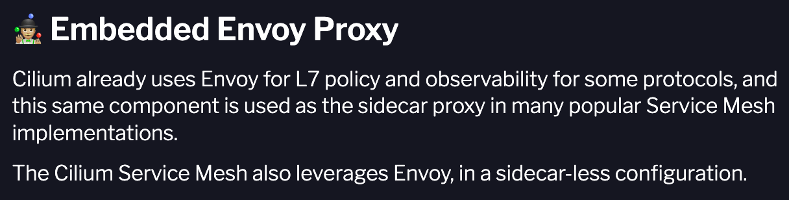
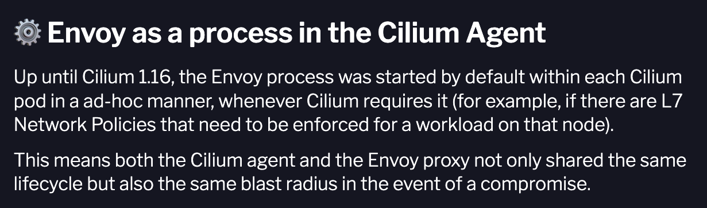
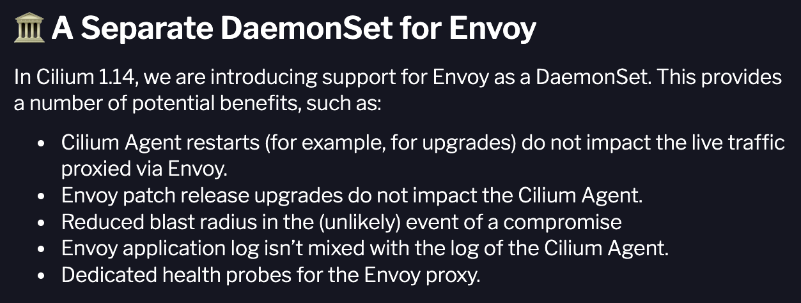
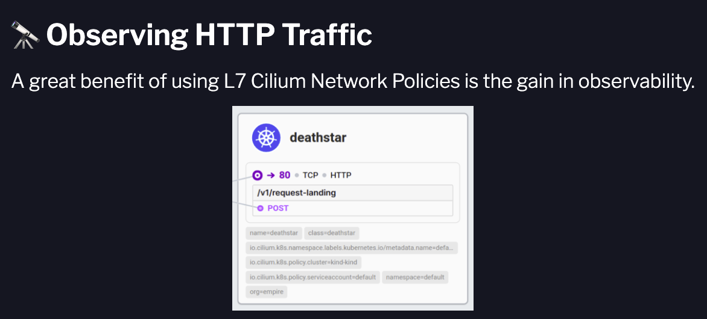
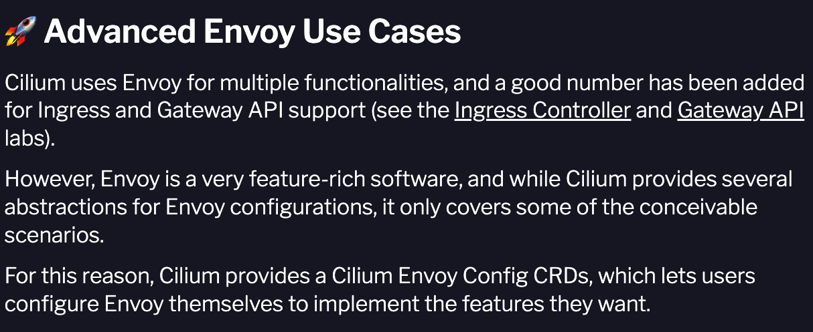
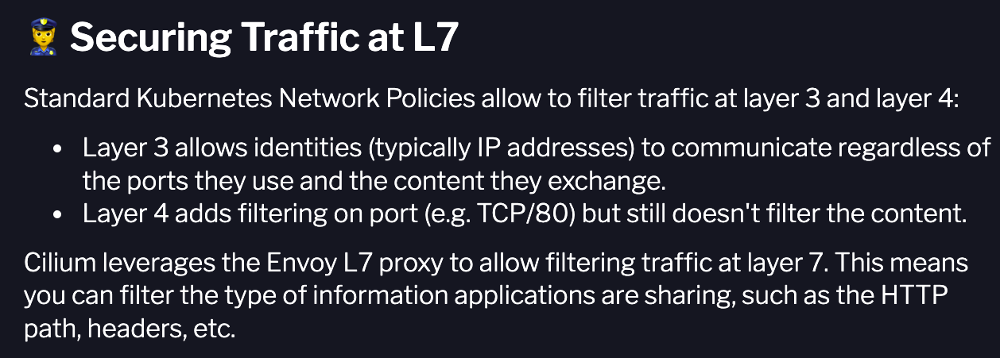
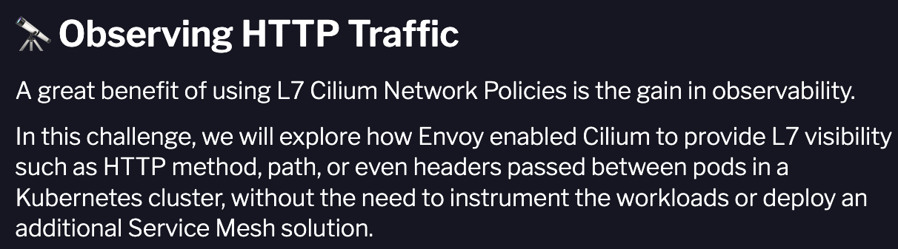
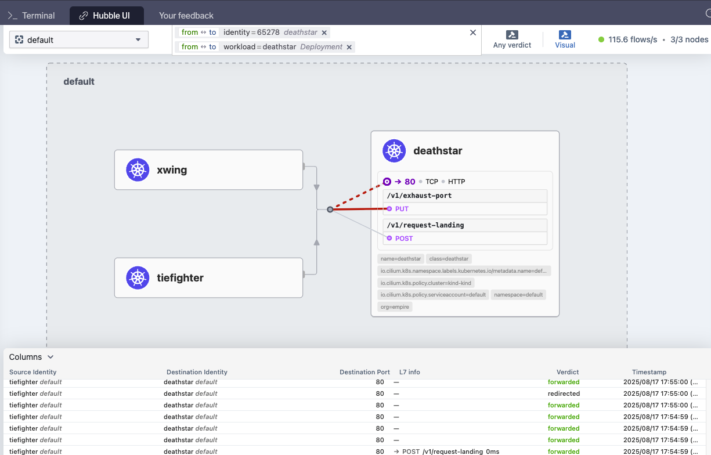
# The trace:to-proxy filter will show all flows that go through a proxy. In general, this could be either Envoy or the Cilium DNS proxy. # However, since we have not yet deployed a DNS Network Policy, you will only see flows related to Envoy at the moment. hubble observe --type trace:to-proxy Aug 23 14:40:01.319: default/tiefighter:40860 (ID:2362) -> default/deathstar-67c5c5c88-xzpw9:80 (ID:15849) to-proxy FORWARDED (TCP Flags: SYN) Aug 23 14:40:01.319: default/tiefighter:40860 (ID:2362) -> default/deathstar-67c5c5c88-xzpw9:80 (ID:15849) to-proxy FORWARDED (TCP Flags: ACK) Aug 23 14:40:01.319: default/tiefighter:40860 (ID:2362) -> default/deathstar-67c5c5c88-xzpw9:80 (ID:15849) to-proxy FORWARDED (TCP Flags: ACK, PSH) Aug 23 14:40:01.321: default/tiefighter:40860 (ID:2362) -> default/deathstar-67c5c5c88-xzpw9:80 (ID:15849) to-proxy FORWARDED (TCP Flags: ACK, FIN) # Let's extract all the flow information based on the protocol (e.g. HTTP) and source pod (e.g. the Tie Fighter), then export the result with the JSON output option, and finally filter with jq to only see the .flow.l7 field. This will show us the specific details parsed from the L7 traffic, such as the method and headers: # Observe the details of the flow, in particular the envoy-specific headers added to the request: ## X-Envoy-Internal ## X-Request-Id hubble observe --protocol http --from-pod default/tiefighter -o jsonpb | \ head -n 1 | jq '.flow.l7' { "type": "REQUEST", "http": { "method": "POST", "url": "http://deathstar.default.svc.cluster.local/v1/request-landing", "protocol": "HTTP/1.1", "headers": [ { "key": ":scheme", "value": "http" }, { "key": "Accept", "value": "*/*" }, { "key": "User-Agent", "value": "curl/7.88.1" }, { "key": "X-Envoy-Internal", "value": "true" }, { "key": "X-Request-Id", "value": "67e25d7c-c892-401d-8961-364b2eeb482a" } ] } } # Let's use the X-Request-Id to match a request and its response. # First, we'll need to make sure egress traffic from the Tie Fighter is captured by Envoy, so we'll need a L7 CNP for that. # If we apply an egress CNP though, this will disrupt DNS requests, which are also egress traffic, so we need to add a DNS policy as well: cat policies/tiefighter.yaml apiVersion: cilium.io/v2 kind: CiliumNetworkPolicy metadata: name: tiefighter namespace: default spec: endpointSelector: matchLabels: org: empire class: tiefighter egress: - toEndpoints: - matchLabels: class: deathstar org: empire toPorts: - ports: - port: "80" protocol: TCP rules: http: - method: POST path: /v1/request-landing kubectl apply -f policies/dns.yaml -f policies/tiefighter.yaml # All these flows are ingress flows, as you can see by filtering for HTTP flows in the egress direction, which should return nothing: # You can now see egress requests from the Tie Fighter being forwarded to the Death Star, as well as the responses from the Death Star: # When using Kubernetes Network Policies, responses are automatically allowed and do not require an explicit rule. # This is why egress traffic corresponding to the response from the Death Star to the Tie Fighter is allowed, even though there is not egress policy for it. hubble observe --protocol http --traffic-direction egress Aug 23 14:42:42.665: default/tiefighter:38152 (ID:2362) -> default/deathstar-67c5c5c88-xzpw9:80 (ID:15849) http-request FORWARDED (HTTP/1.1 POST http://deathstar.default.svc.cluster.local/v1/request-landing) Aug 23 14:42:42.667: default/tiefighter:38152 (ID:2362) <- default/deathstar-67c5c5c88-xzpw9:80 (ID:15849) http-response FORWARDED (HTTP/1.1 200 1ms (POST http://deathstar.default.svc.cluster.local/v1/request-landing)) # Now, let's match request IDs! Run the following command to record some Hubble HTTP flows and save them to a file: hubble observe --namespace default --protocol http -o jsonpb > flows.json # Find the first EGRESS flow in the file and get its ID: REQUEST_ID=$(cat flows.json | jq -r '.flow | select(.source.labels[0]=="k8s:app.kubernetes.io/name=tiefighter" and .traffic_direction=="EGRESS") .l7.http.headers[] | select(.key=="X-Request-Id") .value' | head -n1) echo $REQUEST_ID 7001bd86-dc88-444e-af56-1fac36525aca # Then find all flows with this request ID in the file and display their source identities: ## an egress flow from the tiefighter to the deathstar, corresponding to the original request ## the ingress flow for the same request, being forwarded from the proxy to the Death Star ## another egress flow for the response, from the deathstar to the tiefighter ## the corresponding ingress flow from the deathstar pod to the tiefighter cat flows.json | \ jq 'select(.flow.l7.http.headers[] | .value == "'$REQUEST_ID'") .flow | {src_label: .source.labels[0], dst_label: .destination.labels[0], traffic_direction, type: .l7.type, time}' { "src_label": "k8s:app.kubernetes.io/name=tiefighter", "dst_label": "k8s:app.kubernetes.io/name=deathstar", "traffic_direction": "EGRESS", "type": "REQUEST", "time": "2025-08-23T14:43:05.228784015Z" } { "src_label": "k8s:app.kubernetes.io/name=tiefighter", "dst_label": "k8s:app.kubernetes.io/name=deathstar", "traffic_direction": "INGRESS", "type": "REQUEST", "time": "2025-08-23T14:43:05.229139654Z" } { "src_label": "k8s:app.kubernetes.io/name=deathstar", "dst_label": "k8s:app.kubernetes.io/name=tiefighter", "traffic_direction": "INGRESS", "type": "RESPONSE", "time": "2025-08-23T14:43:05.229549930Z" } { "src_label": "k8s:app.kubernetes.io/name=deathstar", "dst_label": "k8s:app.kubernetes.io/name=tiefighter", "traffic_direction": "EGRESS", "type": "RESPONSE", "time": "2025-08-23T14:43:05.229800658Z" }- L7 Metric : Using Envoy, Hubble collections L7 metrics which can easily be exported via Prometheus.


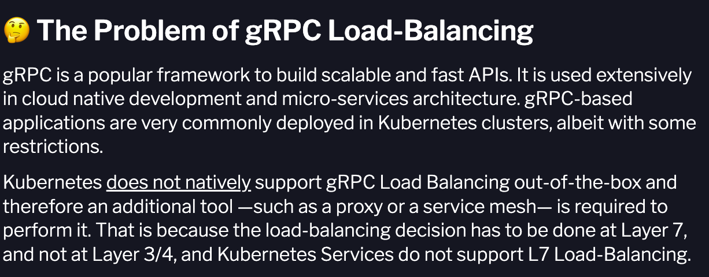
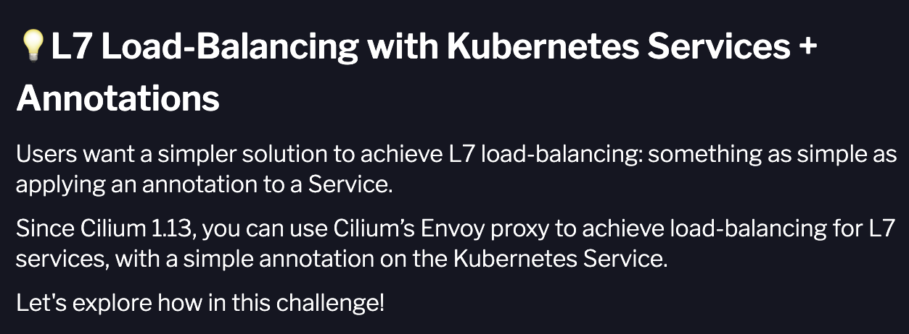
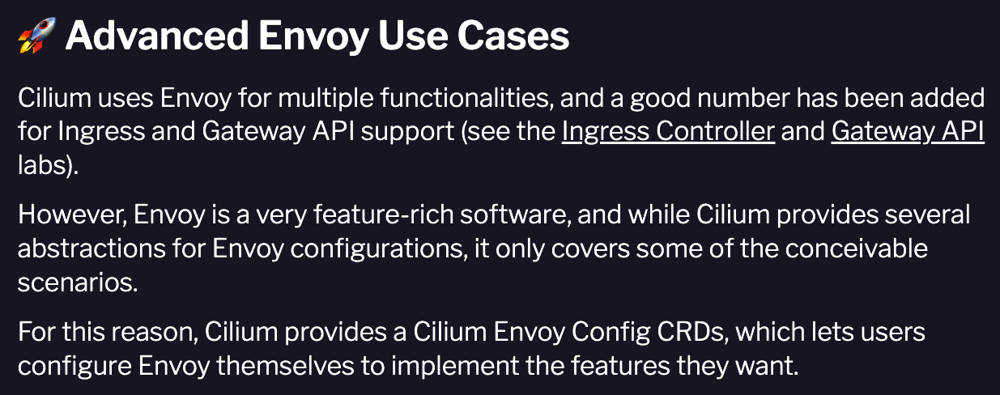
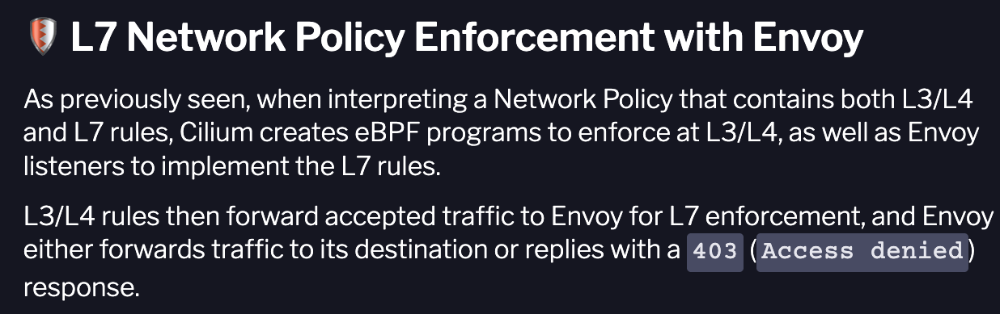
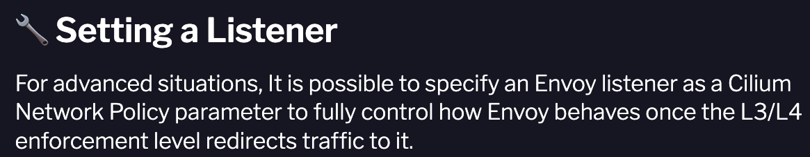
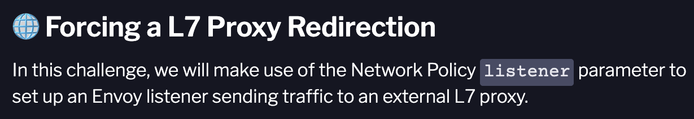

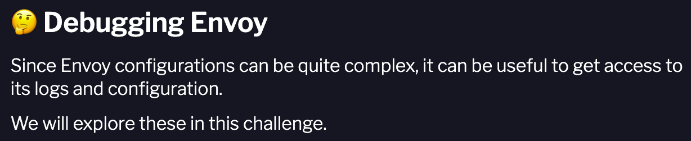
# Envoy Admin UI cilium upgrade \ --version 1.17.4 \ --reuse-values \ --set envoy.debug.admin.enabled=true \ --set envoy.debug.admin.port=9901 # CLIENT_NODE=$(kubectl -n proxy get po proxy-client -o jsonpath='{.spec.nodeName}') echo $CLIENT_NODE kind-worker2 # ENVOY_POD=$(kubectl -n kube-system get po -l k8s-app=cilium-envoy --field-selector spec.nodeName=$CLIENT_NODE -o name) echo $ENVOY_POD pod/cilium-envoy-tqfsx # kubectl -n kube-system port-forward --address 0.0.0.0 $ENVOY_POD 9901 Forwarding from 0.0.0.0:9901 -> 9901
{kind=link}
{kind=link}
{kind=link}
{kind=link}
{kind=link}
{kind=link}
{kind=link}
{kind=link}
{kind=link}
{kind=link}
{kind=link}
{kind=link}
{kind=link}
{kind=link}
{kind=link}
5.2. L7-Aware Traffic Management 활성화 : CiliumEnvoyConfig , CiliumClusterwideEnvoyConfig - Docs
- 주의사항 : 알아서 잘 쓰시라!
- CiliumEnvoyConfig 리소스는 최소한의 검증만 수행되며 정의된 충돌 해결 동작이 없습니다. 즉, EnvoyConfig의 동일한 구성 부분을 수정하는 CEC를 여러 개 만들면 결과를 예측할 수 없을 수 있습니다.
- 이 최소한의 검증 외에도, CiliumEnvoyConfig는 사용자에게 구성의 정확성에 대한 피드백을 최소한으로 제공합니다. 따라서 CEC가 바람직하지 않은 결과를 초래할 경우, 문제 해결을 위해서는 문제의 CiliumEnvoyConfig를 확인할 수 있는 대신 EnvoyConfig를 검토해야 합니다.
- CiliumEnvoyConfig는 Cilium의 Ingress 및 Gateway API 지원을 통해 노드별 Envoy 프록시를 통해 트래픽을 유도하는 데 사용됩니다. 자동 생성된 구성과 충돌하거나 수정하는 CEC를 만들면 결과를 예측할 수 없을 수 있습니다. 이러한 사용 사례에서는 CEC를 사용하는 데 매우 주의하세요. 위의 위험은 Cilium에서 생성된 모든 구성이 가능한 한 의미적으로 유효한지 확인함으로써 관리됩니다.
- CiliumEnvoyConfig 리소스를 직접 생성하는 경우(즉, Cilium Ingress 또는 Gateway API 컨트롤러를 통해 생성하지 않고), CEC가 E/W 트래픽을 관리하려는 경우 레이블 cilium.io/use-original-source-address : "false"를 설정합니다. 그렇지 않으면, EnvoyConfig는 업스트림 연결 풀의 소켓을 원래 소스 주소/포트에 바인딩합니다. 이로 인해 포드가 동일한 파이프라인 HTTP/1.1 또는 HTTP/2 연결을 통해 여러 요청을 보낼 때 5-tup 충돌이 발생할 수 있습니다. (Cilium 에이전트는 부모 Ref가 Cilium Ingress 또는 Gateway API 컨트롤러를 가리키는 모든 CEC가 cilium.io/use-original-source-address 을 "false"로 설정한 것으로 가정하지만, 다른 모든 CEC는 이 레이블을 "true"로 설정한 것으로 가정합니다.)
- As of now only the Envoy API v3 is supported. - Docs
- 설정
# helm upgrade cilium cilium/cilium --version 1.18.1 --namespace kube-system --reuse-values \ --set ingressController.enabled=true --set gatewayAPI.enabled=false \ --set envoyConfig.enabled=true --set loadBalancer.l7.backend=envoy kubectl -n kube-system rollout restart deployment/cilium-operator kubectl -n kube-system rollout restart ds/cilium kubectl -n kube-system rollout restart ds/cilium-envoy # cilium config view |grep -i envoy cilium status --wait
- Supported Envoy Extension Resource Types
- Envoy extensions are resource types that may or may not be built in to an Envoy build. The standard types referred to in Envoy documentation, such as
type.googleapis.com/envoy.config.listener.v3.Listener, andtype.googleapis.com/envoy.config.route.v3.RouteConfiguration, are always available.
- Cilium nodes deploy an Envoy image to support Cilium HTTP policy enforcement and observability. This build of Envoy has been optimized for the needs of the Cilium Agent and does not contain many of the Envoy extensions available in the Envoy code base.
- To see which Envoy extensions are available, please have a look at the Envoy extensions configuration file. Only the extensions that have not been commented out with
#are built in to the Cilium Envoy image. We will evolve the list of built-in extensions based on user feedback.
- Envoy extensions are resource types that may or may not be built in to an Envoy build. The standard types referred to in Envoy documentation, such as
- 주의사항 : 알아서 잘 쓰시라!
5.3. L7 Load Balancing and URL re-writing - Docs
- 목표 : 두 백엔드 서비스(echo-service-1/2) 간의 요청 부하를 분산 및 URL Re-write Envoy 리스너를 설정
# 샘플 애플리케이션 배포 kubectl apply -f https://raw.githubusercontent.com/cilium/cilium/1.18.1/examples/kubernetes/servicemesh/envoy/test-application.yaml # 확인 ## 두 개의 클라이언트 배포 client , client2 ## 두 가지 서비스, echo-service-1, echo-service-2 kubectl get -f https://raw.githubusercontent.com/cilium/cilium/1.18.1/examples/kubernetes/servicemesh/envoy/test-application.yaml NAME DATA AGE configmap/coredns-configmap 1 20s NAME READY UP-TO-DATE AVAILABLE AGE deployment.apps/client 1/1 1 1 20s deployment.apps/client2 1/1 1 1 20s deployment.apps/echo-service-1 1/1 1 1 20s deployment.apps/echo-service-2 1/1 1 1 20s NAME TYPE CLUSTER-IP EXTERNAL-IP PORT(S) AGE service/echo-service-1 NodePort 10.96.64.53 <none> 8080:32239/TCP 20s service/echo-service-2 NodePort 10.96.133.126 <none> 8080:30147/TCP 20s # client2 에 대한 Pod ID로 환경 변수 지정 export CLIENT2=$(kubectl get pods -l name=client2 -o jsonpath='{.items[0].metadata.name}') echo $CLIENT2 client2-c97ddf6cf-tpp4z # Start Observing Traffic with Hubble cilium hubble port-forward& hubble observe --from-pod $CLIENT2 -f # You should be able to get a response from both of the backend services individually from client2: kubectl exec -it $CLIENT2 -- curl -v echo-service-1:8080/ kubectl exec -it $CLIENT2 -- curl -v echo-service-2:8080/ # Verify that you get a 404 error response if you curl to the non-existent URL /foo on these services: kubectl exec -it $CLIENT2 -- curl -v echo-service-1:8080/foo kubectl exec -it $CLIENT2 -- curl -v echo-service-2:8080/foo < HTTP/1.1 404 Not Found
- Add Layer 7 Policy
# Adding a Layer 7 policy introduces the Envoy proxy into the path for this traffic kubectl apply -f https://raw.githubusercontent.com/cilium/cilium/1.18.1/examples/kubernetes/servicemesh/envoy/client-egress-l7-http.yaml # client2 is allowed to contact one.one.one.one/ on port 80 and the echo Pod # on port 8080. HTTP introspection is enabled for client2. # The toFQDNs section relies on DNS introspection being performed by # the client-egress-only-dns policy. apiVersion: "cilium.io/v2" kind: CiliumNetworkPolicy metadata: name: client-egress-l7-http spec: description: "Allow GET one.one.one.one:80/ and GET <echo>:8080/ from client2" endpointSelector: matchLabels: other: client egress: # Allow GET / requests towards echo pods. - toEndpoints: - matchLabels: k8s:kind: echo toPorts: - ports: - port: "8080" protocol: TCP rules: http: - method: "GET" path: "/" # Allow GET / requests, only towards one.one.one.one. - toFQDNs: - matchName: "one.one.one.one" toPorts: - ports: - port: "80" protocol: TCP rules: http: - method: "GET" path: "/" kubectl apply -f https://raw.githubusercontent.com/cilium/cilium/1.18.1/examples/kubernetes/servicemesh/envoy/client-egress-only-dns.yaml apiVersion: cilium.io/v2 kind: CiliumNetworkPolicy metadata: name: client-egress-only-dns spec: endpointSelector: matchLabels: kind: client egress: - toPorts: - ports: - port: "53" protocol: ANY rules: dns: - matchPattern: "*" toEndpoints: - matchLabels: k8s:io.kubernetes.pod.namespace: kube-system k8s:k8s-app: kube-dns - matchLabels: k8s:io.kubernetes.pod.namespace: kube-system k8s:k8s-app: coredns # Make a request to a backend service (either will do): kubectl exec -it $CLIENT2 -- curl -v echo-service-1:8080/ kubectl exec -it $CLIENT2 -- curl -v echo-service-2:8080/foo < HTTP/1.1 403 Forbidden # 레이어 7 정책을 추가하면 레이어 7 가시성이 가능합니다. 이제 허블 출력에 프록시로의 흐름이 포함되어 있으며, 레벨 7에서의 HTTP 프로토콜 정보도 표시됩니다 # 예: HTTP/1.1 GET http://echo-service-1:8080/
- Test Layer 7 Policy Enforcement
# The policy only permits GET requests to the / path, so you will see requests to any other URL being dropped. # /foo에 대한 cnp가 없으므로 DROPPED!! kubectl exec -it $CLIENT2 -- curl -v echo-service-1:8080/foo ## The Hubble output will show the HTTP request being dropped, like this: Aug 23 14:58:06.117: default/client2-c97ddf6cf-tpp4z:42584 (ID:9655) -> default/echo-service-1-867d69c679-hrszk:8080 (ID:30363) http-request DROPPED (HTTP/1.1 GET http://echo-service-1:8080/foo)
- Add Envoy load-balancing and URL re-writing
# Envoy 로드 밸런싱 및 URL 재작성 추가 : 두 백엔드 echo-서비스 간에 50/50의 부하 분산 , # 경로 /foo를 다시 작성합니다/ => regex를사용하여 "/foo" pattern을 찾고 substitution: "/"를 통해서 rewrite # Apply the envoy-traffic-management-test.yaml file, which defines a CiliumClusterwideEnvoyConfig kubectl apply -f https://raw.githubusercontent.com/cilium/cilium/1.18.1/examples/kubernetes/servicemesh/envoy/envoy-traffic-management-test.yaml apiVersion: cilium.io/v2 kind: CiliumClusterwideEnvoyConfig metadata: name: envoy-lb-listener spec: services: - name: echo-service-1 namespace: default - name: echo-service-2 namespace: default resources: - "@type": type.googleapis.com/envoy.config.listener.v3.Listener name: envoy-lb-listener filter_chains: - filters: - name: envoy.filters.network.http_connection_manager typed_config: "@type": type.googleapis.com/envoy.extensions.filters.network.http_connection_manager.v3.HttpConnectionManager stat_prefix: envoy-lb-listener rds: route_config_name: lb_route use_remote_address: true skip_xff_append: true http_filters: - name: envoy.filters.http.router typed_config: "@type": type.googleapis.com/envoy.extensions.filters.http.router.v3.Router - "@type": type.googleapis.com/envoy.config.route.v3.RouteConfiguration name: lb_route virtual_hosts: - name: "lb_route" domains: [ "*" ] routes: - match: prefix: "/" route: weighted_clusters: clusters: - name: "default/echo-service-1" weight: 50 - name: "default/echo-service-2" weight: 50 retry_policy: retry_on: 5xx num_retries: 3 per_try_timeout: 1s regex_rewrite: pattern: google_re2: { } regex: "^/foo.*$" substitution: "/" - "@type": type.googleapis.com/envoy.config.cluster.v3.Cluster name: "default/echo-service-1" connect_timeout: 5s lb_policy: ROUND_ROBIN type: EDS outlier_detection: split_external_local_origin_errors: true consecutive_local_origin_failure: 2 - "@type": type.googleapis.com/envoy.config.cluster.v3.Cluster name: "default/echo-service-2" connect_timeout: 3s lb_policy: ROUND_ROBIN type: EDS outlier_detection: split_external_local_origin_errors: true consecutive_local_origin_failure: 2 # CiliumClusterwideEnvoyConfig 약자 ccec kubectl get ccec -o yaml | yq kubectl get ccec NAME AGE envoy-lb-listener 80s # 50:50 LB 분산 호출됨 kubectl exec -it $CLIENT2 -- curl -v echo-service-1:8080 # A request to /foo should now succeed, because of the path re-writing: # 기존에는 /foo로 요청시 cnp가 없으므로 /foo에 대한 요청은 실패 했겠지만, 현재는 "/foo -> /"로 rewrite하는 CiliumClusterwideEnvoyConfig를 적용했기때문에 정상 접근됨 kubectl exec -it $CLIENT2 -- curl -v echo-service-1:8080/foo # 하지만 네트워크 정책은 여전히 /로 다시 작성되지 않은 경로에 대한 요청을 방지합니다. 즉, 이전에 적용된 cnp에 의해 "/" path만 허용되고 /bar에 대해서는 rewirte하는 ccec가 없음. # 예를 들어, 이 요청은 패킷이 삭제되고 403 금지 응답 코드가 생성 kubectl exec -it $CLIENT2 -- curl -v echo-service-1:8080/bar < HTTP/1.1 403 Forbidden ## Output from hubble observe Aug 23 15:02:37.731: default/client2-c97ddf6cf-tpp4z:42760 (ID:9655) -> default/echo-service-2-5df858689b-l79zc:8080 (ID:6710) http-request DROPPED (HTTP/1.1 GET http://echo-service-1:8080/bar) # 로그 확인 kubectl -n kube-system logs daemonsets/cilium-envoy
- 목표 : 두 백엔드 서비스(echo-service-1/2) 간의 요청 부하를 분산 및 URL Re-write Envoy 리스너를 설정
도전과제4-1L7 Path Translation - Docs
도전과제4-2L7 Circuit Breaking - Docs
도전과제4-3Proxy Load Balancing for Kubernetes Services (beta) - Docs
도전과제4-4L7 Traffic Shifting - Docs